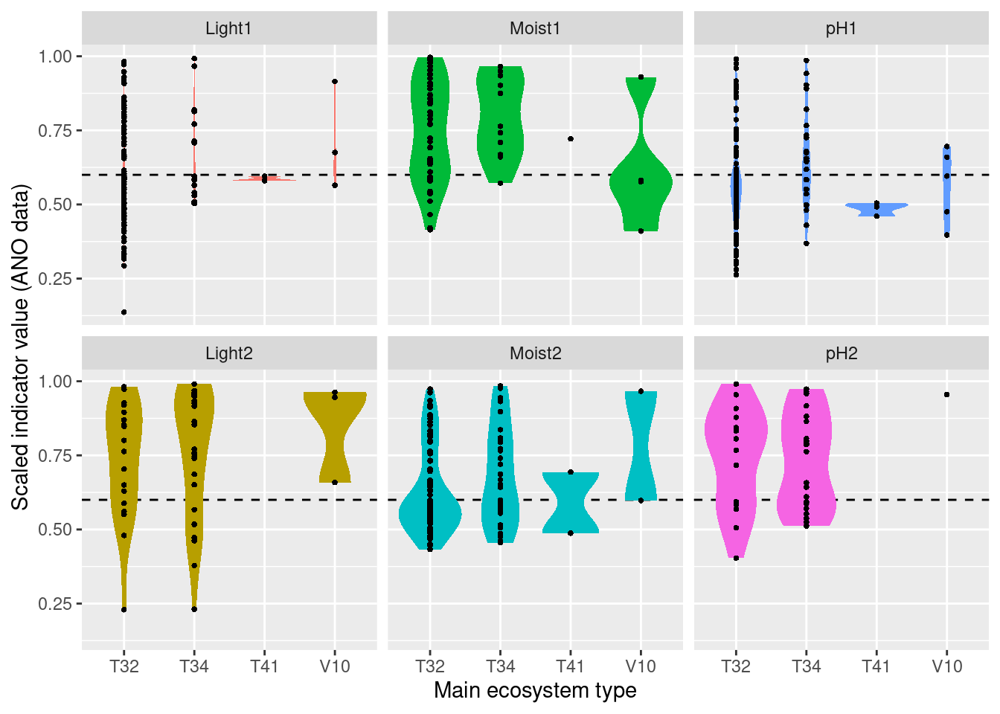
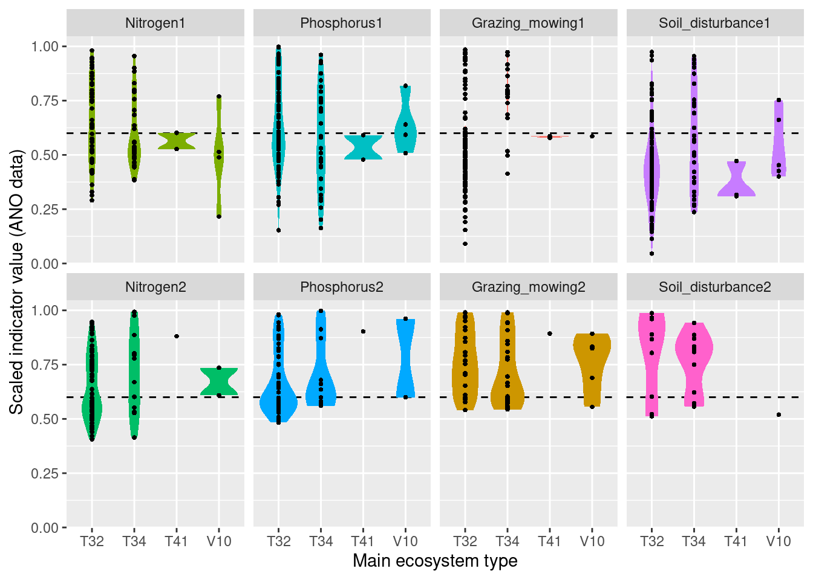
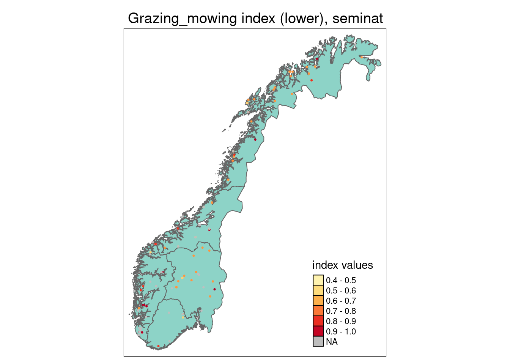
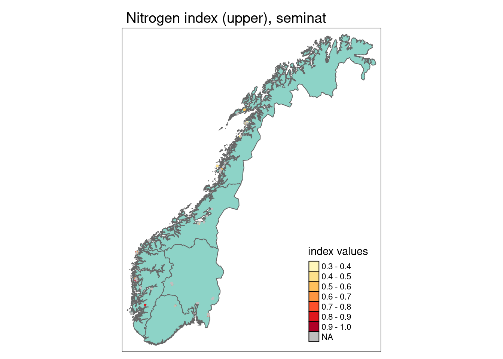

5 Functional plant indicators, semi-natural ecosystems (Light, Moisture, pH, Nitrogen, Phosphorus, Grazing_mowing, Soil disturbance)
Author and date: Joachim Töpper
May 2023
| Ecosystem | Økologisk.egenskap | ECT.class |
|---|---|---|
| semi-natural | Primærproduksjon | Functional state characteristic |
| semi-natural | Abiotiske forhold | Functional state characteristic |
5.1 Introduction
Functional plant indicators can be used to describe the functional signature of plant communities by calculating community-weighted means of plant indicator values for plant communities (Diekmann 2003). The functional signature of plant communities may be indicative of ecosystem identity, depending on which functional plant indicator we look at (cf. Töpper et al. 2018). For instance, using an indicator for moisture one would find a functional signature with higher moisture values for plant communities in mires compared to e.g. grasslands or forests. Deviations in the functional signature of such an indicator beyond a certain range of indicator values (as there of course is natural variation of functional signatures within an ecosystem type) may be related to a reduction in ecological condition. Here, we combine functional plant indicator data with field sampled plant community data from the Norwegian nature monitoring program ANO (Tingstad et al. 2019) for semi-natural ecosystems. We calculate the functional signature of plant communities in the monitored sites with respect to light, moisture, pH, nitrogen, phosphorus, grazing_mowing, and soil disturbance. These functional signatures are then compared to reference distributions of functional signature, separately for each wetland ecosystem type, calculated from ‘generalized species lists’ underlying the Norwegian categorization system for eco-diversity (Halvorsen et al. 2020). These plant functional condition indicators are developed following the principles and technical protocol of the IBECA framework (Jakobsson et al. 2021, Töpper & Jakobsson 2021). Note that deviations from the reference may occur in both directions, e.g. the moisture signature from the testing data may be higher or lower than in the reference. Deviations in these two directions indicate very different environmental phenomena and thus have to be treated separately. Therefore, we develop two condition indicators for each functional plant indicator, a lower one and an upper one (see further down for more details).
5.2 About the underlying data
In the ‘functional plant indicator’ project for semi-natural ecosystems, we use four sets of data for building indicators for ecological condition:
- as test data we use plant community data from (1) the ANO monitoring scheme (cf. Tingstad et al. 2019, contains semi-natural grasslands(T32), semi-natural wet meadows (V10), heathlands (T34), and we also decided to include near-semi-natural meadows (T41) ) and (2) from the ASO monitoring scheme (cf. Bär et al. 2021, targets semi-natural grasslands (T32) only)
- as reference data we use (3) generalized species lists from the Norwegian categorization system for eco-diversity (NiN) (cf. Halvorsen et al. 2020)
- Swedish plant indicator data for light, moisture, pH, and nitrogen from Tyler et al. (2021)
ANO monitoring data: ANO stands for ‘areal-representativ naturovervåking’, i.e. ‘area representative nature monitoring’. 1000 sites are randomly distributed across mainland Norway and visited within a 5-year cycle. Each ANO site spans a 500 x 500 m grid cell, and the data collection at each ANO site includes up to 12 evenly distributed vegetation analyses in 1 x 1 m plots (up to 12, because some of these evenly distributed points may be in water or otherwise inaccessible). For the vegetation analyses, the cover of each vascular plant species in the plot is recorded. Every vegetation analysis is accompanied by an assessment of the ecosystem the plot lies in, including ecosystem type and some additional variables related to ecosystem-specific drivers of state. In the analysis in this document, we only use the plots which were classified as one of the semi-natural ecosystem types in the Norwegian categorization system for eco-diversity (NiN). In the analysis in this document, we use the data available on Miljødirektoratets kartkatalog (https://kartkatalog.miljodirektoratet.no/Dataset/Details/2054), which comprises data from the first three ANO-years, 2019-2021, and a total of 8887 plots in 498 sites.
ASO monitoring data ASO stands for ‘arealrepresentativ overvåking av semi-naturlig eng’, i.e. ‘area representative monitoring of semi-natural meadows’. In ASO ca. 20 areas are chosen annually based on a probabilistic distribution model of semi-natural meadows in Norway (see Johansen et al. 2017 for details). Each ASO area (område) spans a 10 x 10 km grid cell, in which a maximum of up to 10 sites (flate) of 500 x 500 m are chosen. In each site, all semi-natural meadows (eng) with an area of at least 250 sqm are delineated. In up to three meadows per site the plant species composition is sampled using a transect method. For the vegetation transect analyses, both cover and frequency of each vascular plant species along the transect is recorded. For every meadow, the species data collection is accompanied by an assessment of the ecosystem, including ecosystem type and some additional variables related to ecosystem-specific drivers of state. In the analysis in this document, we use the ASO data from 2022 only as the data from 2021 and the ASO pilot in 2019 are not in sufficiently good shape. In the future, all ASO data will hopefully be available in Miljødirektoratets kartkatalog.
NiN reference data: The generalized species lists underlying the ecosystem categorization in NiN represent expert-compiled species lists based on empirical evidence from the literature and expert knowledge of the systems and their species. In these lists, every species is assigned an abundance value on a 6-step scale, with each step representing a range for the ‘expected combination of frequency and cover’ of occurrence (1: < 1/32, 2: 1/32 - 1/8 , 3: 1/8 - 3/8, 4: 3/8 - 4/5, 5: 3/8 - 4/5 + dominance, 6: > 4/5). For the purpose of this project, these steps are simplified to maximum ‘expected combination of frequency and cover’, whereby steps 4 & 5 are assigned 0.6 and 0.8, respectively, in order to distinguish between them.
The Swedish plant indicator set published by Tyler et al. (2021) contains a large collection of plant indicators based on the Swedish flora, which is well representative of the Norwegian flora as well. From this set, we decided to include indicator data for light, moisture, pH, nitrogen, phosphorus, grazing_mowing, and soil disturbance for semi-natural ecosystems as these are thought to be subject to potential change due to abandonment, drainage/flooding, pollution, and erosion.
5.2.1 Representativity in time and space
For semi-natural ecosystems, the ANO data in this analysis contain 233 plots in 83 sites, in principle distributed randomly across the country. As semi-natural ecosystems occur more often in certain regions of Norway than in others, the amount of plots and sites is not equal among Norway’s five regions. The 233 plots are distributed across regions in the following way:
- Northern Norway: ?
- Central Norway: ?
- Eastern Norway: ?
- Western Norway: ?
- Southern Norway: ?
For ASO, this analysis covers 381 meadow transects in 96 sites.
The 381 transects are distributed across regions in the following way:
- Northern Norway: ?
- Central Norway: ?
- Eastern Norway: ?
- Western Norway: ?
- Southern Norway: ?
5.2.2 Temporal coverage
The ANO evaluation data cover the first three years, 2019-2021, of the first 5-year-cycle in the ANO monitoring scheme, as well as the 2022 ASO-data. Thus there is no actual time series to these data, and the indicator evaluation does therefore not include any temporal analyses.
5.4 Reference state and values
5.4.1 Reference state
The reference state is defined via the functional signature of the generalized species lists in NiN (see also Töpper et al. 2018). By bootstrapping the species lists (see details further below) and calculating community-weighted means of functional plant indicators for every re-sampled community, we describe the reference state as a distribution of indicator values for each respective plant functional indicator. These distributions are calculated for ecosystem sub-types (“grunntyper” or “kartleggingsenheter” at a 1:5000 mapping scale) within the main wetland types in NiN. A more extensive discussion on the use of reference communities can be found in Jakobsson et al. (2020).
5.4.2 Reference values, thresholds for defining good ecological condition, minimum and/or maximum values
In this analysis, we derive scaling values from statistical (here, non-parametric) distributions (see Jakobsson et al. 2010). For each ecosystem sub-type and plant functional indicator, the reference value is defined as the median value of the indicator value distribution. As in most cases the distributions naturally are two-sided (but see the Heat-requirement indicator in the mountain assessment for an example of a one-sided functional plant indicator, Fremstad et al. 2022), and deviation from the optimal state thus may occur in both direction (e.g. indicating too low or too high pH), we need to define two threshold values for good ecological condition as well as both a minimum and maximum value. In line with previous assessments of ecological condition for Norwegian forests and mountains, we define a lower and an upper threshold value via the 95% confidence interval of the reference distribution, i.e. its 0.025 and 0.975 quantiles. The minimum and maximum values are given by the minimum and maximum of the possible indicator values for each respective plant functional indicator. For details on the scaling principles in IBECA, please see Töpper & Jakobsson (2021).
5.5 Uncertainties
We can calculate a mean indicator value (after scaling) for every region (or any other delimited area of interest) as well as its corresponding standard error and standard deviation as a measure of spatial uncertainty for a geographical area.
5.6 References
Bär, A., Albertsen, E., Bele, B., Daugstad, K., Grenne, S.N., Jakobsson, S., Solbu, E.B., Thorvaldsen, P., Vesterbukt, P., Wehn, S. & Johansen, L. 2021. Utvikling av nasjonal arealrepresentativ overvåking av semi-naturlig eng (ASO). Uttesting, ferdigstilling og utvalg av områder. NIBIO Rapport 7 (7). 84 s.
Diekmann, M. 2003. Species indicator values as an important tool in applied plant ecology - a review. Basic and Applied Ecology 4: 493-506, doi:10.1078/1439-1791-00185
Framstad, E., Kolstad, A. L., Nybø, S., Töpper, J. & Vandvik, V. 2022. The condition of forest and mountain ecosystems in Norway. Assessment by the IBECA method. NINA Report 2100. Norwegian Institute for Nature Research.
Halvorsen, R., Skarpaas, O., Bryn, A., Bratli, H., Erikstad, L., Simensen, T., & Lieungh, E. (2020). Towards a systematics of ecodiversity: The EcoSyst framework. Global Ecology and Biogeography, 29(11), 1887-1906. doi:10.1111/geb.13164
Jakobsson, S., Töpper, J.P., Evju, M., Framstad, E., Lyngstad, A., Pedersen, B., Sickel, H., Sverdrup-Thygeson, A., Vandvik. V., Velle, L.G., Aarrestad, P.A. & Nybø, S. 2020. Setting reference levels and limits for good ecological condition in terrestrial ecosystems. Insights from a case study based on the IBECA approach. Ecological Indicators 116: 106492.
Jakobsson, S., Evju, M., Framstad, E., Imbert, A., Lyngstad, A., Sickel, H., Sverdrup-Thygeson, A., Töpper, J., Vandvik, V., Velle, L.G., Aarrestad, P.A. & Nybø, S. 2021. An index-based assessment of ecological condition and its links to international frameworks. Ecological Indicators 124: 107252.
Johansen, L., S. Wehn, R. Halvorsen, og K. Hovstad. 2017. Metode for overvåking av semi-naturlig eng i Norge. NIBIO Rapport 3 (25). 35 s.
Tingstad, L., Evju, M., Sickel, H., & Töpper, J. 2019. Utvikling av nasjonal arealrepresentativ naturovervåking (ANO). Forslag til gjennomføring, protokoller og kostnadsvurderinger med utgangspunkt i erfaringer fra uttesting i Trøndelag. NINA Rapport 1642.
Töpper, J. & Jakobsson, S. 2021. The Index-Based Ecological Condition Assessment (IBECA) - Technical protocol, version 1.0. NINA Report 1967. Norwegian Institute for Nature Research.
Töpper, J., Velle, L.G. & Vandvik, V. 2018. Developing a method for assessment of ecological state based on indicator values after Ellenberg and Grime (revised edition). NINA Report 1529b. Norwegian Institute for Nature Research.
Tyler, T., Herbertsson, L., Olofsson, J., & Olsson, P. A. 2021. Ecological indicator and traits values for Swedish vascular plants. Ecological In-dicators, 120. doi:10.1016/j.ecolind.2020.106923
5.7 Analyses
5.7.1 Data sets
ANO data
ASO data
Plant indicators from Tyler et al. (2021)
Generalized species lists NiN
5.7.1.1 Data handling
- Checking for errors
- Checking species nomenclature in the different species lists to make species and indicator data possible to merge
- Merging indicator data with monitoring data and indicator data with reference data (not shown here, but documented in the code)
leaving us with the monitoring data including plant indicators (ANO.sp.ind) and the reference data including plant indicators (NiN.wetland.cov)
head(ANO.sp.ind)
#> Species art_dekning
#> 1 Abies alba 0
#> 2 Abies alba 0
#> 3 Abies alba 0
#> 4 Abies alba 0
#> 5 Abies alba 0
#> 6 Abies alba 0
#> ParentGlobalID Light Moisture
#> 1 {0431743B-F268-4819-98F7-FFB7006E55BA} 2 5
#> 2 {CB1796B9-01F5-4109-B44E-4582CA855F93} 2 5
#> 3 {4600826A-7E20-4136-9040-5F98356963CE} 2 5
#> 4 {D880DE20-5DA3-433B-87D3-679C433471A3} 2 5
#> 5 {AB9ED5C2-E906-4C73-B543-EC6CB28B39D5} 2 5
#> 6 {B7DD61EE-A113-4486-A4B8-D50ACAAC648B} 2 5
#> Soil_reaction_pH Nitrogen Phosphorus Grazing_mowing
#> 1 5 5 3 1
#> 2 5 5 3 1
#> 3 5 5 3 1
#> 4 5 5 3 1
#> 5 5 5 3 1
#> 6 5 5 3 1
#> Soil_disturbance
#> 1 1
#> 2 1
#> 3 1
#> 4 1
#> 5 1
#> 6 1
head(NiN.seminat.cov)
#> sp T34-C1 T34-C2a T34-C2b T34-C2c
#> 1 Abietinella abietina 0 0 0 0
#> 2 Acer platanoides 0 0 0 0
#> 3 Achillea millefolium 0 0 0 0
#> 4 Achillea ptarmica 0 0 0 0
#> 5 Acinos arvensis 0 0 0 0
#> 6 Aconitum septentrionale 0 0 0 0
#> T34-C3 T34-C4a T34-C4b T34-C4c T34-C4d T34-C5a T34-C5b
#> 1 0 0 0.00000 0.00000 0 0 0.00000
#> 2 0 0 0.00000 0.00000 0 0 0.00000
#> 3 0 0 0.03125 0.03125 0 0 0.03125
#> 4 0 0 0.00000 0.00000 0 0 0.00000
#> 5 0 0 0.00000 0.00000 0 0 0.00000
#> 6 0 0 0.00000 0.00000 0 0 0.00000
#> T34-C5c T34-C6a T34-C6b T34-C6c T32-C1C2 T32-C3C4
#> 1 0.00000 0 0.00000 0.00000 0.00000 0.00000
#> 2 0.00000 0 0.00000 0.00000 0.00000 0.00000
#> 3 0.03125 0 0.03125 0.03125 0.03125 0.60000
#> 4 0.00000 0 0.00000 0.00000 0.00000 0.03125
#> 5 0.00000 0 0.00000 0.00000 0.00000 0.00000
#> 6 0.00000 0 0.00000 0.00000 0.00000 0.00000
#> T32-C5C20a T32-C7C8 T32-C5C20b T32-C9a T32-C9b T32-C15
#> 1 0.03125 0.37500 0.03125 0.000 0.00000 0.60000
#> 2 0.00000 0.00000 0.00000 0.000 0.00000 0.00000
#> 3 0.37500 0.37500 0.60000 0.125 0.03125 0.37500
#> 4 0.03125 0.03125 0.03125 0.000 0.00000 0.03125
#> 5 0.03125 0.12500 0.03125 0.000 0.00000 0.12500
#> 6 0.03125 0.03125 0.00000 0.125 0.00000 0.00000
#> T32-C21C6a T32-C21C6b T32-C10a T32-C10b T32-C16 T41a
#> 1 0.03125 0.03125 0.00000 0.00000 0.37500 0.00000
#> 2 0.00000 0.00000 0.00000 0.00000 0.00000 0.00000
#> 3 0.60000 0.80000 0.37500 0.12500 0.37500 0.12500
#> 4 0.03125 0.03125 0.03125 0.03125 0.03125 0.03125
#> 5 0.00000 0.00000 0.00000 0.00000 0.03125 0.00000
#> 6 0.00000 0.00000 0.03125 0.00000 0.00000 0.00000
#> T41b T45-C1C2 T45-C3 V10-C1C2 V10-C3 Light Moisture
#> 1 0.00000 0.00000 0 0 0 NA NA
#> 2 0.00000 0.00000 0 0 0 4 4
#> 3 0.37500 0.03125 0 0 0 6 2
#> 4 0.03125 0.00000 0 0 0 5 6
#> 5 0.00000 0.00000 0 0 0 7 1
#> 6 0.00000 0.00000 0 0 0 4 5
#> Soil_reaction_pH Nitrogen Phosphorus Grazing_mowing
#> 1 NA NA NA NA
#> 2 6 5 3 2
#> 3 5 5 5 5
#> 4 4 4 3 4
#> 5 7 3 1 6
#> 6 7 7 5 3
#> Soil_disturbance
#> 1 NA
#> 2 5
#> 3 2
#> 4 2
#> 5 7
#> 6 2For each ecosystem type with a NiN species list, we can calculate a community weighted mean (CWM) for the relevant functional plant indicators. For semi-natural ecosystems, we are testing “Light”, “Moisture”, “Soil_reaction_pH”, “Nitrogen”, “Phosphorus”, “Grazing_mowing”, and “Soil_disturbance”. In order to get distributions of CWMs rather than one single value (for comparison with the empirical testing data) the NiN lists can be bootstrapped.
5.7.1.1.1 bootstrap function for frequency abundance
- function to calculate community weighted means of selected indicator values (ind)
- for species lists (sp) with given abundances in percent (or on a scale from 0 to 1) in one or more ‘sites’ (abun)
- with a given number of iterations (iter),
- with species given a certain minimum abundance occurring in all bootstraps (obl), and
- with a given re-sampling ratio of the original species list (rat)
- in every bootstrap iteration the abundance of the sampled species can be randomly changed by a limited amount if wished by introducing a re-sampling of abundance values from adjacent abundance steps with a certain probability (var.abun)
Running the bootstraps
colnames(NiN.seminat)
# 1st column is the species
# 2nd-35th column is the abundances of sp in different ecosystem types
# 36th-42nd column is the indicator values of the respective species
# we choose 1000 iterations
# species with abundance 1 (i.e. a max of 100%, must be included in each sample)
# each sample re-samples 1/3 of the number of species
# the abundance of the re-sampled species may vary (see bootstrap function for details)
seminat.ref.cov <- indBoot.freq(sp=NiN.seminat.cov[,1],abun=NiN.seminat.cov[,2:35],ind=NiN.seminat.cov[,36:42],
iter=1000,obl=1,rat=1/3,var.abun=T)
# fixing NaNs
for (i in 1:length(seminat.ref.cov) ) {
for (j in 1:ncol(seminat.ref.cov[[i]]) ) {
v <- seminat.ref.cov[[i]][,j]
v[is.nan(v)] <- NA
seminat.ref.cov[[i]][,j] <- v
}
}
head(seminat.ref.cov[[1]])
#> T34-C1 T34-C2a T34-C2b T34-C2c T34-C3 T34-C4a
#> 1 4.495751 4.668869 5.187970 4.913599 4.471859 5.044185
#> 2 4.798450 4.789003 5.112410 4.897709 4.776579 5.063167
#> 3 4.723618 4.693841 5.284698 4.929487 4.869919 4.661407
#> 4 4.676056 5.077778 5.052503 5.073930 4.047897 5.147425
#> 5 4.283480 4.925737 4.749687 4.936929 4.641347 5.115889
#> 6 4.439506 4.992091 4.975490 5.040605 4.395466 4.782738
#> T34-C4b T34-C4c T34-C4d T34-C5a T34-C5b T34-C5c
#> 1 4.905660 4.831395 5.138790 4.976965 5.305769 5.358025
#> 2 4.901687 4.903049 5.356568 4.928693 5.177665 5.633907
#> 3 5.167203 5.053498 5.128882 5.028829 4.947210 5.298851
#> 4 5.076003 4.687811 5.152466 4.780269 5.279133 5.332696
#> 5 4.793367 4.763258 5.149013 5.052083 4.692387 4.997319
#> 6 4.847183 4.508185 5.120944 4.988289 5.096742 5.337802
#> T34-C6a T34-C6b T34-C6c T32-C1C2 T32-C3C4 T32-C5C20a
#> 1 4.829918 4.901768 5.295416 5.197669 5.095587 5.395248
#> 2 4.785810 5.021924 5.420382 5.120633 5.106313 5.363305
#> 3 4.899598 4.934539 5.544503 4.954911 5.141557 5.453696
#> 4 5.322330 4.637644 4.875371 4.855372 5.030933 5.002085
#> 5 4.905172 5.511243 4.914040 5.142040 5.012225 5.081940
#> 6 4.968932 5.136364 5.213483 4.939894 5.276843 5.006351
#> T32-C7C8 T32-C5C20b T32-C9a T32-C9b T32-C15 T32-C21C6a
#> 1 5.456988 5.338915 4.603297 4.788480 5.517286 4.903005
#> 2 5.157865 5.068729 4.742119 4.724733 5.577006 5.149119
#> 3 5.287039 4.886700 4.827151 5.009886 5.712148 5.207692
#> 4 5.135981 5.251815 4.609005 5.140180 5.420782 5.033461
#> 5 5.188301 4.942563 4.733110 4.810544 5.852586 5.131613
#> 6 5.343639 5.356093 4.980053 4.853164 5.552720 4.961377
#> T32-C21C6b T32-C10a T32-C10b T32-C16 T41a T41b
#> 1 5.387918 4.743021 5.271682 5.526920 5.370405 5.383284
#> 2 5.080102 4.943583 4.695790 5.733663 5.185846 5.629372
#> 3 5.190100 4.798118 4.538592 5.487988 5.306589 5.119463
#> 4 4.998872 5.099108 4.777846 5.799784 5.270177 5.350643
#> 5 5.266511 4.837270 5.137168 5.491109 5.364764 5.246287
#> 6 5.259280 4.984589 4.751285 5.369032 5.205766 5.392884
#> T45-C1C2 T45-C3 V10-C1C2 V10-C3
#> 1 5.704686 5.992205 5.139970 4.643880
#> 2 5.737460 6.085568 4.941102 4.448135
#> 3 5.589718 5.661303 5.037154 4.625765
#> 4 5.851431 5.732010 5.060109 5.026214
#> 5 5.392019 5.832375 4.533404 4.802741
#> 6 5.277558 5.885154 4.888081 4.548364This results in an R-list with a slot for every selected indicator, and in every slot there’s a data frame with as many columns as there are NiN species lists and as many rows as there were iterations in the bootstrap. Next, we need to derive scaling values from these bootstrap-lists (the columns) for every mapping unit in NiN. Here, we define things in the following way:
- Median = reference values
- 0.025 and 0.975 quantiles = lower and upper limit values
- min and max of the respective indicator’s scale = min/max values
#> T34-C1 T34-C2a T34-C2b T34-C2c T34-C3 T34-C4a
#> 1 4.495751 4.668869 5.187970 4.913599 4.471859 5.044185
#> 2 4.798450 4.789003 5.112410 4.897709 4.776579 5.063167
#> 3 4.723618 4.693841 5.284698 4.929487 4.869919 4.661407
#> 4 4.676056 5.077778 5.052503 5.073930 4.047897 5.147425
#> 5 4.283480 4.925737 4.749687 4.936929 4.641347 5.115889
#> 6 4.439506 4.992091 4.975490 5.040605 4.395466 4.782738
#> T34-C4b T34-C4c T34-C4d T34-C5a T34-C5b T34-C5c
#> 1 4.905660 4.831395 5.138790 4.976965 5.305769 5.358025
#> 2 4.901687 4.903049 5.356568 4.928693 5.177665 5.633907
#> 3 5.167203 5.053498 5.128882 5.028829 4.947210 5.298851
#> 4 5.076003 4.687811 5.152466 4.780269 5.279133 5.332696
#> 5 4.793367 4.763258 5.149013 5.052083 4.692387 4.997319
#> 6 4.847183 4.508185 5.120944 4.988289 5.096742 5.337802
#> T34-C6a T34-C6b T34-C6c T32-C1C2 T32-C3C4 T32-C5C20a
#> 1 4.829918 4.901768 5.295416 5.197669 5.095587 5.395248
#> 2 4.785810 5.021924 5.420382 5.120633 5.106313 5.363305
#> 3 4.899598 4.934539 5.544503 4.954911 5.141557 5.453696
#> 4 5.322330 4.637644 4.875371 4.855372 5.030933 5.002085
#> 5 4.905172 5.511243 4.914040 5.142040 5.012225 5.081940
#> 6 4.968932 5.136364 5.213483 4.939894 5.276843 5.006351
#> T32-C7C8 T32-C5C20b T32-C9a T32-C9b T32-C15 T32-C21C6a
#> 1 5.456988 5.338915 4.603297 4.788480 5.517286 4.903005
#> 2 5.157865 5.068729 4.742119 4.724733 5.577006 5.149119
#> 3 5.287039 4.886700 4.827151 5.009886 5.712148 5.207692
#> 4 5.135981 5.251815 4.609005 5.140180 5.420782 5.033461
#> 5 5.188301 4.942563 4.733110 4.810544 5.852586 5.131613
#> 6 5.343639 5.356093 4.980053 4.853164 5.552720 4.961377
#> T32-C21C6b T32-C10a T32-C10b T32-C16 T41a T41b
#> 1 5.387918 4.743021 5.271682 5.526920 5.370405 5.383284
#> 2 5.080102 4.943583 4.695790 5.733663 5.185846 5.629372
#> 3 5.190100 4.798118 4.538592 5.487988 5.306589 5.119463
#> 4 4.998872 5.099108 4.777846 5.799784 5.270177 5.350643
#> 5 5.266511 4.837270 5.137168 5.491109 5.364764 5.246287
#> 6 5.259280 4.984589 4.751285 5.369032 5.205766 5.392884
#> T45-C1C2 T45-C3 V10-C1C2 V10-C3
#> 1 5.704686 5.992205 5.139970 4.643880
#> 2 5.737460 6.085568 4.941102 4.448135
#> 3 5.589718 5.661303 5.037154 4.625765
#> 4 5.851431 5.732010 5.060109 5.026214
#> 5 5.392019 5.832375 4.533404 4.802741
#> 6 5.277558 5.885154 4.888081 4.548364
#> [1] T34-C1 T34-C2a T34-C2b T34-C2c T34-C3
#> [6] T34-C4a T34-C4b T34-C4c T34-C4d T34-C5a
#> [11] T34-C5b T34-C5c T34-C6a T34-C6b T34-C6c
#> [16] T32-C1C2 T32-C3C4 T32-C5C20a T32-C7C8 T32-C5C20b
#> [21] T32-C9a T32-C9b T32-C15 T32-C21C6a T32-C21C6b
#> [26] T32-C10a T32-C10b T32-C16 T41a T41b
#> [31] T45-C1C2 T45-C3 V10-C1C2 V10-C3
#> <0 rows> (or 0-length row.names)
#> [1] "T34-C1" "T34-C2a" "T34-C2b" "T34-C2c"
#> [5] "T34-C3" "T34-C4a" "T34-C4b" "T34-C4c"
#> [9] "T34-C4d" "T34-C5a" "T34-C5b" "T34-C5c"
#> [13] "T34-C6a" "T34-C6b" "T34-C6c" "T32-C1C2"
#> [17] "T32-C3C4" "T32-C5C20a" "T32-C7C8" "T32-C5C20b"
#> [21] "T32-C9a" "T32-C9b" "T32-C15" "T32-C21C6a"
#> [25] "T32-C21C6b" "T32-C10a" "T32-C10b" "T32-C16"
#> [29] "T41a" "T41b" "T45-C1C2" "T45-C3"
#> [33] "V10-C1C2" "V10-C3"
#> [1] "T34-C1" "T34-C2" "T34-C2" "T34-C2"
#> [5] "T34-C3" "T34-C4" "T34-C4" "T34-C4"
#> [9] "T34-C4" "T34-C5" "T34-C5" "T34-C5"
#> [13] "T34-C6" "T34-C6" "T34-C6" "T32-C1C2"
#> [17] "T32-C3C4" "T32-C5C20" "T32-C7C8" "T32-C5C20"
#> [21] "T32-C9" "T32-C9" "T32-C15" "T32-C21C6"
#> [25] "T32-C21C6" "T32-C10" "T32-C10" "T32-C16"
#> [29] "T41" "T41" "T45-C1C2" "T45-C3"
#> [33] "V10-C1C2" "V10-C3"
#> V1 V2 V3 V4 V5 V6
#> 1 3.694963 4.455855 5.042233 4.064785 4.911158 5.726332
#> 2 3.872656 4.544696 5.067305 4.291278 5.026818 5.733233
#> 3 4.683814 5.014867 5.358364 4.317811 5.156158 5.852822
#> 4 4.865484 5.102876 5.363346 4.034961 4.643624 5.166102
#> 5 4.981342 5.243469 5.528039 3.830252 4.333141 4.867984
#> 6 5.276490 5.549659 5.840840 3.058656 3.507617 3.966790
#> 7 5.340400 5.590502 5.867682 3.325401 3.832367 4.293118
#> 8 5.161360 5.575833 5.949398 4.443489 5.023939 5.731531
#> 9 5.328272 5.817253 6.258642 4.308375 5.088821 6.247535
#> 10 4.612772 4.928749 5.373696 7.076748 7.744906 8.397017
#> 11 4.468003 4.837483 5.280768 6.589075 7.325905 7.962753
#> 12 NA NA NA NA NA NA
#> 13 NA NA NA NA NA NA
#> 14 NA NA NA NA NA NA
#> 15 NA NA NA NA NA NA
#> 16 NA NA NA NA NA NA
#> 17 NA NA NA NA NA NA
#> 18 NA NA NA NA NA NA
#> 19 NA NA NA NA NA NA
#> 20 NA NA NA NA NA NA
#> V7 V8 V9 V10 V11 V12
#> 1 2.231924 2.763966 3.643059 2.374611 3.306753 4.676875
#> 2 2.377691 2.996911 3.843860 2.551192 3.275629 4.387774
#> 3 3.437854 4.051586 4.753529 3.013542 3.801197 4.718075
#> 4 4.134956 4.550274 4.956232 3.745158 4.295415 4.840228
#> 5 4.903506 5.402029 5.882318 3.467906 3.907100 4.454971
#> 6 4.741062 5.137312 5.503883 3.550895 3.898565 4.286540
#> 7 4.840029 5.198332 5.561334 3.989319 4.530815 5.040762
#> 8 4.952658 5.452576 6.011182 5.282732 6.062480 6.633160
#> 9 4.917752 5.561022 6.194208 4.834808 5.812497 6.883664
#> 10 4.029667 4.616442 5.153380 4.332844 5.253199 6.029532
#> 11 4.198709 4.750926 5.301648 4.675791 5.482393 6.198834
#> 12 NA NA NA NA NA NA
#> 13 NA NA NA NA NA NA
#> 14 NA NA NA NA NA NA
#> 15 NA NA NA NA NA NA
#> 16 NA NA NA NA NA NA
#> 17 NA NA NA NA NA NA
#> 18 NA NA NA NA NA NA
#> 19 NA NA NA NA NA NA
#> 20 NA NA NA NA NA NA
#> V13 V14 V15 V16 V17 V18
#> 1 2.178991 2.702927 3.440871 2.984216 3.791938 4.358905
#> 2 2.277478 2.733013 3.347336 3.293034 3.964737 4.543427
#> 3 2.449075 2.912161 3.486105 4.335506 4.979633 5.536351
#> 4 2.911345 3.241309 3.577153 4.555127 4.954427 5.370583
#> 5 2.624162 2.993730 3.348833 4.617482 5.027109 5.427039
#> 6 2.759828 3.079720 3.432867 4.331891 4.776583 5.189621
#> 7 3.079555 3.410515 3.731820 4.060324 4.610136 5.147616
#> 8 3.710334 4.146738 4.552950 3.676524 4.639444 5.412049
#> 9 3.525970 4.168608 4.788924 3.627166 5.029662 5.757345
#> 10 3.125459 3.676992 4.160553 3.397081 3.957329 4.541129
#> 11 3.295643 3.736049 4.161127 3.275067 3.988681 4.596878
#> 12 NA NA NA NA NA NA
#> 13 NA NA NA NA NA NA
#> 14 NA NA NA NA NA NA
#> 15 NA NA NA NA NA NA
#> 16 NA NA NA NA NA NA
#> 17 NA NA NA NA NA NA
#> 18 NA NA NA NA NA NA
#> 19 NA NA NA NA NA NA
#> 20 NA NA NA NA NA NA
#> V19 V20 V21 NiN
#> 1 1.700971 2.585099 3.974465 T34-C1
#> 2 1.957253 2.712202 3.851444 T34-C3
#> 3 2.566533 3.341770 4.715854 T32-C1C2
#> 4 3.107489 3.708287 4.363006 T32-C3C4
#> 5 3.256646 3.825798 4.440356 T32-C7C8
#> 6 3.589531 4.102155 4.698638 T32-C15
#> 7 3.684712 4.315234 5.079617 T32-C16
#> 8 3.792943 4.772443 5.910748 T45-C1C2
#> 9 3.887352 5.313561 7.055054 T45-C3
#> 10 2.408673 3.176236 4.057877 V10-C1C2
#> 11 2.522885 3.325373 4.404043 V10-C3
#> 12 NA NA NA <NA>
#> 13 NA NA NA <NA>
#> 14 NA NA NA <NA>
#> 15 NA NA NA <NA>
#> 16 NA NA NA <NA>
#> 17 NA NA NA <NA>
#> 18 NA NA NA <NA>
#> 19 NA NA NA <NA>
#> 20 NA NA NA <NA>
#> [1] "T34-C2" "T34-C4" "T34-C5" "T34-C6"
#> [5] "T32-C5C20" "T32-C9" "T32-C21C6" "T32-C10"
#> [9] "T41"
#> [1] 2 3 4
#> V1 V2 V3 V4 V5 V6
#> 1 3.694963 4.455855 5.042233 4.064785 4.911158 5.726332
#> 2 3.872656 4.544696 5.067305 4.291278 5.026818 5.733233
#> 3 4.683814 5.014867 5.358364 4.317811 5.156158 5.852822
#> 4 4.865484 5.102876 5.363346 4.034961 4.643624 5.166102
#> 5 4.981342 5.243469 5.528039 3.830252 4.333141 4.867984
#> 6 5.276490 5.549659 5.840840 3.058656 3.507617 3.966790
#> 7 5.340400 5.590502 5.867682 3.325401 3.832367 4.293118
#> 8 5.161360 5.575833 5.949398 4.443489 5.023939 5.731531
#> 9 5.328272 5.817253 6.258642 4.308375 5.088821 6.247535
#> 10 4.612772 4.928749 5.373696 7.076748 7.744906 8.397017
#> 11 4.468003 4.837483 5.280768 6.589075 7.325905 7.962753
#> 12 4.644287 4.951364 5.337365 3.931920 4.383662 5.483512
#> 13 4.571538 4.973424 5.479821 3.042370 4.423535 5.515288
#> 14 4.527074 4.994966 5.516279 3.062607 4.488716 6.141326
#> 15 4.484462 5.037433 6.102683 3.293148 4.455076 6.097862
#> 16 4.902428 5.155210 5.411498 3.925413 4.406973 4.921254
#> 17 4.454662 4.775632 5.200423 5.055916 5.680832 6.385162
#> 18 4.792464 5.125608 5.428366 4.137763 4.662601 5.116347
#> 19 4.502474 4.891147 5.281771 4.978014 5.612696 6.322015
#> 20 5.003183 5.251130 5.513521 4.807721 5.178649 5.590864
#> V7 V8 V9 V10 V11 V12
#> 1 2.231924 2.763966 3.643059 2.374611 3.306753 4.676875
#> 2 2.377691 2.996911 3.843860 2.551192 3.275629 4.387774
#> 3 3.437854 4.051586 4.753529 3.013542 3.801197 4.718075
#> 4 4.134956 4.550274 4.956232 3.745158 4.295415 4.840228
#> 5 4.903506 5.402029 5.882318 3.467906 3.907100 4.454971
#> 6 4.741062 5.137312 5.503883 3.550895 3.898565 4.286540
#> 7 4.840029 5.198332 5.561334 3.989319 4.530815 5.040762
#> 8 4.952658 5.452576 6.011182 5.282732 6.062480 6.633160
#> 9 4.917752 5.561022 6.194208 4.834808 5.812497 6.883664
#> 10 4.029667 4.616442 5.153380 4.332844 5.253199 6.029532
#> 11 4.198709 4.750926 5.301648 4.675791 5.482393 6.198834
#> 12 2.028829 2.444579 2.804951 2.080377 2.423099 2.798250
#> 13 2.232830 2.975433 4.525925 1.994667 2.650282 3.675827
#> 14 2.778285 4.026055 5.083037 2.118758 2.941948 3.836682
#> 15 3.020470 4.379822 5.795966 2.108276 2.993038 3.803690
#> 16 4.706848 5.094791 5.461205 3.629971 4.136638 4.676468
#> 17 4.514010 4.966522 5.395454 4.479744 5.276425 6.041027
#> 18 4.758323 5.100929 5.424962 4.255017 4.881833 5.394140
#> 19 4.716802 5.085724 5.428951 5.015903 5.686866 6.325652
#> 20 4.851695 5.133712 5.460406 5.327610 5.782120 6.243091
#> V13 V14 V15 V16 V17 V18
#> 1 2.178991 2.702927 3.440871 2.984216 3.791938 4.358905
#> 2 2.277478 2.733013 3.347336 3.293034 3.964737 4.543427
#> 3 2.449075 2.912161 3.486105 4.335506 4.979633 5.536351
#> 4 2.911345 3.241309 3.577153 4.555127 4.954427 5.370583
#> 5 2.624162 2.993730 3.348833 4.617482 5.027109 5.427039
#> 6 2.759828 3.079720 3.432867 4.331891 4.776583 5.189621
#> 7 3.079555 3.410515 3.731820 4.060324 4.610136 5.147616
#> 8 3.710334 4.146738 4.552950 3.676524 4.639444 5.412049
#> 9 3.525970 4.168608 4.788924 3.627166 5.029662 5.757345
#> 10 3.125459 3.676992 4.160553 3.397081 3.957329 4.541129
#> 11 3.295643 3.736049 4.161127 3.275067 3.988681 4.596878
#> 12 2.770666 3.324569 3.646475 3.822095 4.199011 4.679568
#> 13 1.794028 3.055151 3.554441 3.964206 4.460697 5.441127
#> 14 1.895038 2.755898 3.547876 3.918681 4.583622 5.318680
#> 15 1.852948 2.719993 3.436248 3.996109 4.559088 5.281011
#> 16 2.809679 3.139092 3.461385 4.637458 4.987574 5.359284
#> 17 3.180545 3.668771 4.132592 4.092966 4.585217 5.160583
#> 18 3.236024 3.581140 3.922420 4.420037 4.855540 5.358011
#> 19 3.471647 3.924785 4.306964 4.083125 4.661327 5.268052
#> 20 3.633083 3.899025 4.178710 4.160459 4.668937 5.149184
#> V19 V20 V21 NiN
#> 1 1.700971 2.585099 3.974465 T34-C1
#> 2 1.957253 2.712202 3.851444 T34-C3
#> 3 2.566533 3.341770 4.715854 T32-C1C2
#> 4 3.107489 3.708287 4.363006 T32-C3C4
#> 5 3.256646 3.825798 4.440356 T32-C7C8
#> 6 3.589531 4.102155 4.698638 T32-C15
#> 7 3.684712 4.315234 5.079617 T32-C16
#> 8 3.792943 4.772443 5.910748 T45-C1C2
#> 9 3.887352 5.313561 7.055054 T45-C3
#> 10 2.408673 3.176236 4.057877 V10-C1C2
#> 11 2.522885 3.325373 4.404043 V10-C3
#> 12 3.209041 4.138198 4.686286 T34-C2
#> 13 2.769936 3.864515 4.593340 T34-C4
#> 14 2.607216 3.647634 4.573322 T34-C5
#> 15 2.672613 3.638081 4.486693 T34-C6
#> 16 3.118888 3.635034 4.203783 T32-C5C20
#> 17 2.529383 3.026330 3.779491 T32-C9
#> 18 3.027811 3.730151 4.588422 T32-C21C6
#> 19 2.657839 3.315751 4.100310 T32-C10
#> 20 3.390231 3.953994 4.583870 T41
#> V1 V2 V3 V4 V5 V6
#> 1 3.694963 4.455855 5.042233 4.064785 4.911158 5.726332
#> 2 3.872656 4.544696 5.067305 4.291278 5.026818 5.733233
#> 3 4.683814 5.014867 5.358364 4.317811 5.156158 5.852822
#> 4 4.865484 5.102876 5.363346 4.034961 4.643624 5.166102
#> 5 4.981342 5.243469 5.528039 3.830252 4.333141 4.867984
#> 6 5.276490 5.549659 5.840840 3.058656 3.507617 3.966790
#> 7 5.340400 5.590502 5.867682 3.325401 3.832367 4.293118
#> 8 5.161360 5.575833 5.949398 4.443489 5.023939 5.731531
#> 9 5.328272 5.817253 6.258642 4.308375 5.088821 6.247535
#> 10 4.612772 4.928749 5.373696 7.076748 7.744906 8.397017
#> 11 4.468003 4.837483 5.280768 6.589075 7.325905 7.962753
#> 12 4.644287 4.951364 5.337365 3.931920 4.383662 5.483512
#> 13 4.571538 4.973424 5.479821 3.042370 4.423535 5.515288
#> 14 4.527074 4.994966 5.516279 3.062607 4.488716 6.141326
#> 15 4.484462 5.037433 6.102683 3.293148 4.455076 6.097862
#> 16 4.902428 5.155210 5.411498 3.925413 4.406973 4.921254
#> 17 4.454662 4.775632 5.200423 5.055916 5.680832 6.385162
#> 18 4.792464 5.125608 5.428366 4.137763 4.662601 5.116347
#> 19 4.502474 4.891147 5.281771 4.978014 5.612696 6.322015
#> 20 5.003183 5.251130 5.513521 4.807721 5.178649 5.590864
#> 31 4.683814 5.014867 5.358364 4.317811 5.156158 5.852822
#> 41 4.865484 5.102876 5.363346 4.034961 4.643624 5.166102
#> 51 4.981342 5.243469 5.528039 3.830252 4.333141 4.867984
#> 81 5.161360 5.575833 5.949398 4.443489 5.023939 5.731531
#> 101 4.612772 4.928749 5.373696 7.076748 7.744906 8.397017
#> 161 4.902428 5.155210 5.411498 3.925413 4.406973 4.921254
#> 181 4.792464 5.125608 5.428366 4.137763 4.662601 5.116347
#> V7 V8 V9 V10 V11 V12
#> 1 2.231924 2.763966 3.643059 2.374611 3.306753 4.676875
#> 2 2.377691 2.996911 3.843860 2.551192 3.275629 4.387774
#> 3 3.437854 4.051586 4.753529 3.013542 3.801197 4.718075
#> 4 4.134956 4.550274 4.956232 3.745158 4.295415 4.840228
#> 5 4.903506 5.402029 5.882318 3.467906 3.907100 4.454971
#> 6 4.741062 5.137312 5.503883 3.550895 3.898565 4.286540
#> 7 4.840029 5.198332 5.561334 3.989319 4.530815 5.040762
#> 8 4.952658 5.452576 6.011182 5.282732 6.062480 6.633160
#> 9 4.917752 5.561022 6.194208 4.834808 5.812497 6.883664
#> 10 4.029667 4.616442 5.153380 4.332844 5.253199 6.029532
#> 11 4.198709 4.750926 5.301648 4.675791 5.482393 6.198834
#> 12 2.028829 2.444579 2.804951 2.080377 2.423099 2.798250
#> 13 2.232830 2.975433 4.525925 1.994667 2.650282 3.675827
#> 14 2.778285 4.026055 5.083037 2.118758 2.941948 3.836682
#> 15 3.020470 4.379822 5.795966 2.108276 2.993038 3.803690
#> 16 4.706848 5.094791 5.461205 3.629971 4.136638 4.676468
#> 17 4.514010 4.966522 5.395454 4.479744 5.276425 6.041027
#> 18 4.758323 5.100929 5.424962 4.255017 4.881833 5.394140
#> 19 4.716802 5.085724 5.428951 5.015903 5.686866 6.325652
#> 20 4.851695 5.133712 5.460406 5.327610 5.782120 6.243091
#> 31 3.437854 4.051586 4.753529 3.013542 3.801197 4.718075
#> 41 4.134956 4.550274 4.956232 3.745158 4.295415 4.840228
#> 51 4.903506 5.402029 5.882318 3.467906 3.907100 4.454971
#> 81 4.952658 5.452576 6.011182 5.282732 6.062480 6.633160
#> 101 4.029667 4.616442 5.153380 4.332844 5.253199 6.029532
#> 161 4.706848 5.094791 5.461205 3.629971 4.136638 4.676468
#> 181 4.758323 5.100929 5.424962 4.255017 4.881833 5.394140
#> V13 V14 V15 V16 V17 V18
#> 1 2.178991 2.702927 3.440871 2.984216 3.791938 4.358905
#> 2 2.277478 2.733013 3.347336 3.293034 3.964737 4.543427
#> 3 2.449075 2.912161 3.486105 4.335506 4.979633 5.536351
#> 4 2.911345 3.241309 3.577153 4.555127 4.954427 5.370583
#> 5 2.624162 2.993730 3.348833 4.617482 5.027109 5.427039
#> 6 2.759828 3.079720 3.432867 4.331891 4.776583 5.189621
#> 7 3.079555 3.410515 3.731820 4.060324 4.610136 5.147616
#> 8 3.710334 4.146738 4.552950 3.676524 4.639444 5.412049
#> 9 3.525970 4.168608 4.788924 3.627166 5.029662 5.757345
#> 10 3.125459 3.676992 4.160553 3.397081 3.957329 4.541129
#> 11 3.295643 3.736049 4.161127 3.275067 3.988681 4.596878
#> 12 2.770666 3.324569 3.646475 3.822095 4.199011 4.679568
#> 13 1.794028 3.055151 3.554441 3.964206 4.460697 5.441127
#> 14 1.895038 2.755898 3.547876 3.918681 4.583622 5.318680
#> 15 1.852948 2.719993 3.436248 3.996109 4.559088 5.281011
#> 16 2.809679 3.139092 3.461385 4.637458 4.987574 5.359284
#> 17 3.180545 3.668771 4.132592 4.092966 4.585217 5.160583
#> 18 3.236024 3.581140 3.922420 4.420037 4.855540 5.358011
#> 19 3.471647 3.924785 4.306964 4.083125 4.661327 5.268052
#> 20 3.633083 3.899025 4.178710 4.160459 4.668937 5.149184
#> 31 2.449075 2.912161 3.486105 4.335506 4.979633 5.536351
#> 41 2.911345 3.241309 3.577153 4.555127 4.954427 5.370583
#> 51 2.624162 2.993730 3.348833 4.617482 5.027109 5.427039
#> 81 3.710334 4.146738 4.552950 3.676524 4.639444 5.412049
#> 101 3.125459 3.676992 4.160553 3.397081 3.957329 4.541129
#> 161 2.809679 3.139092 3.461385 4.637458 4.987574 5.359284
#> 181 3.236024 3.581140 3.922420 4.420037 4.855540 5.358011
#> V19 V20 V21 NiN
#> 1 1.700971 2.585099 3.974465 T34-C1
#> 2 1.957253 2.712202 3.851444 T34-C3
#> 3 2.566533 3.341770 4.715854 T32-C1
#> 4 3.107489 3.708287 4.363006 T32-C3
#> 5 3.256646 3.825798 4.440356 T32-C7
#> 6 3.589531 4.102155 4.698638 T32-C15
#> 7 3.684712 4.315234 5.079617 T32-C16
#> 8 3.792943 4.772443 5.910748 T45-C1
#> 9 3.887352 5.313561 7.055054 T45-C3
#> 10 2.408673 3.176236 4.057877 V10-C1
#> 11 2.522885 3.325373 4.404043 V10-C3
#> 12 3.209041 4.138198 4.686286 T34-C2
#> 13 2.769936 3.864515 4.593340 T34-C4
#> 14 2.607216 3.647634 4.573322 T34-C5
#> 15 2.672613 3.638081 4.486693 T34-C6
#> 16 3.118888 3.635034 4.203783 T32-C5
#> 17 2.529383 3.026330 3.779491 T32-C9
#> 18 3.027811 3.730151 4.588422 T32-C21
#> 19 2.657839 3.315751 4.100310 T32-C10
#> 20 3.390231 3.953994 4.583870 T41
#> 31 2.566533 3.341770 4.715854 T32-C2
#> 41 3.107489 3.708287 4.363006 T32-C4
#> 51 3.256646 3.825798 4.440356 T32-C8
#> 81 3.792943 4.772443 5.910748 T45-C2
#> 101 2.408673 3.176236 4.057877 V10-C2
#> 161 3.118888 3.635034 4.203783 T32-C20
#> 181 3.027811 3.730151 4.588422 T32-C6
#> [1] 27 22
#> V1 V2 V3 V4 V5 V6 V7 V8 V9 V10 V11
#> 1 3.69 4.46 5.04 4.06 4.91 5.73 2.23 2.76 3.64 2.37 3.31
#> 2 3.87 4.54 5.07 4.29 5.03 5.73 2.38 3.00 3.84 2.55 3.28
#> 3 4.68 5.01 5.36 4.32 5.16 5.85 3.44 4.05 4.75 3.01 3.80
#> 4 4.87 5.10 5.36 4.03 4.64 5.17 4.13 4.55 4.96 3.75 4.30
#> 5 4.98 5.24 5.53 3.83 4.33 4.87 4.90 5.40 5.88 3.47 3.91
#> 6 5.28 5.55 5.84 3.06 3.51 3.97 4.74 5.14 5.50 3.55 3.90
#> 7 5.34 5.59 5.87 3.33 3.83 4.29 4.84 5.20 5.56 3.99 4.53
#> 8 5.16 5.58 5.95 4.44 5.02 5.73 4.95 5.45 6.01 5.28 6.06
#> 9 5.33 5.82 6.26 4.31 5.09 6.25 4.92 5.56 6.19 4.83 5.81
#> 10 4.61 4.93 5.37 7.08 7.74 8.40 4.03 4.62 5.15 4.33 5.25
#> 11 4.47 4.84 5.28 6.59 7.33 7.96 4.20 4.75 5.30 4.68 5.48
#> 12 4.64 4.95 5.34 3.93 4.38 5.48 2.03 2.44 2.80 2.08 2.42
#> 13 4.57 4.97 5.48 3.04 4.42 5.52 2.23 2.98 4.53 1.99 2.65
#> 14 4.53 4.99 5.52 3.06 4.49 6.14 2.78 4.03 5.08 2.12 2.94
#> 15 4.48 5.04 6.10 3.29 4.46 6.10 3.02 4.38 5.80 2.11 2.99
#> 16 4.90 5.16 5.41 3.93 4.41 4.92 4.71 5.09 5.46 3.63 4.14
#> 17 4.45 4.78 5.20 5.06 5.68 6.39 4.51 4.97 5.40 4.48 5.28
#> 18 4.79 5.13 5.43 4.14 4.66 5.12 4.76 5.10 5.42 4.26 4.88
#> 19 4.50 4.89 5.28 4.98 5.61 6.32 4.72 5.09 5.43 5.02 5.69
#> 20 5.00 5.25 5.51 4.81 5.18 5.59 4.85 5.13 5.46 5.33 5.78
#> 31 4.68 5.01 5.36 4.32 5.16 5.85 3.44 4.05 4.75 3.01 3.80
#> 41 4.87 5.10 5.36 4.03 4.64 5.17 4.13 4.55 4.96 3.75 4.30
#> 51 4.98 5.24 5.53 3.83 4.33 4.87 4.90 5.40 5.88 3.47 3.91
#> 81 5.16 5.58 5.95 4.44 5.02 5.73 4.95 5.45 6.01 5.28 6.06
#> 101 4.61 4.93 5.37 7.08 7.74 8.40 4.03 4.62 5.15 4.33 5.25
#> 161 4.90 5.16 5.41 3.93 4.41 4.92 4.71 5.09 5.46 3.63 4.14
#> 181 4.79 5.13 5.43 4.14 4.66 5.12 4.76 5.10 5.42 4.26 4.88
#> V12 V13 V14 V15 V16 V17 V18 V19 V20 V21
#> 1 4.68 2.18 2.70 3.44 2.98 3.79 4.36 1.70 2.59 3.97
#> 2 4.39 2.28 2.73 3.35 3.29 3.96 4.54 1.96 2.71 3.85
#> 3 4.72 2.45 2.91 3.49 4.34 4.98 5.54 2.57 3.34 4.72
#> 4 4.84 2.91 3.24 3.58 4.56 4.95 5.37 3.11 3.71 4.36
#> 5 4.45 2.62 2.99 3.35 4.62 5.03 5.43 3.26 3.83 4.44
#> 6 4.29 2.76 3.08 3.43 4.33 4.78 5.19 3.59 4.10 4.70
#> 7 5.04 3.08 3.41 3.73 4.06 4.61 5.15 3.68 4.32 5.08
#> 8 6.63 3.71 4.15 4.55 3.68 4.64 5.41 3.79 4.77 5.91
#> 9 6.88 3.53 4.17 4.79 3.63 5.03 5.76 3.89 5.31 7.06
#> 10 6.03 3.13 3.68 4.16 3.40 3.96 4.54 2.41 3.18 4.06
#> 11 6.20 3.30 3.74 4.16 3.28 3.99 4.60 2.52 3.33 4.40
#> 12 2.80 2.77 3.32 3.65 3.82 4.20 4.68 3.21 4.14 4.69
#> 13 3.68 1.79 3.06 3.55 3.96 4.46 5.44 2.77 3.86 4.59
#> 14 3.84 1.90 2.76 3.55 3.92 4.58 5.32 2.61 3.65 4.57
#> 15 3.80 1.85 2.72 3.44 4.00 4.56 5.28 2.67 3.64 4.49
#> 16 4.68 2.81 3.14 3.46 4.64 4.99 5.36 3.12 3.64 4.20
#> 17 6.04 3.18 3.67 4.13 4.09 4.59 5.16 2.53 3.03 3.78
#> 18 5.39 3.24 3.58 3.92 4.42 4.86 5.36 3.03 3.73 4.59
#> 19 6.33 3.47 3.92 4.31 4.08 4.66 5.27 2.66 3.32 4.10
#> 20 6.24 3.63 3.90 4.18 4.16 4.67 5.15 3.39 3.95 4.58
#> 31 4.72 2.45 2.91 3.49 4.34 4.98 5.54 2.57 3.34 4.72
#> 41 4.84 2.91 3.24 3.58 4.56 4.95 5.37 3.11 3.71 4.36
#> 51 4.45 2.62 2.99 3.35 4.62 5.03 5.43 3.26 3.83 4.44
#> 81 6.63 3.71 4.15 4.55 3.68 4.64 5.41 3.79 4.77 5.91
#> 101 6.03 3.13 3.68 4.16 3.40 3.96 4.54 2.41 3.18 4.06
#> 161 4.68 2.81 3.14 3.46 4.64 4.99 5.36 3.12 3.64 4.20
#> 181 5.39 3.24 3.58 3.92 4.42 4.86 5.36 3.03 3.73 4.59
#> Light_q2.5 Light_q50 Light_q97.5
#> Min. :3.695 Min. :4.456 Min. :5.042
#> 1st Qu.:4.549 1st Qu.:4.940 1st Qu.:5.358
#> Median :4.792 Median :5.103 Median :5.411
#> Mean :4.747 Mean :5.110 Mean :5.504
#> 3rd Qu.:4.981 3rd Qu.:5.243 3rd Qu.:5.528
#> Max. :5.340 Max. :5.817 Max. :6.259
#> Moist_q2.5 Moist_q50 Moist_q97.5
#> Min. :3.042 Min. :3.508 Min. :3.967
#> 1st Qu.:3.878 1st Qu.:4.415 1st Qu.:5.116
#> Median :4.138 Median :4.663 Median :5.726
#> Mean :4.346 Mean :5.032 Mean :5.762
#> 3rd Qu.:4.443 3rd Qu.:5.156 3rd Qu.:6.120
#> Max. :7.077 Max. :7.745 Max. :8.397
#> pH_q2.5 pH_q50 pH_q97.5
#> Min. :2.029 Min. :2.445 Min. :2.805
#> 1st Qu.:3.438 1st Qu.:4.216 1st Qu.:4.956
#> Median :4.514 Median :4.967 Median :5.425
#> Mean :4.048 Mean :4.591 Mean :5.179
#> 3rd Qu.:4.799 3rd Qu.:5.136 3rd Qu.:5.533
#> Max. :4.953 Max. :5.561 Max. :6.194
#> Nitrogen_q2.5 Nitrogen_q50 Nitrogen_q97.5
#> Min. :1.995 Min. :2.423 Min. :2.798
#> 1st Qu.:3.014 1st Qu.:3.801 1st Qu.:4.455
#> Median :3.745 Median :4.295 Median :4.840
#> Mean :3.724 Mean :4.398 Mean :5.100
#> 3rd Qu.:4.406 3rd Qu.:5.265 3rd Qu.:6.035
#> Max. :5.328 Max. :6.062 Max. :6.884
#> Phosphorus_q2.5 Phosphorus_q50 Phosphorus_q97.5
#> Min. :1.794 Min. :2.703 Min. :3.347
#> 1st Qu.:2.537 1st Qu.:2.994 1st Qu.:3.461
#> Median :2.911 Median :3.241 Median :3.577
#> Mean :2.868 Mean :3.354 Mean :3.805
#> 3rd Qu.:3.236 3rd Qu.:3.677 3rd Qu.:4.161
#> Max. :3.710 Max. :4.169 Max. :4.789
#> Grazing_mowing_q2.5 Grazing_mowing_q50
#> Min. :2.984 Min. :3.792
#> 1st Qu.:3.677 1st Qu.:4.510
#> Median :4.083 Median :4.661
#> Mean :4.033 Mean :4.618
#> 3rd Qu.:4.420 3rd Qu.:4.967
#> Max. :4.637 Max. :5.030
#> Grazing_mowing_q97.5 Soil_disturbance_q2.5
#> Min. :4.359 Min. :1.701
#> 1st Qu.:5.148 1st Qu.:2.567
#> Median :5.358 Median :3.028
#> Mean :5.182 Mean :2.953
#> 3rd Qu.:5.412 3rd Qu.:3.257
#> Max. :5.757 Max. :3.887
#> Soil_disturbance_q50 Soil_disturbance_q97.5
#> Min. :2.585 Min. :3.779
#> 1st Qu.:3.334 1st Qu.:4.204
#> Median :3.708 Median :4.487
#> Mean :3.715 Mean :4.608
#> 3rd Qu.:3.909 3rd Qu.:4.692
#> Max. :5.314 Max. :7.055
#> NiN
#> Length:27
#> Class :character
#> Mode :character
#>
#>
#>
#> Light_q2.5 Light_q50 Light_q97.5 Moist_q2.5 Moist_q50
#> 1 3.694963 4.455855 5.042233 4.064785 4.911158
#> 2 3.872656 4.544696 5.067305 4.291278 5.026818
#> 3 4.683814 5.014867 5.358364 4.317811 5.156158
#> 4 4.865484 5.102876 5.363346 4.034961 4.643624
#> 5 4.981342 5.243469 5.528039 3.830252 4.333141
#> 6 5.276490 5.549659 5.840840 3.058656 3.507617
#> 7 5.340400 5.590502 5.867682 3.325401 3.832367
#> 8 5.161360 5.575833 5.949398 4.443489 5.023939
#> 9 5.328272 5.817253 6.258642 4.308375 5.088821
#> 10 4.612772 4.928749 5.373696 7.076748 7.744906
#> 11 4.468003 4.837483 5.280768 6.589075 7.325905
#> 12 4.644287 4.951364 5.337365 3.931920 4.383662
#> 13 4.571538 4.973424 5.479821 3.042370 4.423535
#> 14 4.527074 4.994966 5.516279 3.062607 4.488716
#> 15 4.484462 5.037433 6.102683 3.293148 4.455076
#> 16 4.902428 5.155210 5.411498 3.925413 4.406973
#> 17 4.454662 4.775632 5.200423 5.055916 5.680832
#> 18 4.792464 5.125608 5.428366 4.137763 4.662601
#> 19 4.502474 4.891147 5.281771 4.978014 5.612696
#> 20 5.003183 5.251130 5.513521 4.807721 5.178649
#> 31 4.683814 5.014867 5.358364 4.317811 5.156158
#> 41 4.865484 5.102876 5.363346 4.034961 4.643624
#> 51 4.981342 5.243469 5.528039 3.830252 4.333141
#> 81 5.161360 5.575833 5.949398 4.443489 5.023939
#> 101 4.612772 4.928749 5.373696 7.076748 7.744906
#> 161 4.902428 5.155210 5.411498 3.925413 4.406973
#> 181 4.792464 5.125608 5.428366 4.137763 4.662601
#> Moist_q97.5 pH_q2.5 pH_q50 pH_q97.5 Nitrogen_q2.5
#> 1 5.726332 2.231924 2.763966 3.643059 2.374611
#> 2 5.733233 2.377691 2.996911 3.843860 2.551192
#> 3 5.852822 3.437854 4.051586 4.753529 3.013542
#> 4 5.166102 4.134956 4.550274 4.956232 3.745158
#> 5 4.867984 4.903506 5.402029 5.882318 3.467906
#> 6 3.966790 4.741062 5.137312 5.503883 3.550895
#> 7 4.293118 4.840029 5.198332 5.561334 3.989319
#> 8 5.731531 4.952658 5.452576 6.011182 5.282732
#> 9 6.247535 4.917752 5.561022 6.194208 4.834808
#> 10 8.397017 4.029667 4.616442 5.153380 4.332844
#> 11 7.962753 4.198709 4.750926 5.301648 4.675791
#> 12 5.483512 2.028829 2.444579 2.804951 2.080377
#> 13 5.515288 2.232830 2.975433 4.525925 1.994667
#> 14 6.141326 2.778285 4.026055 5.083037 2.118758
#> 15 6.097862 3.020470 4.379822 5.795966 2.108276
#> 16 4.921254 4.706848 5.094791 5.461205 3.629971
#> 17 6.385162 4.514010 4.966522 5.395454 4.479744
#> 18 5.116347 4.758323 5.100929 5.424962 4.255017
#> 19 6.322015 4.716802 5.085724 5.428951 5.015903
#> 20 5.590864 4.851695 5.133712 5.460406 5.327610
#> 31 5.852822 3.437854 4.051586 4.753529 3.013542
#> 41 5.166102 4.134956 4.550274 4.956232 3.745158
#> 51 4.867984 4.903506 5.402029 5.882318 3.467906
#> 81 5.731531 4.952658 5.452576 6.011182 5.282732
#> 101 8.397017 4.029667 4.616442 5.153380 4.332844
#> 161 4.921254 4.706848 5.094791 5.461205 3.629971
#> 181 5.116347 4.758323 5.100929 5.424962 4.255017
#> Nitrogen_q50 Nitrogen_q97.5 Phosphorus_q2.5
#> 1 3.306753 4.676875 2.178991
#> 2 3.275629 4.387774 2.277478
#> 3 3.801197 4.718075 2.449075
#> 4 4.295415 4.840228 2.911345
#> 5 3.907100 4.454971 2.624162
#> 6 3.898565 4.286540 2.759828
#> 7 4.530815 5.040762 3.079555
#> 8 6.062480 6.633160 3.710334
#> 9 5.812497 6.883664 3.525970
#> 10 5.253199 6.029532 3.125459
#> 11 5.482393 6.198834 3.295643
#> 12 2.423099 2.798250 2.770666
#> 13 2.650282 3.675827 1.794028
#> 14 2.941948 3.836682 1.895038
#> 15 2.993038 3.803690 1.852948
#> 16 4.136638 4.676468 2.809679
#> 17 5.276425 6.041027 3.180545
#> 18 4.881833 5.394140 3.236024
#> 19 5.686866 6.325652 3.471647
#> 20 5.782120 6.243091 3.633083
#> 31 3.801197 4.718075 2.449075
#> 41 4.295415 4.840228 2.911345
#> 51 3.907100 4.454971 2.624162
#> 81 6.062480 6.633160 3.710334
#> 101 5.253199 6.029532 3.125459
#> 161 4.136638 4.676468 2.809679
#> 181 4.881833 5.394140 3.236024
#> Phosphorus_q50 Phosphorus_q97.5 Grazing_mowing_q2.5
#> 1 2.702927 3.440871 2.984216
#> 2 2.733013 3.347336 3.293034
#> 3 2.912161 3.486105 4.335506
#> 4 3.241309 3.577153 4.555127
#> 5 2.993730 3.348833 4.617482
#> 6 3.079720 3.432867 4.331891
#> 7 3.410515 3.731820 4.060324
#> 8 4.146738 4.552950 3.676524
#> 9 4.168608 4.788924 3.627166
#> 10 3.676992 4.160553 3.397081
#> 11 3.736049 4.161127 3.275067
#> 12 3.324569 3.646475 3.822095
#> 13 3.055151 3.554441 3.964206
#> 14 2.755898 3.547876 3.918681
#> 15 2.719993 3.436248 3.996109
#> 16 3.139092 3.461385 4.637458
#> 17 3.668771 4.132592 4.092966
#> 18 3.581140 3.922420 4.420037
#> 19 3.924785 4.306964 4.083125
#> 20 3.899025 4.178710 4.160459
#> 31 2.912161 3.486105 4.335506
#> 41 3.241309 3.577153 4.555127
#> 51 2.993730 3.348833 4.617482
#> 81 4.146738 4.552950 3.676524
#> 101 3.676992 4.160553 3.397081
#> 161 3.139092 3.461385 4.637458
#> 181 3.581140 3.922420 4.420037
#> Grazing_mowing_q50 Grazing_mowing_q97.5
#> 1 3.791938 4.358905
#> 2 3.964737 4.543427
#> 3 4.979633 5.536351
#> 4 4.954427 5.370583
#> 5 5.027109 5.427039
#> 6 4.776583 5.189621
#> 7 4.610136 5.147616
#> 8 4.639444 5.412049
#> 9 5.029662 5.757345
#> 10 3.957329 4.541129
#> 11 3.988681 4.596878
#> 12 4.199011 4.679568
#> 13 4.460697 5.441127
#> 14 4.583622 5.318680
#> 15 4.559088 5.281011
#> 16 4.987574 5.359284
#> 17 4.585217 5.160583
#> 18 4.855540 5.358011
#> 19 4.661327 5.268052
#> 20 4.668937 5.149184
#> 31 4.979633 5.536351
#> 41 4.954427 5.370583
#> 51 5.027109 5.427039
#> 81 4.639444 5.412049
#> 101 3.957329 4.541129
#> 161 4.987574 5.359284
#> 181 4.855540 5.358011
#> Soil_disturbance_q2.5 Soil_disturbance_q50
#> 1 1.700971 2.585099
#> 2 1.957253 2.712202
#> 3 2.566533 3.341770
#> 4 3.107489 3.708287
#> 5 3.256646 3.825798
#> 6 3.589531 4.102155
#> 7 3.684712 4.315234
#> 8 3.792943 4.772443
#> 9 3.887352 5.313561
#> 10 2.408673 3.176236
#> 11 2.522885 3.325373
#> 12 3.209041 4.138198
#> 13 2.769936 3.864515
#> 14 2.607216 3.647634
#> 15 2.672613 3.638081
#> 16 3.118888 3.635034
#> 17 2.529383 3.026330
#> 18 3.027811 3.730151
#> 19 2.657839 3.315751
#> 20 3.390231 3.953994
#> 31 2.566533 3.341770
#> 41 3.107489 3.708287
#> 51 3.256646 3.825798
#> 81 3.792943 4.772443
#> 101 2.408673 3.176236
#> 161 3.118888 3.635034
#> 181 3.027811 3.730151
#> Soil_disturbance_q97.5 NiN
#> 1 3.974465 T34-C-1
#> 2 3.851444 T34-C-3
#> 3 4.715854 T32-C-1
#> 4 4.363006 T32-C-3
#> 5 4.440356 T32-C-7
#> 6 4.698638 T32-C-15
#> 7 5.079617 T32-C-16
#> 8 5.910748 T45-C-1
#> 9 7.055054 T45-C-3
#> 10 4.057877 V10-C-1
#> 11 4.404043 V10-C-3
#> 12 4.686286 T34-C-2
#> 13 4.593340 T34-C-4
#> 14 4.573322 T34-C-5
#> 15 4.486693 T34-C-6
#> 16 4.203783 T32-C-5
#> 17 3.779491 T32-C-9
#> 18 4.588422 T32-C-21
#> 19 4.100310 T32-C-10
#> 20 4.583870 T41
#> 31 4.715854 T32-C-2
#> 41 4.363006 T32-C-4
#> 51 4.440356 T32-C-8
#> 81 5.910748 T45-C-2
#> 101 4.057877 V10-C-2
#> 161 4.203783 T32-C-20
#> 181 4.588422 T32-C-6
#> N1 hoved grunn county region Ind
#> 1 seminat NA T34-C-1 all all Light1
#> 2 seminat NA T34-C-1 all all Light2
#> 3 seminat NA T34-C-3 all all Light1
#> 4 seminat NA T34-C-3 all all Light2
#> 5 seminat NA T32-C-1 all all Light1
#> 6 seminat NA T32-C-1 all all Light2
#> 7 seminat NA T32-C-3 all all Light1
#> 8 seminat NA T32-C-3 all all Light2
#> 9 seminat NA T32-C-7 all all Light1
#> 10 seminat NA T32-C-7 all all Light2
#> 11 seminat NA T32-C-15 all all Light1
#> 12 seminat NA T32-C-15 all all Light2
#> 13 seminat NA T32-C-16 all all Light1
#> 14 seminat NA T32-C-16 all all Light2
#> 15 seminat NA T45-C-1 all all Light1
#> 16 seminat NA T45-C-1 all all Light2
#> 17 seminat NA T45-C-3 all all Light1
#> 18 seminat NA T45-C-3 all all Light2
#> 19 seminat NA V10-C-1 all all Light1
#> 20 seminat NA V10-C-1 all all Light2
#> 21 seminat NA V10-C-3 all all Light1
#> 22 seminat NA V10-C-3 all all Light2
#> 23 seminat NA T34-C-2 all all Light1
#> 24 seminat NA T34-C-2 all all Light2
#> 25 seminat NA T34-C-4 all all Light1
#> 26 seminat NA T34-C-4 all all Light2
#> 27 seminat NA T34-C-5 all all Light1
#> 28 seminat NA T34-C-5 all all Light2
#> 29 seminat NA T34-C-6 all all Light1
#> 30 seminat NA T34-C-6 all all Light2
#> 31 seminat NA T32-C-5 all all Light1
#> 32 seminat NA T32-C-5 all all Light2
#> 33 seminat NA T32-C-9 all all Light1
#> 34 seminat NA T32-C-9 all all Light2
#> 35 seminat NA T32-C-21 all all Light1
#> 36 seminat NA T32-C-21 all all Light2
#> 37 seminat NA T32-C-10 all all Light1
#> 38 seminat NA T32-C-10 all all Light2
#> 39 seminat NA T41 all all Light1
#> 40 seminat NA T41 all all Light2
#> 41 seminat NA T32-C-2 all all Light1
#> 42 seminat NA T32-C-2 all all Light2
#> 43 seminat NA T32-C-4 all all Light1
#> 44 seminat NA T32-C-4 all all Light2
#> 45 seminat NA T32-C-8 all all Light1
#> 46 seminat NA T32-C-8 all all Light2
#> 47 seminat NA T45-C-2 all all Light1
#> 48 seminat NA T45-C-2 all all Light2
#> 49 seminat NA V10-C-2 all all Light1
#> 50 seminat NA V10-C-2 all all Light2
#> 51 seminat NA T32-C-20 all all Light1
#> 52 seminat NA T32-C-20 all all Light2
#> 53 seminat NA T32-C-6 all all Light1
#> 54 seminat NA T32-C-6 all all Light2
#> 55 seminat NA T34-C-1 all all Moist1
#> 56 seminat NA T34-C-1 all all Moist2
#> 57 seminat NA T34-C-3 all all Moist1
#> 58 seminat NA T34-C-3 all all Moist2
#> 59 seminat NA T32-C-1 all all Moist1
#> 60 seminat NA T32-C-1 all all Moist2
#> 61 seminat NA T32-C-3 all all Moist1
#> 62 seminat NA T32-C-3 all all Moist2
#> 63 seminat NA T32-C-7 all all Moist1
#> 64 seminat NA T32-C-7 all all Moist2
#> 65 seminat NA T32-C-15 all all Moist1
#> 66 seminat NA T32-C-15 all all Moist2
#> 67 seminat NA T32-C-16 all all Moist1
#> 68 seminat NA T32-C-16 all all Moist2
#> 69 seminat NA T45-C-1 all all Moist1
#> 70 seminat NA T45-C-1 all all Moist2
#> 71 seminat NA T45-C-3 all all Moist1
#> 72 seminat NA T45-C-3 all all Moist2
#> 73 seminat NA V10-C-1 all all Moist1
#> 74 seminat NA V10-C-1 all all Moist2
#> 75 seminat NA V10-C-3 all all Moist1
#> 76 seminat NA V10-C-3 all all Moist2
#> 77 seminat NA T34-C-2 all all Moist1
#> 78 seminat NA T34-C-2 all all Moist2
#> 79 seminat NA T34-C-4 all all Moist1
#> 80 seminat NA T34-C-4 all all Moist2
#> 81 seminat NA T34-C-5 all all Moist1
#> 82 seminat NA T34-C-5 all all Moist2
#> 83 seminat NA T34-C-6 all all Moist1
#> 84 seminat NA T34-C-6 all all Moist2
#> 85 seminat NA T32-C-5 all all Moist1
#> 86 seminat NA T32-C-5 all all Moist2
#> 87 seminat NA T32-C-9 all all Moist1
#> 88 seminat NA T32-C-9 all all Moist2
#> 89 seminat NA T32-C-21 all all Moist1
#> 90 seminat NA T32-C-21 all all Moist2
#> 91 seminat NA T32-C-10 all all Moist1
#> 92 seminat NA T32-C-10 all all Moist2
#> 93 seminat NA T41 all all Moist1
#> 94 seminat NA T41 all all Moist2
#> 95 seminat NA T32-C-2 all all Moist1
#> 96 seminat NA T32-C-2 all all Moist2
#> 97 seminat NA T32-C-4 all all Moist1
#> 98 seminat NA T32-C-4 all all Moist2
#> 99 seminat NA T32-C-8 all all Moist1
#> 100 seminat NA T32-C-8 all all Moist2
#> 101 seminat NA T45-C-2 all all Moist1
#> 102 seminat NA T45-C-2 all all Moist2
#> 103 seminat NA V10-C-2 all all Moist1
#> 104 seminat NA V10-C-2 all all Moist2
#> 105 seminat NA T32-C-20 all all Moist1
#> 106 seminat NA T32-C-20 all all Moist2
#> 107 seminat NA T32-C-6 all all Moist1
#> 108 seminat NA T32-C-6 all all Moist2
#> 109 seminat NA T34-C-1 all all pH1
#> 110 seminat NA T34-C-1 all all pH2
#> 111 seminat NA T34-C-3 all all pH1
#> 112 seminat NA T34-C-3 all all pH2
#> 113 seminat NA T32-C-1 all all pH1
#> 114 seminat NA T32-C-1 all all pH2
#> 115 seminat NA T32-C-3 all all pH1
#> 116 seminat NA T32-C-3 all all pH2
#> 117 seminat NA T32-C-7 all all pH1
#> 118 seminat NA T32-C-7 all all pH2
#> 119 seminat NA T32-C-15 all all pH1
#> 120 seminat NA T32-C-15 all all pH2
#> 121 seminat NA T32-C-16 all all pH1
#> 122 seminat NA T32-C-16 all all pH2
#> 123 seminat NA T45-C-1 all all pH1
#> 124 seminat NA T45-C-1 all all pH2
#> 125 seminat NA T45-C-3 all all pH1
#> 126 seminat NA T45-C-3 all all pH2
#> 127 seminat NA V10-C-1 all all pH1
#> 128 seminat NA V10-C-1 all all pH2
#> 129 seminat NA V10-C-3 all all pH1
#> 130 seminat NA V10-C-3 all all pH2
#> 131 seminat NA T34-C-2 all all pH1
#> 132 seminat NA T34-C-2 all all pH2
#> 133 seminat NA T34-C-4 all all pH1
#> 134 seminat NA T34-C-4 all all pH2
#> 135 seminat NA T34-C-5 all all pH1
#> 136 seminat NA T34-C-5 all all pH2
#> 137 seminat NA T34-C-6 all all pH1
#> 138 seminat NA T34-C-6 all all pH2
#> 139 seminat NA T32-C-5 all all pH1
#> 140 seminat NA T32-C-5 all all pH2
#> 141 seminat NA T32-C-9 all all pH1
#> 142 seminat NA T32-C-9 all all pH2
#> 143 seminat NA T32-C-21 all all pH1
#> 144 seminat NA T32-C-21 all all pH2
#> 145 seminat NA T32-C-10 all all pH1
#> 146 seminat NA T32-C-10 all all pH2
#> 147 seminat NA T41 all all pH1
#> 148 seminat NA T41 all all pH2
#> 149 seminat NA T32-C-2 all all pH1
#> 150 seminat NA T32-C-2 all all pH2
#> 151 seminat NA T32-C-4 all all pH1
#> 152 seminat NA T32-C-4 all all pH2
#> 153 seminat NA T32-C-8 all all pH1
#> 154 seminat NA T32-C-8 all all pH2
#> 155 seminat NA T45-C-2 all all pH1
#> 156 seminat NA T45-C-2 all all pH2
#> 157 seminat NA V10-C-2 all all pH1
#> 158 seminat NA V10-C-2 all all pH2
#> 159 seminat NA T32-C-20 all all pH1
#> 160 seminat NA T32-C-20 all all pH2
#> 161 seminat NA T32-C-6 all all pH1
#> 162 seminat NA T32-C-6 all all pH2
#> 163 seminat NA T34-C-1 all all Nitrogen1
#> 164 seminat NA T34-C-1 all all Nitrogen2
#> 165 seminat NA T34-C-3 all all Nitrogen1
#> 166 seminat NA T34-C-3 all all Nitrogen2
#> 167 seminat NA T32-C-1 all all Nitrogen1
#> 168 seminat NA T32-C-1 all all Nitrogen2
#> 169 seminat NA T32-C-3 all all Nitrogen1
#> 170 seminat NA T32-C-3 all all Nitrogen2
#> 171 seminat NA T32-C-7 all all Nitrogen1
#> 172 seminat NA T32-C-7 all all Nitrogen2
#> 173 seminat NA T32-C-15 all all Nitrogen1
#> 174 seminat NA T32-C-15 all all Nitrogen2
#> 175 seminat NA T32-C-16 all all Nitrogen1
#> 176 seminat NA T32-C-16 all all Nitrogen2
#> 177 seminat NA T45-C-1 all all Nitrogen1
#> 178 seminat NA T45-C-1 all all Nitrogen2
#> 179 seminat NA T45-C-3 all all Nitrogen1
#> 180 seminat NA T45-C-3 all all Nitrogen2
#> 181 seminat NA V10-C-1 all all Nitrogen1
#> 182 seminat NA V10-C-1 all all Nitrogen2
#> 183 seminat NA V10-C-3 all all Nitrogen1
#> 184 seminat NA V10-C-3 all all Nitrogen2
#> 185 seminat NA T34-C-2 all all Nitrogen1
#> 186 seminat NA T34-C-2 all all Nitrogen2
#> 187 seminat NA T34-C-4 all all Nitrogen1
#> 188 seminat NA T34-C-4 all all Nitrogen2
#> 189 seminat NA T34-C-5 all all Nitrogen1
#> 190 seminat NA T34-C-5 all all Nitrogen2
#> 191 seminat NA T34-C-6 all all Nitrogen1
#> 192 seminat NA T34-C-6 all all Nitrogen2
#> 193 seminat NA T32-C-5 all all Nitrogen1
#> 194 seminat NA T32-C-5 all all Nitrogen2
#> 195 seminat NA T32-C-9 all all Nitrogen1
#> 196 seminat NA T32-C-9 all all Nitrogen2
#> 197 seminat NA T32-C-21 all all Nitrogen1
#> 198 seminat NA T32-C-21 all all Nitrogen2
#> 199 seminat NA T32-C-10 all all Nitrogen1
#> 200 seminat NA T32-C-10 all all Nitrogen2
#> 201 seminat NA T41 all all Nitrogen1
#> 202 seminat NA T41 all all Nitrogen2
#> 203 seminat NA T32-C-2 all all Nitrogen1
#> 204 seminat NA T32-C-2 all all Nitrogen2
#> 205 seminat NA T32-C-4 all all Nitrogen1
#> 206 seminat NA T32-C-4 all all Nitrogen2
#> 207 seminat NA T32-C-8 all all Nitrogen1
#> 208 seminat NA T32-C-8 all all Nitrogen2
#> 209 seminat NA T45-C-2 all all Nitrogen1
#> 210 seminat NA T45-C-2 all all Nitrogen2
#> 211 seminat NA V10-C-2 all all Nitrogen1
#> 212 seminat NA V10-C-2 all all Nitrogen2
#> 213 seminat NA T32-C-20 all all Nitrogen1
#> 214 seminat NA T32-C-20 all all Nitrogen2
#> 215 seminat NA T32-C-6 all all Nitrogen1
#> 216 seminat NA T32-C-6 all all Nitrogen2
#> 217 seminat NA T34-C-1 all all Phosphorus1
#> 218 seminat NA T34-C-1 all all Phosphorus2
#> 219 seminat NA T34-C-3 all all Phosphorus1
#> 220 seminat NA T34-C-3 all all Phosphorus2
#> 221 seminat NA T32-C-1 all all Phosphorus1
#> 222 seminat NA T32-C-1 all all Phosphorus2
#> 223 seminat NA T32-C-3 all all Phosphorus1
#> 224 seminat NA T32-C-3 all all Phosphorus2
#> 225 seminat NA T32-C-7 all all Phosphorus1
#> 226 seminat NA T32-C-7 all all Phosphorus2
#> 227 seminat NA T32-C-15 all all Phosphorus1
#> 228 seminat NA T32-C-15 all all Phosphorus2
#> 229 seminat NA T32-C-16 all all Phosphorus1
#> 230 seminat NA T32-C-16 all all Phosphorus2
#> 231 seminat NA T45-C-1 all all Phosphorus1
#> 232 seminat NA T45-C-1 all all Phosphorus2
#> 233 seminat NA T45-C-3 all all Phosphorus1
#> 234 seminat NA T45-C-3 all all Phosphorus2
#> 235 seminat NA V10-C-1 all all Phosphorus1
#> 236 seminat NA V10-C-1 all all Phosphorus2
#> 237 seminat NA V10-C-3 all all Phosphorus1
#> 238 seminat NA V10-C-3 all all Phosphorus2
#> 239 seminat NA T34-C-2 all all Phosphorus1
#> 240 seminat NA T34-C-2 all all Phosphorus2
#> 241 seminat NA T34-C-4 all all Phosphorus1
#> 242 seminat NA T34-C-4 all all Phosphorus2
#> 243 seminat NA T34-C-5 all all Phosphorus1
#> 244 seminat NA T34-C-5 all all Phosphorus2
#> 245 seminat NA T34-C-6 all all Phosphorus1
#> 246 seminat NA T34-C-6 all all Phosphorus2
#> 247 seminat NA T32-C-5 all all Phosphorus1
#> 248 seminat NA T32-C-5 all all Phosphorus2
#> 249 seminat NA T32-C-9 all all Phosphorus1
#> 250 seminat NA T32-C-9 all all Phosphorus2
#> 251 seminat NA T32-C-21 all all Phosphorus1
#> 252 seminat NA T32-C-21 all all Phosphorus2
#> 253 seminat NA T32-C-10 all all Phosphorus1
#> 254 seminat NA T32-C-10 all all Phosphorus2
#> 255 seminat NA T41 all all Phosphorus1
#> 256 seminat NA T41 all all Phosphorus2
#> 257 seminat NA T32-C-2 all all Phosphorus1
#> 258 seminat NA T32-C-2 all all Phosphorus2
#> 259 seminat NA T32-C-4 all all Phosphorus1
#> 260 seminat NA T32-C-4 all all Phosphorus2
#> 261 seminat NA T32-C-8 all all Phosphorus1
#> 262 seminat NA T32-C-8 all all Phosphorus2
#> 263 seminat NA T45-C-2 all all Phosphorus1
#> 264 seminat NA T45-C-2 all all Phosphorus2
#> 265 seminat NA V10-C-2 all all Phosphorus1
#> 266 seminat NA V10-C-2 all all Phosphorus2
#> 267 seminat NA T32-C-20 all all Phosphorus1
#> 268 seminat NA T32-C-20 all all Phosphorus2
#> 269 seminat NA T32-C-6 all all Phosphorus1
#> 270 seminat NA T32-C-6 all all Phosphorus2
#> 271 seminat NA T34-C-1 all all Grazing_mowing1
#> 272 seminat NA T34-C-1 all all Grazing_mowing2
#> 273 seminat NA T34-C-3 all all Grazing_mowing1
#> 274 seminat NA T34-C-3 all all Grazing_mowing2
#> 275 seminat NA T32-C-1 all all Grazing_mowing1
#> 276 seminat NA T32-C-1 all all Grazing_mowing2
#> 277 seminat NA T32-C-3 all all Grazing_mowing1
#> 278 seminat NA T32-C-3 all all Grazing_mowing2
#> 279 seminat NA T32-C-7 all all Grazing_mowing1
#> 280 seminat NA T32-C-7 all all Grazing_mowing2
#> 281 seminat NA T32-C-15 all all Grazing_mowing1
#> 282 seminat NA T32-C-15 all all Grazing_mowing2
#> 283 seminat NA T32-C-16 all all Grazing_mowing1
#> 284 seminat NA T32-C-16 all all Grazing_mowing2
#> 285 seminat NA T45-C-1 all all Grazing_mowing1
#> 286 seminat NA T45-C-1 all all Grazing_mowing2
#> 287 seminat NA T45-C-3 all all Grazing_mowing1
#> 288 seminat NA T45-C-3 all all Grazing_mowing2
#> 289 seminat NA V10-C-1 all all Grazing_mowing1
#> 290 seminat NA V10-C-1 all all Grazing_mowing2
#> 291 seminat NA V10-C-3 all all Grazing_mowing1
#> 292 seminat NA V10-C-3 all all Grazing_mowing2
#> 293 seminat NA T34-C-2 all all Grazing_mowing1
#> 294 seminat NA T34-C-2 all all Grazing_mowing2
#> 295 seminat NA T34-C-4 all all Grazing_mowing1
#> 296 seminat NA T34-C-4 all all Grazing_mowing2
#> 297 seminat NA T34-C-5 all all Grazing_mowing1
#> 298 seminat NA T34-C-5 all all Grazing_mowing2
#> 299 seminat NA T34-C-6 all all Grazing_mowing1
#> 300 seminat NA T34-C-6 all all Grazing_mowing2
#> 301 seminat NA T32-C-5 all all Grazing_mowing1
#> 302 seminat NA T32-C-5 all all Grazing_mowing2
#> 303 seminat NA T32-C-9 all all Grazing_mowing1
#> 304 seminat NA T32-C-9 all all Grazing_mowing2
#> 305 seminat NA T32-C-21 all all Grazing_mowing1
#> 306 seminat NA T32-C-21 all all Grazing_mowing2
#> 307 seminat NA T32-C-10 all all Grazing_mowing1
#> 308 seminat NA T32-C-10 all all Grazing_mowing2
#> 309 seminat NA T41 all all Grazing_mowing1
#> 310 seminat NA T41 all all Grazing_mowing2
#> 311 seminat NA T32-C-2 all all Grazing_mowing1
#> 312 seminat NA T32-C-2 all all Grazing_mowing2
#> 313 seminat NA T32-C-4 all all Grazing_mowing1
#> 314 seminat NA T32-C-4 all all Grazing_mowing2
#> 315 seminat NA T32-C-8 all all Grazing_mowing1
#> 316 seminat NA T32-C-8 all all Grazing_mowing2
#> 317 seminat NA T45-C-2 all all Grazing_mowing1
#> 318 seminat NA T45-C-2 all all Grazing_mowing2
#> 319 seminat NA V10-C-2 all all Grazing_mowing1
#> 320 seminat NA V10-C-2 all all Grazing_mowing2
#> 321 seminat NA T32-C-20 all all Grazing_mowing1
#> 322 seminat NA T32-C-20 all all Grazing_mowing2
#> 323 seminat NA T32-C-6 all all Grazing_mowing1
#> 324 seminat NA T32-C-6 all all Grazing_mowing2
#> 325 seminat NA T34-C-1 all all Soil_disturbance1
#> 326 seminat NA T34-C-1 all all Soil_disturbance2
#> 327 seminat NA T34-C-3 all all Soil_disturbance1
#> 328 seminat NA T34-C-3 all all Soil_disturbance2
#> 329 seminat NA T32-C-1 all all Soil_disturbance1
#> 330 seminat NA T32-C-1 all all Soil_disturbance2
#> 331 seminat NA T32-C-3 all all Soil_disturbance1
#> 332 seminat NA T32-C-3 all all Soil_disturbance2
#> 333 seminat NA T32-C-7 all all Soil_disturbance1
#> 334 seminat NA T32-C-7 all all Soil_disturbance2
#> 335 seminat NA T32-C-15 all all Soil_disturbance1
#> 336 seminat NA T32-C-15 all all Soil_disturbance2
#> 337 seminat NA T32-C-16 all all Soil_disturbance1
#> 338 seminat NA T32-C-16 all all Soil_disturbance2
#> 339 seminat NA T45-C-1 all all Soil_disturbance1
#> 340 seminat NA T45-C-1 all all Soil_disturbance2
#> 341 seminat NA T45-C-3 all all Soil_disturbance1
#> 342 seminat NA T45-C-3 all all Soil_disturbance2
#> 343 seminat NA V10-C-1 all all Soil_disturbance1
#> 344 seminat NA V10-C-1 all all Soil_disturbance2
#> 345 seminat NA V10-C-3 all all Soil_disturbance1
#> 346 seminat NA V10-C-3 all all Soil_disturbance2
#> 347 seminat NA T34-C-2 all all Soil_disturbance1
#> 348 seminat NA T34-C-2 all all Soil_disturbance2
#> 349 seminat NA T34-C-4 all all Soil_disturbance1
#> 350 seminat NA T34-C-4 all all Soil_disturbance2
#> 351 seminat NA T34-C-5 all all Soil_disturbance1
#> 352 seminat NA T34-C-5 all all Soil_disturbance2
#> 353 seminat NA T34-C-6 all all Soil_disturbance1
#> 354 seminat NA T34-C-6 all all Soil_disturbance2
#> 355 seminat NA T32-C-5 all all Soil_disturbance1
#> 356 seminat NA T32-C-5 all all Soil_disturbance2
#> 357 seminat NA T32-C-9 all all Soil_disturbance1
#> 358 seminat NA T32-C-9 all all Soil_disturbance2
#> 359 seminat NA T32-C-21 all all Soil_disturbance1
#> 360 seminat NA T32-C-21 all all Soil_disturbance2
#> 361 seminat NA T32-C-10 all all Soil_disturbance1
#> 362 seminat NA T32-C-10 all all Soil_disturbance2
#> 363 seminat NA T41 all all Soil_disturbance1
#> 364 seminat NA T41 all all Soil_disturbance2
#> 365 seminat NA T32-C-2 all all Soil_disturbance1
#> 366 seminat NA T32-C-2 all all Soil_disturbance2
#> 367 seminat NA T32-C-4 all all Soil_disturbance1
#> 368 seminat NA T32-C-4 all all Soil_disturbance2
#> 369 seminat NA T32-C-8 all all Soil_disturbance1
#> 370 seminat NA T32-C-8 all all Soil_disturbance2
#> 371 seminat NA T45-C-2 all all Soil_disturbance1
#> 372 seminat NA T45-C-2 all all Soil_disturbance2
#> 373 seminat NA V10-C-2 all all Soil_disturbance1
#> 374 seminat NA V10-C-2 all all Soil_disturbance2
#> 375 seminat NA T32-C-20 all all Soil_disturbance1
#> 376 seminat NA T32-C-20 all all Soil_disturbance2
#> 377 seminat NA T32-C-6 all all Soil_disturbance1
#> 378 seminat NA T32-C-6 all all Soil_disturbance2
#> Rv Gv maxmin
#> 1 4.455855 3.694963 1
#> 2 4.455855 5.042233 7
#> 3 4.544696 3.872656 1
#> 4 4.544696 5.067305 7
#> 5 5.014867 4.683814 1
#> 6 5.014867 5.358364 7
#> 7 5.102876 4.865484 1
#> 8 5.102876 5.363346 7
#> 9 5.243469 4.981342 1
#> 10 5.243469 5.528039 7
#> 11 5.549659 5.276490 1
#> 12 5.549659 5.840840 7
#> 13 5.590502 5.340400 1
#> 14 5.590502 5.867682 7
#> 15 5.575833 5.161360 1
#> 16 5.575833 5.949398 7
#> 17 5.817253 5.328272 1
#> 18 5.817253 6.258642 7
#> 19 4.928749 4.612772 1
#> 20 4.928749 5.373696 7
#> 21 4.837483 4.468003 1
#> 22 4.837483 5.280768 7
#> 23 4.951364 4.644287 1
#> 24 4.951364 5.337365 7
#> 25 4.973424 4.571538 1
#> 26 4.973424 5.479821 7
#> 27 4.994966 4.527074 1
#> 28 4.994966 5.516279 7
#> 29 5.037433 4.484462 1
#> 30 5.037433 6.102683 7
#> 31 5.155210 4.902428 1
#> 32 5.155210 5.411498 7
#> 33 4.775632 4.454662 1
#> 34 4.775632 5.200423 7
#> 35 5.125608 4.792464 1
#> 36 5.125608 5.428366 7
#> 37 4.891147 4.502474 1
#> 38 4.891147 5.281771 7
#> 39 5.251130 5.003183 1
#> 40 5.251130 5.513521 7
#> 41 5.014867 4.683814 1
#> 42 5.014867 5.358364 7
#> 43 5.102876 4.865484 1
#> 44 5.102876 5.363346 7
#> 45 5.243469 4.981342 1
#> 46 5.243469 5.528039 7
#> 47 5.575833 5.161360 1
#> 48 5.575833 5.949398 7
#> 49 4.928749 4.612772 1
#> 50 4.928749 5.373696 7
#> 51 5.155210 4.902428 1
#> 52 5.155210 5.411498 7
#> 53 5.125608 4.792464 1
#> 54 5.125608 5.428366 7
#> 55 4.911158 4.064785 1
#> 56 4.911158 5.726332 12
#> 57 5.026818 4.291278 1
#> 58 5.026818 5.733233 12
#> 59 5.156158 4.317811 1
#> 60 5.156158 5.852822 12
#> 61 4.643624 4.034961 1
#> 62 4.643624 5.166102 12
#> 63 4.333141 3.830252 1
#> 64 4.333141 4.867984 12
#> 65 3.507617 3.058656 1
#> 66 3.507617 3.966790 12
#> 67 3.832367 3.325401 1
#> 68 3.832367 4.293118 12
#> 69 5.023939 4.443489 1
#> 70 5.023939 5.731531 12
#> 71 5.088821 4.308375 1
#> 72 5.088821 6.247535 12
#> 73 7.744906 7.076748 1
#> 74 7.744906 8.397017 12
#> 75 7.325905 6.589075 1
#> 76 7.325905 7.962753 12
#> 77 4.383662 3.931920 1
#> 78 4.383662 5.483512 12
#> 79 4.423535 3.042370 1
#> 80 4.423535 5.515288 12
#> 81 4.488716 3.062607 1
#> 82 4.488716 6.141326 12
#> 83 4.455076 3.293148 1
#> 84 4.455076 6.097862 12
#> 85 4.406973 3.925413 1
#> 86 4.406973 4.921254 12
#> 87 5.680832 5.055916 1
#> 88 5.680832 6.385162 12
#> 89 4.662601 4.137763 1
#> 90 4.662601 5.116347 12
#> 91 5.612696 4.978014 1
#> 92 5.612696 6.322015 12
#> 93 5.178649 4.807721 1
#> 94 5.178649 5.590864 12
#> 95 5.156158 4.317811 1
#> 96 5.156158 5.852822 12
#> 97 4.643624 4.034961 1
#> 98 4.643624 5.166102 12
#> 99 4.333141 3.830252 1
#> 100 4.333141 4.867984 12
#> 101 5.023939 4.443489 1
#> 102 5.023939 5.731531 12
#> 103 7.744906 7.076748 1
#> 104 7.744906 8.397017 12
#> 105 4.406973 3.925413 1
#> 106 4.406973 4.921254 12
#> 107 4.662601 4.137763 1
#> 108 4.662601 5.116347 12
#> 109 2.763966 2.231924 1
#> 110 2.763966 3.643059 8
#> 111 2.996911 2.377691 1
#> 112 2.996911 3.843860 8
#> 113 4.051586 3.437854 1
#> 114 4.051586 4.753529 8
#> 115 4.550274 4.134956 1
#> 116 4.550274 4.956232 8
#> 117 5.402029 4.903506 1
#> 118 5.402029 5.882318 8
#> 119 5.137312 4.741062 1
#> 120 5.137312 5.503883 8
#> 121 5.198332 4.840029 1
#> 122 5.198332 5.561334 8
#> 123 5.452576 4.952658 1
#> 124 5.452576 6.011182 8
#> 125 5.561022 4.917752 1
#> 126 5.561022 6.194208 8
#> 127 4.616442 4.029667 1
#> 128 4.616442 5.153380 8
#> 129 4.750926 4.198709 1
#> 130 4.750926 5.301648 8
#> 131 2.444579 2.028829 1
#> 132 2.444579 2.804951 8
#> 133 2.975433 2.232830 1
#> 134 2.975433 4.525925 8
#> 135 4.026055 2.778285 1
#> 136 4.026055 5.083037 8
#> 137 4.379822 3.020470 1
#> 138 4.379822 5.795966 8
#> 139 5.094791 4.706848 1
#> 140 5.094791 5.461205 8
#> 141 4.966522 4.514010 1
#> 142 4.966522 5.395454 8
#> 143 5.100929 4.758323 1
#> 144 5.100929 5.424962 8
#> 145 5.085724 4.716802 1
#> 146 5.085724 5.428951 8
#> 147 5.133712 4.851695 1
#> 148 5.133712 5.460406 8
#> 149 4.051586 3.437854 1
#> 150 4.051586 4.753529 8
#> 151 4.550274 4.134956 1
#> 152 4.550274 4.956232 8
#> 153 5.402029 4.903506 1
#> 154 5.402029 5.882318 8
#> 155 5.452576 4.952658 1
#> 156 5.452576 6.011182 8
#> 157 4.616442 4.029667 1
#> 158 4.616442 5.153380 8
#> 159 5.094791 4.706848 1
#> 160 5.094791 5.461205 8
#> 161 5.100929 4.758323 1
#> 162 5.100929 5.424962 8
#> 163 3.306753 2.374611 1
#> 164 3.306753 4.676875 9
#> 165 3.275629 2.551192 1
#> 166 3.275629 4.387774 9
#> 167 3.801197 3.013542 1
#> 168 3.801197 4.718075 9
#> 169 4.295415 3.745158 1
#> 170 4.295415 4.840228 9
#> 171 3.907100 3.467906 1
#> 172 3.907100 4.454971 9
#> 173 3.898565 3.550895 1
#> 174 3.898565 4.286540 9
#> 175 4.530815 3.989319 1
#> 176 4.530815 5.040762 9
#> 177 6.062480 5.282732 1
#> 178 6.062480 6.633160 9
#> 179 5.812497 4.834808 1
#> 180 5.812497 6.883664 9
#> 181 5.253199 4.332844 1
#> 182 5.253199 6.029532 9
#> 183 5.482393 4.675791 1
#> 184 5.482393 6.198834 9
#> 185 2.423099 2.080377 1
#> 186 2.423099 2.798250 9
#> 187 2.650282 1.994667 1
#> 188 2.650282 3.675827 9
#> 189 2.941948 2.118758 1
#> 190 2.941948 3.836682 9
#> 191 2.993038 2.108276 1
#> 192 2.993038 3.803690 9
#> 193 4.136638 3.629971 1
#> 194 4.136638 4.676468 9
#> 195 5.276425 4.479744 1
#> 196 5.276425 6.041027 9
#> 197 4.881833 4.255017 1
#> 198 4.881833 5.394140 9
#> 199 5.686866 5.015903 1
#> 200 5.686866 6.325652 9
#> 201 5.782120 5.327610 1
#> 202 5.782120 6.243091 9
#> 203 3.801197 3.013542 1
#> 204 3.801197 4.718075 9
#> 205 4.295415 3.745158 1
#> 206 4.295415 4.840228 9
#> 207 3.907100 3.467906 1
#> 208 3.907100 4.454971 9
#> 209 6.062480 5.282732 1
#> 210 6.062480 6.633160 9
#> 211 5.253199 4.332844 1
#> 212 5.253199 6.029532 9
#> 213 4.136638 3.629971 1
#> 214 4.136638 4.676468 9
#> 215 4.881833 4.255017 1
#> 216 4.881833 5.394140 9
#> 217 2.702927 2.178991 1
#> 218 2.702927 3.440871 9
#> 219 2.733013 2.277478 1
#> 220 2.733013 3.347336 9
#> 221 2.912161 2.449075 1
#> 222 2.912161 3.486105 9
#> 223 3.241309 2.911345 1
#> 224 3.241309 3.577153 9
#> 225 2.993730 2.624162 1
#> 226 2.993730 3.348833 9
#> 227 3.079720 2.759828 1
#> 228 3.079720 3.432867 9
#> 229 3.410515 3.079555 1
#> 230 3.410515 3.731820 9
#> 231 4.146738 3.710334 1
#> 232 4.146738 4.552950 9
#> 233 4.168608 3.525970 1
#> 234 4.168608 4.788924 9
#> 235 3.676992 3.125459 1
#> 236 3.676992 4.160553 9
#> 237 3.736049 3.295643 1
#> 238 3.736049 4.161127 9
#> 239 3.324569 2.770666 1
#> 240 3.324569 3.646475 9
#> 241 3.055151 1.794028 1
#> 242 3.055151 3.554441 9
#> 243 2.755898 1.895038 1
#> 244 2.755898 3.547876 9
#> 245 2.719993 1.852948 1
#> 246 2.719993 3.436248 9
#> 247 3.139092 2.809679 1
#> 248 3.139092 3.461385 9
#> 249 3.668771 3.180545 1
#> 250 3.668771 4.132592 9
#> 251 3.581140 3.236024 1
#> 252 3.581140 3.922420 9
#> 253 3.924785 3.471647 1
#> 254 3.924785 4.306964 9
#> 255 3.899025 3.633083 1
#> 256 3.899025 4.178710 9
#> 257 2.912161 2.449075 1
#> 258 2.912161 3.486105 9
#> 259 3.241309 2.911345 1
#> 260 3.241309 3.577153 9
#> 261 2.993730 2.624162 1
#> 262 2.993730 3.348833 9
#> 263 4.146738 3.710334 1
#> 264 4.146738 4.552950 9
#> 265 3.676992 3.125459 1
#> 266 3.676992 4.160553 9
#> 267 3.139092 2.809679 1
#> 268 3.139092 3.461385 9
#> 269 3.581140 3.236024 1
#> 270 3.581140 3.922420 9
#> 271 3.791938 2.984216 1
#> 272 3.791938 4.358905 9
#> 273 3.964737 3.293034 1
#> 274 3.964737 4.543427 9
#> 275 4.979633 4.335506 1
#> 276 4.979633 5.536351 9
#> 277 4.954427 4.555127 1
#> 278 4.954427 5.370583 9
#> 279 5.027109 4.617482 1
#> 280 5.027109 5.427039 9
#> 281 4.776583 4.331891 1
#> 282 4.776583 5.189621 9
#> 283 4.610136 4.060324 1
#> 284 4.610136 5.147616 9
#> 285 4.639444 3.676524 1
#> 286 4.639444 5.412049 9
#> 287 5.029662 3.627166 1
#> 288 5.029662 5.757345 9
#> 289 3.957329 3.397081 1
#> 290 3.957329 4.541129 9
#> 291 3.988681 3.275067 1
#> 292 3.988681 4.596878 9
#> 293 4.199011 3.822095 1
#> 294 4.199011 4.679568 9
#> 295 4.460697 3.964206 1
#> 296 4.460697 5.441127 9
#> 297 4.583622 3.918681 1
#> 298 4.583622 5.318680 9
#> 299 4.559088 3.996109 1
#> 300 4.559088 5.281011 9
#> 301 4.987574 4.637458 1
#> 302 4.987574 5.359284 9
#> 303 4.585217 4.092966 1
#> 304 4.585217 5.160583 9
#> 305 4.855540 4.420037 1
#> 306 4.855540 5.358011 9
#> 307 4.661327 4.083125 1
#> 308 4.661327 5.268052 9
#> 309 4.668937 4.160459 1
#> 310 4.668937 5.149184 9
#> 311 4.979633 4.335506 1
#> 312 4.979633 5.536351 9
#> 313 4.954427 4.555127 1
#> 314 4.954427 5.370583 9
#> 315 5.027109 4.617482 1
#> 316 5.027109 5.427039 9
#> 317 4.639444 3.676524 1
#> 318 4.639444 5.412049 9
#> 319 3.957329 3.397081 1
#> 320 3.957329 4.541129 9
#> 321 4.987574 4.637458 1
#> 322 4.987574 5.359284 9
#> 323 4.855540 4.420037 1
#> 324 4.855540 5.358011 9
#> 325 2.585099 1.700971 1
#> 326 2.585099 3.974465 9
#> 327 2.712202 1.957253 1
#> 328 2.712202 3.851444 9
#> 329 3.341770 2.566533 1
#> 330 3.341770 4.715854 9
#> 331 3.708287 3.107489 1
#> 332 3.708287 4.363006 9
#> 333 3.825798 3.256646 1
#> 334 3.825798 4.440356 9
#> 335 4.102155 3.589531 1
#> 336 4.102155 4.698638 9
#> 337 4.315234 3.684712 1
#> 338 4.315234 5.079617 9
#> 339 4.772443 3.792943 1
#> 340 4.772443 5.910748 9
#> 341 5.313561 3.887352 1
#> 342 5.313561 7.055054 9
#> 343 3.176236 2.408673 1
#> 344 3.176236 4.057877 9
#> 345 3.325373 2.522885 1
#> 346 3.325373 4.404043 9
#> 347 4.138198 3.209041 1
#> 348 4.138198 4.686286 9
#> 349 3.864515 2.769936 1
#> 350 3.864515 4.593340 9
#> 351 3.647634 2.607216 1
#> 352 3.647634 4.573322 9
#> 353 3.638081 2.672613 1
#> 354 3.638081 4.486693 9
#> 355 3.635034 3.118888 1
#> 356 3.635034 4.203783 9
#> 357 3.026330 2.529383 1
#> 358 3.026330 3.779491 9
#> 359 3.730151 3.027811 1
#> 360 3.730151 4.588422 9
#> 361 3.315751 2.657839 1
#> 362 3.315751 4.100310 9
#> 363 3.953994 3.390231 1
#> 364 3.953994 4.583870 9
#> 365 3.341770 2.566533 1
#> 366 3.341770 4.715854 9
#> 367 3.708287 3.107489 1
#> 368 3.708287 4.363006 9
#> 369 3.825798 3.256646 1
#> 370 3.825798 4.440356 9
#> 371 4.772443 3.792943 1
#> 372 4.772443 5.910748 9
#> 373 3.176236 2.408673 1
#> 374 3.176236 4.057877 9
#> 375 3.635034 3.118888 1
#> 376 3.635034 4.203783 9
#> 377 3.730151 3.027811 1
#> 378 3.730151 4.588422 9
#> N1 hoved grunn
#> Length:378 Length:378 T32-C-1 : 14
#> Class :character Class :character T32-C-10: 14
#> Mode :character Mode :character T32-C-15: 14
#> T32-C-16: 14
#> T32-C-2 : 14
#> T32-C-20: 14
#> (Other) :294
#> county region
#> Length:378 Length:378
#> Class :character Class :character
#> Mode :character Mode :character
#>
#>
#>
#>
#> Ind Rv Gv
#> Grazing_mowing1: 27 Min. :2.423 Min. :1.701
#> Grazing_mowing2: 27 1st Qu.:3.730 1st Qu.:3.631
#> Light1 : 27 Median :4.550 Median :4.520
#> Light2 : 27 Mean :4.403 Mean :4.419
#> Moist1 : 27 3rd Qu.:5.030 3rd Qu.:5.280
#> Moist2 : 27 Max. :7.745 Max. :8.397
#> (Other) :216
#> maxmin
#> Min. : 1
#> 1st Qu.: 1
#> Median : 4
#> Mean : 5
#> 3rd Qu.: 9
#> Max. :12
#>
head(seminat.ref.cov.val)
#> N1 hoved grunn county region Ind Rv
#> 1 seminat NA T34-C-1 all all Light1 4.455855
#> 2 seminat NA T34-C-1 all all Light2 4.455855
#> 3 seminat NA T34-C-3 all all Light1 4.544696
#> 4 seminat NA T34-C-3 all all Light2 4.544696
#> 5 seminat NA T32-C-1 all all Light1 5.014867
#> 6 seminat NA T32-C-1 all all Light2 5.014867
#> Gv maxmin
#> 1 3.694963 1
#> 2 5.042233 7
#> 3 3.872656 1
#> 4 5.067305 7
#> 5 4.683814 1
#> 6 5.358364 7Once test data (ANO) and the scaling values from the reference data (NiN) are in place, we can calculate CWMs of the selected indicators for the ANO community data and scale them against the scaling values from the reference distribution. Note that we scale each ANO plot’s CWM against either the lower threshold value and the min value OR the upper threshold value and the max value based on whether the CWM is smaller or higher than the reference value. Since the scaled values for both sides range between 0 and 1, we generate separate lower and upper condition indicators for each functional plant indicator. An ANO plot can only have a scaled value in either the lower or the upper indicator (the other one will be ‘NA’), except for the unlikely event that the CWM exactly matches the reference value, in which case both lower and upper indicator will receive a scaled indicator value of 1.
Here is the scaling function
#### scaled values ####
r.s <- 1 # reference value
l.s <- 0.6 # limit value
a.s <- 0 # abscence of indicator, or indicator at maximum
#### function for calculating scaled values for measured value ####
## scaling function including truncation
scal <- function() {
# place to hold the result
x <- numeric()
if (maxmin < ref) {
# values >= the reference value equal 1
if (val >= ref) {x <- 1}
# values < the reference value and >= the limit value can be deducted from the linear relationship between these two
if (val < ref & val >= lim) {x <- (l.s + (val-lim) * ( (r.s-l.s) / (ref-lim) ) )}
# values < the limit value and > maxmin can be deducted from the linear relationship between these two
if (val < lim & val > maxmin) {x <- (a.s + (val-maxmin) * ( (l.s-a.s) / (lim-maxmin) ) )}
# value equals or lower than maxmin
if (val <= maxmin) {x <-0}
} else {
# values <= the reference value equal 1
if (val <= ref) {x <- 1}
# values > the reference value and <= the limit value can be deducted from the linear relationship between these two
if (val > ref & val <= lim) {x <- ( r.s - ( (r.s - l.s) * (val - ref) / (lim - ref) ) )}
# values > the limit value and < maxmin can be deducted from the linear relationship between these two
if (val > lim) {x <- ( l.s - (l.s * (val - lim) / (maxmin - lim) ) )}
# value equals or larger than maxmin
if (val >= maxmin) {x <-0}
}
return(x)
}We then can prepare a list of data frames to hold the results and perform the scaling according to the principles described in NINA report 1967 (Töpper and Jakobsson 2021) This is done separately for ANO and ASO. First for ANO:
#### calculating scaled and non-truncated values for the indicators based on the dataset ####
for (i in 1:nrow(ANO.seminat) ) { #
tryCatch({
print(i)
print(paste(ANO.seminat$ano_flate_id[i]))
print(paste(ANO.seminat$ano_punkt_id[i]))
# ANO.seminat$Hovedoekosystem_sirkel[i]
# ANO.seminat$Hovedoekosystem_rute[i]
# if the ANO.hovedtype exists in the reference
if (ANO.seminat$hovedtype_rute[i] %in% unique(substr(seminat.ref.cov.val$grunn,1,3)) ) {
# if there is any species present in current ANO point
if ( length(ANO.sp.ind[ANO.sp.ind$ParentGlobalID==as.character(ANO.seminat$GlobalID[i]),'Species']) > 0 ) {
# Light
dat <- ANO.sp.ind[ANO.sp.ind$ParentGlobalID==as.character(ANO.seminat$GlobalID[i]),c('art_dekning','Light')]
results.seminat.ANO[['original']][i,'richness'] <- nrow(dat)
dat <- dat[!is.na(dat$Light),]
if ( nrow(dat)>0 ) {
val <- sum(dat[,'art_dekning'] * dat[,'Light'],na.rm=T) / sum(dat[,'art_dekning'],na.rm=T)
# lower part of distribution
ref <- seminat.ref.cov.val[seminat.ref.cov.val$Ind=='Light1' & seminat.ref.cov.val$grunn==as.character(results.seminat.ANO[['original']][i,"kartleggingsenhet_1m2"]),'Rv']
lim <- seminat.ref.cov.val[seminat.ref.cov.val$Ind=='Light1' & seminat.ref.cov.val$grunn==as.character(results.seminat.ANO[['original']][i,"kartleggingsenhet_1m2"]),'Gv']
maxmin <- seminat.ref.cov.val[seminat.ref.cov.val$Ind=='Light1' & seminat.ref.cov.val$grunn==as.character(results.seminat.ANO[['original']][i,"kartleggingsenhet_1m2"]),'maxmin']
# coercing x into results.seminat.ANO dataframe
results.seminat.ANO[['scaled']][i,'Light1'] <- scal()
results.seminat.ANO[['non-truncated']][i,'Light1'] <- scal.2()
results.seminat.ANO[['original']][i,'Light1'] <- val
# upper part of distribution
ref <- seminat.ref.cov.val[seminat.ref.cov.val$Ind=='Light2' & seminat.ref.cov.val$grunn==as.character(results.seminat.ANO[['original']][i,"kartleggingsenhet_1m2"]),'Rv']
lim <- seminat.ref.cov.val[seminat.ref.cov.val$Ind=='Light2' & seminat.ref.cov.val$grunn==as.character(results.seminat.ANO[['original']][i,"kartleggingsenhet_1m2"]),'Gv']
maxmin <- seminat.ref.cov.val[seminat.ref.cov.val$Ind=='Light2' & seminat.ref.cov.val$grunn==as.character(results.seminat.ANO[['original']][i,"kartleggingsenhet_1m2"]),'maxmin']
# coercing x into results.seminat.ANO dataframe
results.seminat.ANO[['scaled']][i,'Light2'] <- scal()
results.seminat.ANO[['non-truncated']][i,'Light2'] <- scal.2()
results.seminat.ANO[['original']][i,'Light2'] <- val
}
# Moisture
dat <- ANO.sp.ind[ANO.sp.ind$ParentGlobalID==as.character(ANO.seminat$GlobalID[i]),c('art_dekning','Moisture')]
results.seminat.ANO[['original']][i,'richness'] <- nrow(dat)
dat <- dat[!is.na(dat$Moisture),]
if ( nrow(dat)>0 ) {
val <- sum(dat[,'art_dekning'] * dat[,'Moisture'],na.rm=T) / sum(dat[,'art_dekning'],na.rm=T)
# lower part of distribution
ref <- seminat.ref.cov.val[seminat.ref.cov.val$Ind=='Moist1' & seminat.ref.cov.val$grunn==as.character(results.seminat.ANO[['original']][i,"kartleggingsenhet_1m2"]),'Rv']
lim <- seminat.ref.cov.val[seminat.ref.cov.val$Ind=='Moist1' & seminat.ref.cov.val$grunn==as.character(results.seminat.ANO[['original']][i,"kartleggingsenhet_1m2"]),'Gv']
maxmin <- seminat.ref.cov.val[seminat.ref.cov.val$Ind=='Moist1' & seminat.ref.cov.val$grunn==as.character(results.seminat.ANO[['original']][i,"kartleggingsenhet_1m2"]),'maxmin']
# coercing x into results.seminat.ANO dataframe
results.seminat.ANO[['scaled']][i,'Moist1'] <- scal()
results.seminat.ANO[['non-truncated']][i,'Moist1'] <- scal.2()
results.seminat.ANO[['original']][i,'Moist1'] <- val
# upper part of distribution
ref <- seminat.ref.cov.val[seminat.ref.cov.val$Ind=='Moist2' & seminat.ref.cov.val$grunn==as.character(results.seminat.ANO[['original']][i,"kartleggingsenhet_1m2"]),'Rv']
lim <- seminat.ref.cov.val[seminat.ref.cov.val$Ind=='Moist2' & seminat.ref.cov.val$grunn==as.character(results.seminat.ANO[['original']][i,"kartleggingsenhet_1m2"]),'Gv']
maxmin <- seminat.ref.cov.val[seminat.ref.cov.val$Ind=='Moist2' & seminat.ref.cov.val$grunn==as.character(results.seminat.ANO[['original']][i,"kartleggingsenhet_1m2"]),'maxmin']
# coercing x into results.seminat.ANO dataframe
results.seminat.ANO[['scaled']][i,'Moist2'] <- scal()
results.seminat.ANO[['non-truncated']][i,'Moist2'] <- scal.2()
results.seminat.ANO[['original']][i,'Moist2'] <- val
}
# Soil_reaction_pH
dat <- ANO.sp.ind[ANO.sp.ind$ParentGlobalID==as.character(ANO.seminat$GlobalID[i]),c('art_dekning','Soil_reaction_pH')]
results.seminat.ANO[['original']][i,'richness'] <- nrow(dat)
dat <- dat[!is.na(dat$Soil_reaction_pH),]
if ( nrow(dat)>0 ) {
val <- sum(dat[,'art_dekning'] * dat[,'Soil_reaction_pH'],na.rm=T) / sum(dat[,'art_dekning'],na.rm=T)
# lower part of distribution
ref <- seminat.ref.cov.val[seminat.ref.cov.val$Ind=='pH1' & seminat.ref.cov.val$grunn==as.character(results.seminat.ANO[['original']][i,"kartleggingsenhet_1m2"]),'Rv']
lim <- seminat.ref.cov.val[seminat.ref.cov.val$Ind=='pH1' & seminat.ref.cov.val$grunn==as.character(results.seminat.ANO[['original']][i,"kartleggingsenhet_1m2"]),'Gv']
maxmin <- seminat.ref.cov.val[seminat.ref.cov.val$Ind=='pH1' & seminat.ref.cov.val$grunn==as.character(results.seminat.ANO[['original']][i,"kartleggingsenhet_1m2"]),'maxmin']
# coercing x into results.seminat.ANO dataframe
results.seminat.ANO[['scaled']][i,'pH1'] <- scal()
results.seminat.ANO[['non-truncated']][i,'pH1'] <- scal.2()
results.seminat.ANO[['original']][i,'pH1'] <- val
# upper part of distribution
ref <- seminat.ref.cov.val[seminat.ref.cov.val$Ind=='pH2' & seminat.ref.cov.val$grunn==as.character(results.seminat.ANO[['original']][i,"kartleggingsenhet_1m2"]),'Rv']
lim <- seminat.ref.cov.val[seminat.ref.cov.val$Ind=='pH2' & seminat.ref.cov.val$grunn==as.character(results.seminat.ANO[['original']][i,"kartleggingsenhet_1m2"]),'Gv']
maxmin <- seminat.ref.cov.val[seminat.ref.cov.val$Ind=='pH2' & seminat.ref.cov.val$grunn==as.character(results.seminat.ANO[['original']][i,"kartleggingsenhet_1m2"]),'maxmin']
# coercing x into results.seminat.ANO dataframe
results.seminat.ANO[['scaled']][i,'pH2'] <- scal()
results.seminat.ANO[['non-truncated']][i,'pH2'] <- scal.2()
results.seminat.ANO[['original']][i,'pH2'] <- val
}
# Nitrogen
dat <- ANO.sp.ind[ANO.sp.ind$ParentGlobalID==as.character(ANO.seminat$GlobalID[i]),c('art_dekning','Nitrogen')]
results.seminat.ANO[['original']][i,'richness'] <- nrow(dat)
dat <- dat[!is.na(dat$Nitrogen),]
if ( nrow(dat)>0 ) {
val <- sum(dat[,'art_dekning'] * dat[,'Nitrogen'],na.rm=T) / sum(dat[,'art_dekning'],na.rm=T)
# lower part of distribution
ref <- seminat.ref.cov.val[seminat.ref.cov.val$Ind=='Nitrogen1' & seminat.ref.cov.val$grunn==as.character(results.seminat.ANO[['original']][i,"kartleggingsenhet_1m2"]),'Rv']
lim <- seminat.ref.cov.val[seminat.ref.cov.val$Ind=='Nitrogen1' & seminat.ref.cov.val$grunn==as.character(results.seminat.ANO[['original']][i,"kartleggingsenhet_1m2"]),'Gv']
maxmin <- seminat.ref.cov.val[seminat.ref.cov.val$Ind=='Nitrogen1' & seminat.ref.cov.val$grunn==as.character(results.seminat.ANO[['original']][i,"kartleggingsenhet_1m2"]),'maxmin']
# coercing x into results.seminat.ANO dataframe
results.seminat.ANO[['scaled']][i,'Nitrogen1'] <- scal()
results.seminat.ANO[['non-truncated']][i,'Nitrogen1'] <- scal.2()
results.seminat.ANO[['original']][i,'Nitrogen1'] <- val
# upper part of distribution
ref <- seminat.ref.cov.val[seminat.ref.cov.val$Ind=='Nitrogen2' & seminat.ref.cov.val$grunn==as.character(results.seminat.ANO[['original']][i,"kartleggingsenhet_1m2"]),'Rv']
lim <- seminat.ref.cov.val[seminat.ref.cov.val$Ind=='Nitrogen2' & seminat.ref.cov.val$grunn==as.character(results.seminat.ANO[['original']][i,"kartleggingsenhet_1m2"]),'Gv']
maxmin <- seminat.ref.cov.val[seminat.ref.cov.val$Ind=='Nitrogen2' & seminat.ref.cov.val$grunn==as.character(results.seminat.ANO[['original']][i,"kartleggingsenhet_1m2"]),'maxmin']
# coercing x into results.seminat.ANO dataframe
results.seminat.ANO[['scaled']][i,'Nitrogen2'] <- scal()
results.seminat.ANO[['non-truncated']][i,'Nitrogen2'] <- scal.2()
results.seminat.ANO[['original']][i,'Nitrogen2'] <- val
}
# Phosphorus
dat <- ANO.sp.ind[ANO.sp.ind$ParentGlobalID==as.character(ANO.seminat$GlobalID[i]),c('art_dekning','Phosphorus')]
results.seminat.ANO[['original']][i,'richness'] <- nrow(dat)
dat <- dat[!is.na(dat$Phosphorus),]
if ( nrow(dat)>0 ) {
val <- sum(dat[,'art_dekning'] * dat[,'Phosphorus'],na.rm=T) / sum(dat[,'art_dekning'],na.rm=T)
# lower part of distribution
ref <- seminat.ref.cov.val[seminat.ref.cov.val$Ind=='Phosphorus1' & seminat.ref.cov.val$grunn==as.character(results.seminat.ANO[['original']][i,"kartleggingsenhet_1m2"]),'Rv']
lim <- seminat.ref.cov.val[seminat.ref.cov.val$Ind=='Phosphorus1' & seminat.ref.cov.val$grunn==as.character(results.seminat.ANO[['original']][i,"kartleggingsenhet_1m2"]),'Gv']
maxmin <- seminat.ref.cov.val[seminat.ref.cov.val$Ind=='Phosphorus1' & seminat.ref.cov.val$grunn==as.character(results.seminat.ANO[['original']][i,"kartleggingsenhet_1m2"]),'maxmin']
# coercing x into results.seminat.ANO dataframe
results.seminat.ANO[['scaled']][i,'Phosphorus1'] <- scal()
results.seminat.ANO[['non-truncated']][i,'Phosphorus1'] <- scal.2()
results.seminat.ANO[['original']][i,'Phosphorus1'] <- val
# upper part of distribution
ref <- seminat.ref.cov.val[seminat.ref.cov.val$Ind=='Phosphorus2' & seminat.ref.cov.val$grunn==as.character(results.seminat.ANO[['original']][i,"kartleggingsenhet_1m2"]),'Rv']
lim <- seminat.ref.cov.val[seminat.ref.cov.val$Ind=='Phosphorus2' & seminat.ref.cov.val$grunn==as.character(results.seminat.ANO[['original']][i,"kartleggingsenhet_1m2"]),'Gv']
maxmin <- seminat.ref.cov.val[seminat.ref.cov.val$Ind=='Phosphorus2' & seminat.ref.cov.val$grunn==as.character(results.seminat.ANO[['original']][i,"kartleggingsenhet_1m2"]),'maxmin']
# coercing x into results.seminat.ANO dataframe
results.seminat.ANO[['scaled']][i,'Phosphorus2'] <- scal()
results.seminat.ANO[['non-truncated']][i,'Phosphorus2'] <- scal.2()
results.seminat.ANO[['original']][i,'Phosphorus2'] <- val
}
# Grazing_mowing
dat <- ANO.sp.ind[ANO.sp.ind$ParentGlobalID==as.character(ANO.seminat$GlobalID[i]),c('art_dekning','Grazing_mowing')]
results.seminat.ANO[['original']][i,'richness'] <- nrow(dat)
dat <- dat[!is.na(dat$Grazing_mowing),]
if ( nrow(dat)>0 ) {
val <- sum(dat[,'art_dekning'] * dat[,'Grazing_mowing'],na.rm=T) / sum(dat[,'art_dekning'],na.rm=T)
# lower part of distribution
ref <- seminat.ref.cov.val[seminat.ref.cov.val$Ind=='Grazing_mowing1' & seminat.ref.cov.val$grunn==as.character(results.seminat.ANO[['original']][i,"kartleggingsenhet_1m2"]),'Rv']
lim <- seminat.ref.cov.val[seminat.ref.cov.val$Ind=='Grazing_mowing1' & seminat.ref.cov.val$grunn==as.character(results.seminat.ANO[['original']][i,"kartleggingsenhet_1m2"]),'Gv']
maxmin <- seminat.ref.cov.val[seminat.ref.cov.val$Ind=='Grazing_mowing1' & seminat.ref.cov.val$grunn==as.character(results.seminat.ANO[['original']][i,"kartleggingsenhet_1m2"]),'maxmin']
# coercing x into results.seminat.ANO dataframe
results.seminat.ANO[['scaled']][i,'Grazing_mowing1'] <- scal()
results.seminat.ANO[['non-truncated']][i,'Grazing_mowing1'] <- scal.2()
results.seminat.ANO[['original']][i,'Grazing_mowing1'] <- val
# upper part of distribution
ref <- seminat.ref.cov.val[seminat.ref.cov.val$Ind=='Grazing_mowing2' & seminat.ref.cov.val$grunn==as.character(results.seminat.ANO[['original']][i,"kartleggingsenhet_1m2"]),'Rv']
lim <- seminat.ref.cov.val[seminat.ref.cov.val$Ind=='Grazing_mowing2' & seminat.ref.cov.val$grunn==as.character(results.seminat.ANO[['original']][i,"kartleggingsenhet_1m2"]),'Gv']
maxmin <- seminat.ref.cov.val[seminat.ref.cov.val$Ind=='Grazing_mowing2' & seminat.ref.cov.val$grunn==as.character(results.seminat.ANO[['original']][i,"kartleggingsenhet_1m2"]),'maxmin']
# coercing x into results.seminat.ANO dataframe
results.seminat.ANO[['scaled']][i,'Grazing_mowing2'] <- scal()
results.seminat.ANO[['non-truncated']][i,'Grazing_mowing2'] <- scal.2()
results.seminat.ANO[['original']][i,'Grazing_mowing2'] <- val
}
# Soil_disturbance
dat <- ANO.sp.ind[ANO.sp.ind$ParentGlobalID==as.character(ANO.seminat$GlobalID[i]),c('art_dekning','Soil_disturbance')]
results.seminat.ANO[['original']][i,'richness'] <- nrow(dat)
dat <- dat[!is.na(dat$Soil_disturbance),]
if ( nrow(dat)>0 ) {
val <- sum(dat[,'art_dekning'] * dat[,'Soil_disturbance'],na.rm=T) / sum(dat[,'art_dekning'],na.rm=T)
# lower part of distribution
ref <- seminat.ref.cov.val[seminat.ref.cov.val$Ind=='Soil_disturbance1' & seminat.ref.cov.val$grunn==as.character(results.seminat.ANO[['original']][i,"kartleggingsenhet_1m2"]),'Rv']
lim <- seminat.ref.cov.val[seminat.ref.cov.val$Ind=='Soil_disturbance1' & seminat.ref.cov.val$grunn==as.character(results.seminat.ANO[['original']][i,"kartleggingsenhet_1m2"]),'Gv']
maxmin <- seminat.ref.cov.val[seminat.ref.cov.val$Ind=='Soil_disturbance1' & seminat.ref.cov.val$grunn==as.character(results.seminat.ANO[['original']][i,"kartleggingsenhet_1m2"]),'maxmin']
# coercing x into results.seminat.ANO dataframe
results.seminat.ANO[['scaled']][i,'Soil_disturbance1'] <- scal()
results.seminat.ANO[['non-truncated']][i,'Soil_disturbance1'] <- scal.2()
results.seminat.ANO[['original']][i,'Soil_disturbance1'] <- val
# upper part of distribution
ref <- seminat.ref.cov.val[seminat.ref.cov.val$Ind=='Soil_disturbance2' & seminat.ref.cov.val$grunn==as.character(results.seminat.ANO[['original']][i,"kartleggingsenhet_1m2"]),'Rv']
lim <- seminat.ref.cov.val[seminat.ref.cov.val$Ind=='Soil_disturbance2' & seminat.ref.cov.val$grunn==as.character(results.seminat.ANO[['original']][i,"kartleggingsenhet_1m2"]),'Gv']
maxmin <- seminat.ref.cov.val[seminat.ref.cov.val$Ind=='Soil_disturbance2' & seminat.ref.cov.val$grunn==as.character(results.seminat.ANO[['original']][i,"kartleggingsenhet_1m2"]),'maxmin']
# coercing x into results.seminat.ANO dataframe
results.seminat.ANO[['scaled']][i,'Soil_disturbance2'] <- scal()
results.seminat.ANO[['non-truncated']][i,'Soil_disturbance2'] <- scal.2()
results.seminat.ANO[['original']][i,'Soil_disturbance2'] <- val
}
}
}
}, error=function(e){cat("ERROR :",conditionMessage(e), "\n")})
}
# for using both sides of the plant indicators
results.seminat.ANO[['2-sided']] <- results.seminat.ANO[['non-truncated']]
# remove values >1 for 2-sided indicators
results.seminat.ANO[['2-sided']]$Light1[results.seminat.ANO[['2-sided']]$Light1>1] <- NA
results.seminat.ANO[['2-sided']]$Light2[results.seminat.ANO[['2-sided']]$Light2>1] <- NA
results.seminat.ANO[['2-sided']]$Moist1[results.seminat.ANO[['2-sided']]$Moist1>1] <- NA
results.seminat.ANO[['2-sided']]$Moist2[results.seminat.ANO[['2-sided']]$Moist2>1] <- NA
results.seminat.ANO[['2-sided']]$pH1[results.seminat.ANO[['2-sided']]$pH1>1] <- NA
results.seminat.ANO[['2-sided']]$pH2[results.seminat.ANO[['2-sided']]$pH2>1] <- NA
results.seminat.ANO[['2-sided']]$Nitrogen1[results.seminat.ANO[['2-sided']]$Nitrogen1>1] <- NA
results.seminat.ANO[['2-sided']]$Nitrogen2[results.seminat.ANO[['2-sided']]$Nitrogen2>1] <- NA
results.seminat.ANO[['2-sided']]$Phosphorus1[results.seminat.ANO[['2-sided']]$Phosphorus1>1] <- NA
results.seminat.ANO[['2-sided']]$Phosphorus2[results.seminat.ANO[['2-sided']]$Phosphorus2>1] <- NA
results.seminat.ANO[['2-sided']]$Grazing_mowing1[results.seminat.ANO[['2-sided']]$Grazing_mowing1>1] <- NA
results.seminat.ANO[['2-sided']]$Grazing_mowing2[results.seminat.ANO[['2-sided']]$Grazing_mowing2>1] <- NA
results.seminat.ANO[['2-sided']]$Soil_disturbance1[results.seminat.ANO[['2-sided']]$Soil_disturbance1>1] <- NA
results.seminat.ANO[['2-sided']]$Soil_disturbance2[results.seminat.ANO[['2-sided']]$Soil_disturbance2>1] <- NAand for ASO:
#### calculating scaled and non-truncated values for the indicators based on the dataset ####
for (i in 1:nrow(ASO.geo) ) { #
tryCatch({
print(i)
print(paste(ASO.geo$ASO_ID[i]))
# if the ASO.grunntype exists in the reference
if (ASO.geo$NiN_grunntype[i] %in% unique(seminat.ref.cov.val$grunn) ) {
# if there is any species present in current ASO point
if ( length(ASO.sp.ind[ASO.sp.ind$ParentGlobalID==as.character(ASO.geo$GlobalID[i]),'Species']) > 0 ) {
# Light
dat <- ASO.sp.ind[ASO.sp.ind$ParentGlobalID==as.character(ASO.geo$GlobalID[i]),c('art_dekning','Light')]
results.seminat.ASO[['original']][i,'richness'] <- nrow(dat)
dat <- dat[!is.na(dat$Light),]
if ( nrow(dat)>0 ) {
val <- sum(dat[,'art_dekning'] * dat[,'Light'],na.rm=T) / sum(dat[,'art_dekning'],na.rm=T)
# lower part of distribution
ref <- seminat.ref.cov.val[seminat.ref.cov.val$Ind=='Light1' & seminat.ref.cov.val$grunn==as.character(results.seminat.ASO[['original']][i,"NiN_grunntype"]),'Rv']
lim <- seminat.ref.cov.val[seminat.ref.cov.val$Ind=='Light1' & seminat.ref.cov.val$grunn==as.character(results.seminat.ASO[['original']][i,"NiN_grunntype"]),'Gv']
maxmin <- seminat.ref.cov.val[seminat.ref.cov.val$Ind=='Light1' & seminat.ref.cov.val$grunn==as.character(results.seminat.ASO[['original']][i,"NiN_grunntype"]),'maxmin']
# coercing x into results.seminat.ASO dataframe
results.seminat.ASO[['scaled']][i,'Light1'] <- scal()
results.seminat.ASO[['non-truncated']][i,'Light1'] <- scal.2()
results.seminat.ASO[['original']][i,'Light1'] <- val
# upper part of distribution
ref <- seminat.ref.cov.val[seminat.ref.cov.val$Ind=='Light2' & seminat.ref.cov.val$grunn==as.character(results.seminat.ASO[['original']][i,"NiN_grunntype"]),'Rv']
lim <- seminat.ref.cov.val[seminat.ref.cov.val$Ind=='Light2' & seminat.ref.cov.val$grunn==as.character(results.seminat.ASO[['original']][i,"NiN_grunntype"]),'Gv']
maxmin <- seminat.ref.cov.val[seminat.ref.cov.val$Ind=='Light2' & seminat.ref.cov.val$grunn==as.character(results.seminat.ASO[['original']][i,"NiN_grunntype"]),'maxmin']
# coercing x into results.seminat.ASO dataframe
results.seminat.ASO[['scaled']][i,'Light2'] <- scal()
results.seminat.ASO[['non-truncated']][i,'Light2'] <- scal.2()
results.seminat.ASO[['original']][i,'Light2'] <- val
}
# Moisture
dat <- ASO.sp.ind[ASO.sp.ind$ParentGlobalID==as.character(ASO.geo$GlobalID[i]),c('art_dekning','Moisture')]
results.seminat.ASO[['original']][i,'richness'] <- nrow(dat)
dat <- dat[!is.na(dat$Moisture),]
if ( nrow(dat)>0 ) {
val <- sum(dat[,'art_dekning'] * dat[,'Moisture'],na.rm=T) / sum(dat[,'art_dekning'],na.rm=T)
# lower part of distribution
ref <- seminat.ref.cov.val[seminat.ref.cov.val$Ind=='Moist1' & seminat.ref.cov.val$grunn==as.character(results.seminat.ASO[['original']][i,"NiN_grunntype"]),'Rv']
lim <- seminat.ref.cov.val[seminat.ref.cov.val$Ind=='Moist1' & seminat.ref.cov.val$grunn==as.character(results.seminat.ASO[['original']][i,"NiN_grunntype"]),'Gv']
maxmin <- seminat.ref.cov.val[seminat.ref.cov.val$Ind=='Moist1' & seminat.ref.cov.val$grunn==as.character(results.seminat.ASO[['original']][i,"NiN_grunntype"]),'maxmin']
# coercing x into results.seminat.ASO dataframe
results.seminat.ASO[['scaled']][i,'Moist1'] <- scal()
results.seminat.ASO[['non-truncated']][i,'Moist1'] <- scal.2()
results.seminat.ASO[['original']][i,'Moist1'] <- val
# upper part of distribution
ref <- seminat.ref.cov.val[seminat.ref.cov.val$Ind=='Moist2' & seminat.ref.cov.val$grunn==as.character(results.seminat.ASO[['original']][i,"NiN_grunntype"]),'Rv']
lim <- seminat.ref.cov.val[seminat.ref.cov.val$Ind=='Moist2' & seminat.ref.cov.val$grunn==as.character(results.seminat.ASO[['original']][i,"NiN_grunntype"]),'Gv']
maxmin <- seminat.ref.cov.val[seminat.ref.cov.val$Ind=='Moist2' & seminat.ref.cov.val$grunn==as.character(results.seminat.ASO[['original']][i,"NiN_grunntype"]),'maxmin']
# coercing x into results.seminat.ASO dataframe
results.seminat.ASO[['scaled']][i,'Moist2'] <- scal()
results.seminat.ASO[['non-truncated']][i,'Moist2'] <- scal.2()
results.seminat.ASO[['original']][i,'Moist2'] <- val
}
# Soil_reaction_pH
dat <- ASO.sp.ind[ASO.sp.ind$ParentGlobalID==as.character(ASO.geo$GlobalID[i]),c('art_dekning','Soil_reaction_pH')]
results.seminat.ASO[['original']][i,'richness'] <- nrow(dat)
dat <- dat[!is.na(dat$Soil_reaction_pH),]
if ( nrow(dat)>0 ) {
val <- sum(dat[,'art_dekning'] * dat[,'Soil_reaction_pH'],na.rm=T) / sum(dat[,'art_dekning'],na.rm=T)
# lower part of distribution
ref <- seminat.ref.cov.val[seminat.ref.cov.val$Ind=='pH1' & seminat.ref.cov.val$grunn==as.character(results.seminat.ASO[['original']][i,"NiN_grunntype"]),'Rv']
lim <- seminat.ref.cov.val[seminat.ref.cov.val$Ind=='pH1' & seminat.ref.cov.val$grunn==as.character(results.seminat.ASO[['original']][i,"NiN_grunntype"]),'Gv']
maxmin <- seminat.ref.cov.val[seminat.ref.cov.val$Ind=='pH1' & seminat.ref.cov.val$grunn==as.character(results.seminat.ASO[['original']][i,"NiN_grunntype"]),'maxmin']
# coercing x into results.seminat.ASO dataframe
results.seminat.ASO[['scaled']][i,'pH1'] <- scal()
results.seminat.ASO[['non-truncated']][i,'pH1'] <- scal.2()
results.seminat.ASO[['original']][i,'pH1'] <- val
# upper part of distribution
ref <- seminat.ref.cov.val[seminat.ref.cov.val$Ind=='pH2' & seminat.ref.cov.val$grunn==as.character(results.seminat.ASO[['original']][i,"NiN_grunntype"]),'Rv']
lim <- seminat.ref.cov.val[seminat.ref.cov.val$Ind=='pH2' & seminat.ref.cov.val$grunn==as.character(results.seminat.ASO[['original']][i,"NiN_grunntype"]),'Gv']
maxmin <- seminat.ref.cov.val[seminat.ref.cov.val$Ind=='pH2' & seminat.ref.cov.val$grunn==as.character(results.seminat.ASO[['original']][i,"NiN_grunntype"]),'maxmin']
# coercing x into results.seminat.ASO dataframe
results.seminat.ASO[['scaled']][i,'pH2'] <- scal()
results.seminat.ASO[['non-truncated']][i,'pH2'] <- scal.2()
results.seminat.ASO[['original']][i,'pH2'] <- val
}
# Nitrogen
dat <- ASO.sp.ind[ASO.sp.ind$ParentGlobalID==as.character(ASO.geo$GlobalID[i]),c('art_dekning','Nitrogen')]
results.seminat.ASO[['original']][i,'richness'] <- nrow(dat)
dat <- dat[!is.na(dat$Nitrogen),]
if ( nrow(dat)>0 ) {
val <- sum(dat[,'art_dekning'] * dat[,'Nitrogen'],na.rm=T) / sum(dat[,'art_dekning'],na.rm=T)
# lower part of distribution
ref <- seminat.ref.cov.val[seminat.ref.cov.val$Ind=='Nitrogen1' & seminat.ref.cov.val$grunn==as.character(results.seminat.ASO[['original']][i,"NiN_grunntype"]),'Rv']
lim <- seminat.ref.cov.val[seminat.ref.cov.val$Ind=='Nitrogen1' & seminat.ref.cov.val$grunn==as.character(results.seminat.ASO[['original']][i,"NiN_grunntype"]),'Gv']
maxmin <- seminat.ref.cov.val[seminat.ref.cov.val$Ind=='Nitrogen1' & seminat.ref.cov.val$grunn==as.character(results.seminat.ASO[['original']][i,"NiN_grunntype"]),'maxmin']
# coercing x into results.seminat.ASO dataframe
results.seminat.ASO[['scaled']][i,'Nitrogen1'] <- scal()
results.seminat.ASO[['non-truncated']][i,'Nitrogen1'] <- scal.2()
results.seminat.ASO[['original']][i,'Nitrogen1'] <- val
# upper part of distribution
ref <- seminat.ref.cov.val[seminat.ref.cov.val$Ind=='Nitrogen2' & seminat.ref.cov.val$grunn==as.character(results.seminat.ASO[['original']][i,"NiN_grunntype"]),'Rv']
lim <- seminat.ref.cov.val[seminat.ref.cov.val$Ind=='Nitrogen2' & seminat.ref.cov.val$grunn==as.character(results.seminat.ASO[['original']][i,"NiN_grunntype"]),'Gv']
maxmin <- seminat.ref.cov.val[seminat.ref.cov.val$Ind=='Nitrogen2' & seminat.ref.cov.val$grunn==as.character(results.seminat.ASO[['original']][i,"NiN_grunntype"]),'maxmin']
# coercing x into results.seminat.ASO dataframe
results.seminat.ASO[['scaled']][i,'Nitrogen2'] <- scal()
results.seminat.ASO[['non-truncated']][i,'Nitrogen2'] <- scal.2()
results.seminat.ASO[['original']][i,'Nitrogen2'] <- val
}
# Phosphorus
dat <- ASO.sp.ind[ASO.sp.ind$ParentGlobalID==as.character(ASO.geo$GlobalID[i]),c('art_dekning','Phosphorus')]
results.seminat.ASO[['original']][i,'richness'] <- nrow(dat)
dat <- dat[!is.na(dat$Phosphorus),]
if ( nrow(dat)>0 ) {
val <- sum(dat[,'art_dekning'] * dat[,'Phosphorus'],na.rm=T) / sum(dat[,'art_dekning'],na.rm=T)
# lower part of distribution
ref <- seminat.ref.cov.val[seminat.ref.cov.val$Ind=='Phosphorus1' & seminat.ref.cov.val$grunn==as.character(results.seminat.ASO[['original']][i,"NiN_grunntype"]),'Rv']
lim <- seminat.ref.cov.val[seminat.ref.cov.val$Ind=='Phosphorus1' & seminat.ref.cov.val$grunn==as.character(results.seminat.ASO[['original']][i,"NiN_grunntype"]),'Gv']
maxmin <- seminat.ref.cov.val[seminat.ref.cov.val$Ind=='Phosphorus1' & seminat.ref.cov.val$grunn==as.character(results.seminat.ASO[['original']][i,"NiN_grunntype"]),'maxmin']
# coercing x into results.seminat.ASO dataframe
results.seminat.ASO[['scaled']][i,'Phosphorus1'] <- scal()
results.seminat.ASO[['non-truncated']][i,'Phosphorus1'] <- scal.2()
results.seminat.ASO[['original']][i,'Phosphorus1'] <- val
# upper part of distribution
ref <- seminat.ref.cov.val[seminat.ref.cov.val$Ind=='Phosphorus2' & seminat.ref.cov.val$grunn==as.character(results.seminat.ASO[['original']][i,"NiN_grunntype"]),'Rv']
lim <- seminat.ref.cov.val[seminat.ref.cov.val$Ind=='Phosphorus2' & seminat.ref.cov.val$grunn==as.character(results.seminat.ASO[['original']][i,"NiN_grunntype"]),'Gv']
maxmin <- seminat.ref.cov.val[seminat.ref.cov.val$Ind=='Phosphorus2' & seminat.ref.cov.val$grunn==as.character(results.seminat.ASO[['original']][i,"NiN_grunntype"]),'maxmin']
# coercing x into results.seminat.ASO dataframe
results.seminat.ASO[['scaled']][i,'Phosphorus2'] <- scal()
results.seminat.ASO[['non-truncated']][i,'Phosphorus2'] <- scal.2()
results.seminat.ASO[['original']][i,'Phosphorus2'] <- val
}
# Grazing_mowing
dat <- ASO.sp.ind[ASO.sp.ind$ParentGlobalID==as.character(ASO.geo$GlobalID[i]),c('art_dekning','Grazing_mowing')]
results.seminat.ASO[['original']][i,'richness'] <- nrow(dat)
dat <- dat[!is.na(dat$Grazing_mowing),]
if ( nrow(dat)>0 ) {
val <- sum(dat[,'art_dekning'] * dat[,'Grazing_mowing'],na.rm=T) / sum(dat[,'art_dekning'],na.rm=T)
# lower part of distribution
ref <- seminat.ref.cov.val[seminat.ref.cov.val$Ind=='Grazing_mowing1' & seminat.ref.cov.val$grunn==as.character(results.seminat.ASO[['original']][i,"NiN_grunntype"]),'Rv']
lim <- seminat.ref.cov.val[seminat.ref.cov.val$Ind=='Grazing_mowing1' & seminat.ref.cov.val$grunn==as.character(results.seminat.ASO[['original']][i,"NiN_grunntype"]),'Gv']
maxmin <- seminat.ref.cov.val[seminat.ref.cov.val$Ind=='Grazing_mowing1' & seminat.ref.cov.val$grunn==as.character(results.seminat.ASO[['original']][i,"NiN_grunntype"]),'maxmin']
# coercing x into results.seminat.ASO dataframe
results.seminat.ASO[['scaled']][i,'Grazing_mowing1'] <- scal()
results.seminat.ASO[['non-truncated']][i,'Grazing_mowing1'] <- scal.2()
results.seminat.ASO[['original']][i,'Grazing_mowing1'] <- val
# upper part of distribution
ref <- seminat.ref.cov.val[seminat.ref.cov.val$Ind=='Grazing_mowing2' & seminat.ref.cov.val$grunn==as.character(results.seminat.ASO[['original']][i,"NiN_grunntype"]),'Rv']
lim <- seminat.ref.cov.val[seminat.ref.cov.val$Ind=='Grazing_mowing2' & seminat.ref.cov.val$grunn==as.character(results.seminat.ASO[['original']][i,"NiN_grunntype"]),'Gv']
maxmin <- seminat.ref.cov.val[seminat.ref.cov.val$Ind=='Grazing_mowing2' & seminat.ref.cov.val$grunn==as.character(results.seminat.ASO[['original']][i,"NiN_grunntype"]),'maxmin']
# coercing x into results.seminat.ASO dataframe
results.seminat.ASO[['scaled']][i,'Grazing_mowing2'] <- scal()
results.seminat.ASO[['non-truncated']][i,'Grazing_mowing2'] <- scal.2()
results.seminat.ASO[['original']][i,'Grazing_mowing2'] <- val
}
# Soil_disturbance
dat <- ASO.sp.ind[ASO.sp.ind$ParentGlobalID==as.character(ASO.geo$GlobalID[i]),c('art_dekning','Soil_disturbance')]
results.seminat.ASO[['original']][i,'richness'] <- nrow(dat)
dat <- dat[!is.na(dat$Soil_disturbance),]
if ( nrow(dat)>0 ) {
val <- sum(dat[,'art_dekning'] * dat[,'Soil_disturbance'],na.rm=T) / sum(dat[,'art_dekning'],na.rm=T)
# lower part of distribution
ref <- seminat.ref.cov.val[seminat.ref.cov.val$Ind=='Soil_disturbance1' & seminat.ref.cov.val$grunn==as.character(results.seminat.ASO[['original']][i,"NiN_grunntype"]),'Rv']
lim <- seminat.ref.cov.val[seminat.ref.cov.val$Ind=='Soil_disturbance1' & seminat.ref.cov.val$grunn==as.character(results.seminat.ASO[['original']][i,"NiN_grunntype"]),'Gv']
maxmin <- seminat.ref.cov.val[seminat.ref.cov.val$Ind=='Soil_disturbance1' & seminat.ref.cov.val$grunn==as.character(results.seminat.ASO[['original']][i,"NiN_grunntype"]),'maxmin']
# coercing x into results.seminat.ASO dataframe
results.seminat.ASO[['scaled']][i,'Soil_disturbance1'] <- scal()
results.seminat.ASO[['non-truncated']][i,'Soil_disturbance1'] <- scal.2()
results.seminat.ASO[['original']][i,'Soil_disturbance1'] <- val
# upper part of distribution
ref <- seminat.ref.cov.val[seminat.ref.cov.val$Ind=='Soil_disturbance2' & seminat.ref.cov.val$grunn==as.character(results.seminat.ASO[['original']][i,"NiN_grunntype"]),'Rv']
lim <- seminat.ref.cov.val[seminat.ref.cov.val$Ind=='Soil_disturbance2' & seminat.ref.cov.val$grunn==as.character(results.seminat.ASO[['original']][i,"NiN_grunntype"]),'Gv']
maxmin <- seminat.ref.cov.val[seminat.ref.cov.val$Ind=='Soil_disturbance2' & seminat.ref.cov.val$grunn==as.character(results.seminat.ASO[['original']][i,"NiN_grunntype"]),'maxmin']
# coercing x into results.seminat.ASO dataframe
results.seminat.ASO[['scaled']][i,'Soil_disturbance2'] <- scal()
results.seminat.ASO[['non-truncated']][i,'Soil_disturbance2'] <- scal.2()
results.seminat.ASO[['original']][i,'Soil_disturbance2'] <- val
}
}
}
}, error=function(e){cat("ERROR :",conditionMessage(e), "\n")})
}
# for using both sides of the plant indicators
results.seminat.ASO[['2-sided']] <- results.seminat.ASO[['non-truncated']]
# remove values >1 for 2-sided indicators
results.seminat.ASO[['2-sided']]$Light1[results.seminat.ASO[['2-sided']]$Light1>1] <- NA
results.seminat.ASO[['2-sided']]$Light2[results.seminat.ASO[['2-sided']]$Light2>1] <- NA
results.seminat.ASO[['2-sided']]$Moist1[results.seminat.ASO[['2-sided']]$Moist1>1] <- NA
results.seminat.ASO[['2-sided']]$Moist2[results.seminat.ASO[['2-sided']]$Moist2>1] <- NA
results.seminat.ASO[['2-sided']]$pH1[results.seminat.ASO[['2-sided']]$pH1>1] <- NA
results.seminat.ASO[['2-sided']]$pH2[results.seminat.ASO[['2-sided']]$pH2>1] <- NA
results.seminat.ASO[['2-sided']]$Nitrogen1[results.seminat.ASO[['2-sided']]$Nitrogen1>1] <- NA
results.seminat.ASO[['2-sided']]$Nitrogen2[results.seminat.ASO[['2-sided']]$Nitrogen2>1] <- NA
results.seminat.ASO[['2-sided']]$Phosphorus1[results.seminat.ASO[['2-sided']]$Phosphorus1>1] <- NA
results.seminat.ASO[['2-sided']]$Phosphorus2[results.seminat.ASO[['2-sided']]$Phosphorus2>1] <- NA
results.seminat.ASO[['2-sided']]$Grazing_mowing1[results.seminat.ASO[['2-sided']]$Grazing_mowing1>1] <- NA
results.seminat.ASO[['2-sided']]$Grazing_mowing2[results.seminat.ASO[['2-sided']]$Grazing_mowing2>1] <- NA
results.seminat.ASO[['2-sided']]$Soil_disturbance1[results.seminat.ASO[['2-sided']]$Soil_disturbance1>1] <- NA
results.seminat.ASO[['2-sided']]$Soil_disturbance2[results.seminat.ASO[['2-sided']]$Soil_disturbance2>1] <- NA
head(results.seminat.ANO[['2-sided']])
#> GlobalID
#> 1 {6A82CBAF-BD0F-40EE-9ECD-679D064DA5D2}
#> 2 {F895016D-46E3-4DC4-81AC-22060D841C05}
#> 3 {B3A03D40-EA4E-4E4F-8FA0-A5FD96D44F37}
#> 4 {00C75C7D-70A0-40B7-A43D-1FB83A4108EE}
#> 5 {8213D53A-A0EB-47BE-BCE2-0A6D267F1F59}
#> 6 {85586A80-718C-464D-BD41-0C6681E36468}
#> registeringsdato klokkeslett_start ano_flate_id
#> 1 2019-08-12 11:59:59 14:25 ANO0007
#> 2 2019-09-11 11:59:59 11:00 ANO0016
#> 3 2019-09-09 11:59:59 13:47 ANO0016
#> 4 2019-09-09 11:59:59 11:32 ANO0016
#> 5 2019-09-09 11:59:59 12:46 ANO0016
#> 6 2019-09-18 11:59:59 10:01 ANO0019
#> ano_punkt_id ssb_id program
#> 1 ANO0007_42 21145006491000 ANO
#> 2 ANO0016_35 20485006950500 ANO
#> 3 ANO0016_11 20485006950500 ANO
#> 4 ANO0016_15 20485006950500 ANO
#> 5 ANO0016_24 20485006950500 ANO
#> 6 ANO0019_13 23275006736000 ANO
#> instruks
#> 1 https://nedlasting.miljodirektoratet.no/naturovervaking/ano_instruks.pdf
#> 2 https://nedlasting.miljodirektoratet.no/naturovervaking/ano_instruks.pdf
#> 3 https://nedlasting.miljodirektoratet.no/naturovervaking/ano_instruks.pdf
#> 4 https://nedlasting.miljodirektoratet.no/naturovervaking/ano_instruks.pdf
#> 5 https://nedlasting.miljodirektoratet.no/naturovervaking/ano_instruks.pdf
#> 6 https://nedlasting.miljodirektoratet.no/naturovervaking/ano_instruks.pdf
#> aar dataansvarlig_mdir dataeier
#> 1 2019 Ole Einar Butli Hårstad Miljødirektoratet, VAL/VMK
#> 2 2019 Ole Einar Butli Hårstad Miljødirektoratet, VAL/VMK
#> 3 2019 Ole Einar Butli Hårstad Miljødirektoratet, VAL/VMK
#> 4 2019 Ole Einar Butli Hårstad Miljødirektoratet, VAL/VMK
#> 5 2019 Ole Einar Butli Hårstad Miljødirektoratet, VAL/VMK
#> 6 2019 Ole Einar Butli Hårstad Miljødirektoratet, VAL/VMK
#> vaer hovedoekosystem_punkt
#> 1 overskyet,sol vaatmark
#> 2 overskyet,vindstille,opphold semi_naturlig_mark
#> 3 sol,vindstille,opphold semi_naturlig_mark
#> 4 sol,opphold,vindstille semi_naturlig_mark
#> 5 sol,opphold,vindstille semi_naturlig_mark
#> 6 sol,vind semi_naturlig_mark
#> andel_hovedoekosystem_punkt utilgjengelig_punkt
#> 1 NA <NA>
#> 2 NA <NA>
#> 3 NA <NA>
#> 4 NA <NA>
#> 5 NA <NA>
#> 6 NA <NA>
#> utilgjengelig_begrunnelse gps noeyaktighet
#> 1 <NA> <NA> <NA>
#> 2 <NA> <NA> <NA>
#> 3 <NA> <NA> <NA>
#> 4 <NA> <NA> <NA>
#> 5 <NA> <NA> <NA>
#> 6 <NA> <NA> <NA>
#> kommentar_posisjon klokkeslett_karplanter_start
#> 1 <NA> <NA>
#> 2 <NA> <NA>
#> 3 <NA> <NA>
#> 4 <NA> <NA>
#> 5 <NA> <NA>
#> 6 <NA> <NA>
#> art_alle_registrert karplanter_dekning
#> 1 <NA> 100.0
#> 2 <NA> 78.5
#> 3 <NA> 70.2
#> 4 <NA> 94.1
#> 5 <NA> 89.7
#> 6 <NA> 46.5
#> klokkeslett_karplanter_slutt karplanter_feltsjikt
#> 1 <NA> NA
#> 2 <NA> NA
#> 3 <NA> NA
#> 4 <NA> NA
#> 5 <NA> NA
#> 6 <NA> NA
#> moser_dekning torvmoser_dekning lav_dekning stroe_dekning
#> 1 0.0 0 0 0.0
#> 2 20.0 6 1 0.1
#> 3 18.0 0 0 1.0
#> 4 5.0 0 0 0.1
#> 5 0.1 0 0 10.0
#> 6 34.0 0 0 0.0
#> jord_grus_stein_berg_dekning stubber_kvister_dekning
#> 1 NA NA
#> 2 0 NA
#> 3 10 NA
#> 4 0 NA
#> 5 0 NA
#> 6 17 NA
#> alger_fjell_dekning kommentar_ruteanalyse
#> 1 NA Høy vannstand
#> 2 NA Lav kun på einer.
#> 3 NA <NA>
#> 4 NA Antar tidligere kystlynghei.
#> 5 NA Underlig gran, tatt med.
#> 6 NA <NA>
#> fastmerker kommentar_fastmerker kartleggingsenhet_1m2
#> 1 <NA> <NA> V10-C-1
#> 2 <NA> <NA> T34-C-2
#> 3 <NA> <NA> T34-C-2
#> 4 <NA> <NA> T34-C-2
#> 5 <NA> <NA> T34-C-2
#> 6 <NA> <NA> T32-C-4
#> hovedtype_1m2 ke_beskrivelse_1m2
#> 1 Semi-naturlig våteng intermediær våteng
#> 2 Kystlynghei kalkfattige kystlyngheier
#> 3 Kystlynghei kalkfattige kystlyngheier
#> 4 Kystlynghei kalkfattige kystlyngheier
#> 5 Kystlynghei kalkfattige kystlyngheier
#> 6 Semi-naturlig eng intermediær eng med klart hevdpreg
#> kartleggingsenhet_250m2 hovedtype_250m2
#> 1 <NA> <NA>
#> 2 <NA> <NA>
#> 3 <NA> <NA>
#> 4 <NA> <NA>
#> 5 <NA> <NA>
#> 6 <NA> <NA>
#> ke_beskrivelse_250m2 andel_kartleggingsenhet_250m2
#> 1 <NA> NA
#> 2 <NA> NA
#> 3 <NA> NA
#> 4 <NA> NA
#> 5 <NA> NA
#> 6 <NA> NA
#> groeftingsintensitet bruksintensitet beitetrykk
#> 1 NA 1 NA
#> 2 NA 1 1
#> 3 NA 1 1
#> 4 NA 1 1
#> 5 NA 1 1
#> 6 NA 5 3
#> slatteintensitet tungekjoretoy slitasje forekomst_ntyp
#> 1 1 0 0 ja
#> 2 1 NA NA ja
#> 3 1 NA NA ja
#> 4 1 NA NA ja
#> 5 1 NA NA ja
#> 6 1 NA NA ja
#> ntyp
#> 1 ntyp_E16
#> 2 ntyp_D04
#> 3 ntyp_D04
#> 4 ntyp_D04
#> 5 ntyp_D04
#> 6 ntyp_D02
#> kommentar_naturtyperegistering
#> 1 I kant til tjern, 25-30% av sirkel er L1.
#> 2 Tidligere kystlynghei som er i ferd med å gro igjen med furu. Sjekk flyfoto, grøft i området. Har trolig minimal påvirkning.
#> 3 <NA>
#> 4 <NA>
#> 5 <NA>
#> 6 <NA>
#> side_5_note krypende_vier_dekning
#> 1 <NA> 0
#> 2 <NA> NA
#> 3 <NA> NA
#> 4 <NA> NA
#> 5 <NA> NA
#> 6 <NA> NA
#> ikke_krypende_vier_dekning vedplanter_total_dekning
#> 1 0 40.0
#> 2 NA 0.1
#> 3 NA 0.0
#> 4 NA 0.0
#> 5 NA 0.0
#> 6 NA 0.0
#> busker_dekning tresjikt_dekning treslag_registrert
#> 1 2.0 6.0 <NA>
#> 2 2.0 2.0 <NA>
#> 3 50.0 15.0 <NA>
#> 4 3.0 25.0 <NA>
#> 5 25.0 15.0 <NA>
#> 6 0.1 0.1 <NA>
#> roesslyng_dekning roesslyngblad pa_dekning pa_note
#> 1 NA <NA> NA <NA>
#> 2 2.0 <NA> 0 <NA>
#> 3 0.1 <NA> 0 <NA>
#> 4 25.0 <NA> 0 <NA>
#> 5 0.1 <NA> 0 <NA>
#> 6 NA <NA> 0 <NA>
#> pa_registrert fa_total_dekning fa_registrert
#> 1 <NA> 0 <NA>
#> 2 <NA> 0 <NA>
#> 3 <NA> 0 <NA>
#> 4 <NA> 0 <NA>
#> 5 <NA> 0 <NA>
#> 6 <NA> 0 <NA>
#> kommentar_250m2_flate
#> 1 <NA>
#> 2 <NA>
#> 3 <NA>
#> 4 Vanskelig å vurdere busksjikt pga store tuer og høgvokst røsslyng.
#> 5 <NA>
#> 6 <NA>
#> klokkeslett_slutt
#> 1 14:51
#> 2 11:18
#> 3 14:04
#> 4 12:32
#> 5 13:02
#> 6 10:30
#> vedlegg_url
#> 1 https://nin-felles-test.miljodirektoratet.no/api/Overvaking/list/6a82cbaf-bd0f-40ee-9ecd-679d064da5d2
#> 2 https://nin-felles-test.miljodirektoratet.no/api/Overvaking/list/f895016d-46e3-4dc4-81ac-22060d841c05
#> 3 https://nin-felles-test.miljodirektoratet.no/api/Overvaking/list/b3a03d40-ea4e-4e4f-8fa0-a5fd96d44f37
#> 4 https://nin-felles-test.miljodirektoratet.no/api/Overvaking/list/00c75c7d-70a0-40b7-a43d-1fb83a4108ee
#> 5 https://nin-felles-test.miljodirektoratet.no/api/Overvaking/list/8213d53a-a0eb-47be-bce2-0a6d267f1f59
#> 6 https://nin-felles-test.miljodirektoratet.no/api/Overvaking/list/85586a80-718c-464d-bd41-0c6681e36468
#> creator creationdate
#> 1 liting_miljodirektoratet 2019-08-16 10:25:40
#> 2 heisol_miljodirektoratet 2019-09-11 17:17:00
#> 3 heisol_miljodirektoratet 2019-09-11 17:21:20
#> 4 heisol_miljodirektoratet 2019-09-11 17:21:34
#> 5 heisol_miljodirektoratet 2019-09-11 17:21:44
#> 6 liting_miljodirektoratet 2019-09-20 10:42:59
#> editor editdate
#> 1 liting_miljodirektoratet 2019-08-16 10:25:40
#> 2 heisol_miljodirektoratet 2019-10-01 22:58:54
#> 3 heisol_miljodirektoratet 2019-09-11 17:21:20
#> 4 heisol_miljodirektoratet 2019-09-11 17:21:34
#> 5 heisol_miljodirektoratet 2019-09-11 17:21:44
#> 6 liting_miljodirektoratet 2019-09-20 10:42:59
#> hovedtype_rute Light1 Light2 Moist1 Moist2
#> 1 V10 0.5646634 NA NA 0.9662055
#> 2 T34 NA 0.9681051 0.7416001 NA
#> 3 T34 0.8147081 NA 0.8747101 NA
#> 4 T34 0.9664539 NA 0.7637899 NA
#> 5 T34 NA 0.9519108 0.6681794 NA
#> 6 T32 NA 0.9730420 NA 0.8621709
#> pH1 pH2 Nitrogen1 Nitrogen2 Phosphorus1
#> 1 0.4752998 NA 0.2160317 NA 0.5081256
#> 2 NA 0.917248 0.5298606 NA 0.7914040
#> 3 0.6449013 NA 0.4651749 NA 0.7152068
#> 4 0.7665267 NA 0.7902201 NA NA
#> 5 0.7342246 NA 0.7065666 NA NA
#> 6 0.5885764 NA 0.9478357 NA 0.5819242
#> Phosphorus2 Grazing_mowing1 Grazing_mowing2
#> 1 NA NA 0.8337301
#> 2 NA NA 0.9872861
#> 3 NA 0.7389128 NA
#> 4 0.5987296 0.7662447 NA
#> 5 0.5803697 0.7840680 NA
#> 6 NA 0.9163949 NA
#> Soil_disturbance1 Soil_disturbance2
#> 1 0.4259328 NA
#> 2 0.9026180 NA
#> 3 0.6915287 NA
#> 4 NA 0.8697387
#> 5 NA 0.7501916
#> 6 0.5614387 NA
head(results.seminat.ASO[['2-sided']])
#> ObjectID GlobalID
#> 1 1 0b82a794-86fd-43ad-89e0-7739cffae471
#> 2 2 6ba6acb6-b292-482f-bd0e-32b7f36fb3e4
#> 3 3 3ad93d67-62ea-44d9-a058-41eac4cccc91
#> 4 4 b584c506-46ab-46e5-b597-8bdc804b4b5c
#> 5 5 c24c2a38-46bf-4efa-b4f4-ee1157d39793
#> 6 6 fc0d85f6-f95c-404c-8ceb-d58707947a6e
#> Registeringsdato Klokkeslett start: Værforhold
#> 1 2022-06-08 10:00:00 10:38 nedbør
#> 2 2022-06-08 10:00:00 11:59 opphold
#> 3 2022-06-08 10:00:00 15:27 nedbør
#> 4 2022-06-08 10:00:00 15:31 nedbør
#> 5 2022-06-09 10:00:00 11:00 overskyet
#> 6 2022-06-09 10:00:00 09:33 overskyet
#> Omradenummer_flatenummer Eng_ID ASO_ID Er enga T32?
#> 1 019_063 1 019_063_1 nei
#> 2 019_061 1 019_061_1 ja
#> 3 019_061 2 019_061_2 nei
#> 4 019_061 3 019_061_3 nei
#> 5 019_143 6 019_143_6 ja
#> 6 019_143 2 019_143_2 ja
#> NiN_grunntype Annen dominerende kartleggingsenhet
#> 1 <NA> T45
#> 2 T32-C-4 <NA>
#> 3 <NA> T45
#> 4 <NA> T4
#> 5 T32-C-4 <NA>
#> 6 T32-C-4 <NA>
#> Kommentarfelt...12
#> 1 I gjengroing, mye fremmedarter. Canadagullris, hagelupin
#> 2 <NA>
#> 3 Deler rundt bygning er trolig T40
#> 4 <NA>
#> 5 <NA>
#> 6 <NA>
#> NiN-baserte variabler skal fylles ut for alle semi-naturlige enger per flate (500 x 500 meter)
#> 1 NA
#> 2 NA
#> 3 NA
#> 4 NA
#> 5 NA
#> 6 NA
#> Aktuell bruksintensitet (7JB-BA) Beitedyr (7JB-BD)
#> 1 <NA> <NA>
#> 2 7JB-BA_1 7JB-BD_X
#> 3 <NA> <NA>
#> 4 <NA> <NA>
#> 5 7JB-BA_4 7JB-BD_ST
#> 6 7JB-BA_4 7JB-BD_ST
#> Beitetrykk
#> 1 <NA>
#> 2 7JB-BT_1
#> 3 <NA>
#> 4 <NA>
#> 5 7JB-BT_4
#> 6 7JB-BT_4
#> Eventuell utfyllende informasjon om beiteregime
#> 1 <NA>
#> 2 <NA>
#> 3 <NA>
#> 4 <NA>
#> 5 <NA>
#> 6 <NA>
#> Slatteintensitet
#> 1 <NA>
#> 2 7JB-SI_1
#> 3 <NA>
#> 4 <NA>
#> 5 7JB-SI_1
#> 6 7JB-SI_1
#> Eventuell utfyllende informasjon om slåtteregime (antall slåtter, slåttetidspunkt, utstyr, håndtering av avling, etterbeiting)
#> 1 <NA>
#> 2 <NA>
#> 3 <NA>
#> 4 <NA>
#> 5 <NA>
#> 6 <NA>
#> Høsting av tresjiktet - Stubbelauving (7JB-HT-SL)
#> 1 <NA>
#> 2 7JB-HT-SL_0
#> 3 <NA>
#> 4 <NA>
#> 5 7JB-HT-SL_0
#> 6 7JB-HT-SL_0
#> Høsting av tresjiktet - Lauving av styvingstrær (7JB-HT-ST)
#> 1 <NA>
#> 2 7JB-HT-ST_0
#> 3 <NA>
#> 4 <NA>
#> 5 7JB-HT-ST_0
#> 6 7JB-HT-ST_0
#> Totalantall gamle trær (4TG) tungekjoretoy slitasje
#> 1 <NA> <NA> <NA>
#> 2 4TG-0_0 MDirPRTK_0 MDirPRSE_0
#> 3 <NA> <NA> <NA>
#> 4 <NA> <NA> <NA>
#> 5 4TG-0_0 MDirPRTK_0 MDirPRSE_2
#> 6 4TG-0_1 MDirPRTK_1 MDirPRSE_3
#> Tresjiktsdekning Busksjiktsdekning Dekning moser (%)
#> 1 <NA> <NA> NA
#> 2 A9_3 A7_2 60
#> 3 <NA> <NA> NA
#> 4 <NA> <NA> NA
#> 5 A9_6 A7_0 50
#> 6 A9_4 A7_0 70
#> Dominerende mose
#> 1 <NA>
#> 2 Engkransmose
#> 3 <NA>
#> 4 <NA>
#> 5 Engkransmose
#> 6 Engkransmose
#> Dekning av vedplanter under 0,8 m (i feltsjikt)
#> 1 <NA>
#> 2 A7_0
#> 3 <NA>
#> 4 <NA>
#> 5 A7_0
#> 6 A7_1
#> Dekninga av karplanter i feltsjikt
#> 1 <NA>
#> 2 A7_6
#> 3 <NA>
#> 4 <NA>
#> 5 A7_5
#> 6 A7_5
#> Kommentar til dekning av vedplanter i feltsjikt
#> 1 <NA>
#> 2 <NA>
#> 3 <NA>
#> 4 <NA>
#> 5 <NA>
#> 6 <NA>
#> Dekning strø Dekning lav
#> 1 <NA> <NA>
#> 2 A7_5 A7_0
#> 3 <NA> <NA>
#> 4 <NA> <NA>
#> 5 A7_2 A7_0
#> 6 A7_3 A7_0
#> Dekning bar jord, sand, stein, grus
#> 1 <NA>
#> 2 A7_0
#> 3 <NA>
#> 4 <NA>
#> 5 A7_1
#> 6 A7_2
#> Kommenter her om det er informasjon du ikke har fått lagt inn andre steder
#> 1 <NA>
#> 2 <NA>
#> 3 <NA>
#> 4 <NA>
#> 5 <NA>
#> 6 <NA>
#> Registrer det du selv ser på som problemart
#> 1 NA
#> 2 NA
#> 3 NA
#> 4 NA
#> 5 NA
#> 6 NA
#> Total dekning (%) problemarter i enga Kommentarfelt...38
#> 1 NA <NA>
#> 2 60 <NA>
#> 3 NA <NA>
#> 4 NA <NA>
#> 5 NA <NA>
#> 6 NA <NA>
#> Denne siden fylles ut for inntil tre enger per flate
#> 1 NA
#> 2 NA
#> 3 NA
#> 4 NA
#> 5 NA
#> 6 NA
#> Koordinat start øst Koordinat start nord
#> 1 NA NA
#> 2 310262 6598017
#> 3 NA NA
#> 4 NA NA
#> 5 311303 6596630
#> 6 311271 6596538
#> Koordinat slutt øst Koordinat slutt nord
#> 1 NA NA
#> 2 310230 6597971
#> 3 NA NA
#> 4 NA NA
#> 5 311282 6596635
#> 6 311243 6596538
#> Kommentarfelt...44
#> 1 <NA>
#> 2 <NA>
#> 3 <NA>
#> 4 <NA>
#> 5 Knekkpunkt. Øst: 311289,nord: 6596641
#> 6 <NA>
#> veg_html_rows
#> 1 <NA>
#> 2 <tr><td>Bringebær (Rubus idaeus)</td><td>50 - 75 % dekning</td><td>3/8 - 4/5</td></tr><tr><td>Skogburkne (Athyrium filix-femina)</td><td>1 - 6,25 % dekning</td><td>1/32 - 1/8</td></tr><tr><td>Skogsnelle (Equisetum sylvaticum)</td><td>25-50 % dekning</td><td>> 4/5</td></tr><tr><td>Engrapp (Poa pratensis pratensis)</td><td>12,5 - 25 % dekning</td><td>> 4/5</td></tr><tr><td>Hvitveis (Anemone nemorosa)</td><td>12,5 - 25 % dekning</td><td>3/8 - 4/5</td></tr><tr><td>Krypsoleie (Ranunculus repens)</td><td>6,25 - 12,5 % dekning</td><td>1/8 - 3/8</td></tr><tr><td>Englodnegras (Holcus lanatus)</td><td></td><td></td></tr><tr><td>Åkertistel (Cirsium arvense)</td><td>12,5 - 25 % dekning</td><td>3/8 - 4/5</td></tr><tr><td>Stormaure (Galium album)</td><td>25-50 % dekning</td><td>> 4/5</td></tr><tr><td>Sløke (Angelica sylvestris)</td><td>12,5 - 25 % dekning</td><td>1/8 - 3/8</td></tr><tr><td>Sølvbunke (Deschampsia cespitosa cespitosa)</td><td>6,25 - 12,5 % dekning</td><td>1/8 - 3/8</td></tr><tr><td>Tepperot (Potentilla erecta)</td><td>1 - 6,25 % dekning</td><td>1/32</td></tr><tr><td>Prestekrage (Leucanthemum vulgare)</td><td>< 1 % dekning</td><td>1/32</td></tr><tr><td>Nyseryllik (Achillea ptarmica)</td><td>6,25 - 12,5 % dekning</td><td>1/8 - 3/8</td></tr><tr><td>Stornesle (Urtica dioica)</td><td>< 1 % dekning</td><td>1/32</td></tr><tr><td>Tveskjeggveronika (Veronica chamaedrys)</td><td>6,25 - 12,5 % dekning</td><td>3/8 - 4/5</td></tr><tr><td>Gjerdevikke (Vicia sepium)</td><td>< 1 % dekning</td><td>1/32</td></tr><tr><td>Krattmjølke (Epilobium montanum)</td><td>< 1 % dekning</td><td>1/32</td></tr><tr><td>Enghumleblom (Geum rivale)</td><td>6,25 - 12,5 % dekning</td><td>1/32 - 1/8</td></tr><tr><td>Engsyre (Rumex acetosa)</td><td>1 - 6,25 % dekning</td><td>1/8 - 3/8</td></tr><tr><td>Marikåper (Alchemilla sp.)</td><td>< 1 % dekning</td><td>1/32 - 1/8</td></tr><tr><td>Grasstjerneblom (Stellaria graminea)</td><td>< 1 % dekning</td><td>1/32</td></tr><tr><td>Gulflatbelg (Lathyrus pratensis)</td><td>1 - 6,25 % dekning</td><td>1/32 - 1/8</td></tr><tr><td>Gulaks (Anthoxanthum odoratum)</td><td>1 - 6,25 % dekning</td><td>1/32 - 1/8</td></tr><tr><td>Ryllik (Achillea millefolium)</td><td>6,25 - 12,5 % dekning</td><td>1/8 - 3/8</td></tr><tr><td>Lintorskemunn (Linaria vulgaris)</td><td>< 1 % dekning</td><td>1/32</td></tr><tr><td>Markjordbær (Fragaria vesca)</td><td>< 1 % dekning</td><td>1/32</td></tr><tr><td>Hundegras (Dactylis glomerata)</td><td>1 - 6,25 % dekning</td><td>1/32 - 1/8</td></tr><tr><td>Engkvein (Agrostis capillaris)</td><td>< 1 % dekning</td><td>1/32</td></tr><tr><td>Rødsvingel (Festuca rubra)</td><td>1 - 6,25 % dekning</td><td>1/32 - 1/8</td></tr><tr><td>Fuglevikke (Vicia cracca)</td><td>< 1 % dekning</td><td>1/32</td></tr><tr><td>Hundekjeks (Anthriscus sylvestris)</td><td>1 - 6,25 % dekning</td><td>1/32 - 1/8</td></tr><tr><td>Firkantperikum (Hypericum maculatum)</td><td>< 1 % dekning</td><td>1/32</td></tr><tr><td>Mjødurt (Filipendula ulmaria)</td><td>12,5 - 25 % dekning</td><td>1/8 - 3/8</td></tr><tr><td>Gullris (Solidago virgaurea)</td><td>< 1 % dekning</td><td>1/32</td></tr><tr><td>Nyresoleier (Ranunculus auricomus agg.)</td><td>< 1 % dekning</td><td>1/32</td></tr><tr><td>Aurikkelsveve (Pilosella lactucella)</td><td>< 1 % dekning</td><td>1/32</td></tr><tr><td>Veitistel (Cirsium vulgare)</td><td>< 1 % dekning</td><td>1/32</td></tr><tr><td>Gråor (Alnus incana)</td><td>< 1 % dekning</td><td>1/32</td></tr><tr><td>Engsoleie (Ranunculus acris acris)</td><td>< 1 % dekning</td><td>1/32</td></tr><tr><td>Bleikstarr (Carex pallescens)</td><td>< 1 % dekning</td><td>1/32</td></tr>
#> 3 <NA>
#> 4 <NA>
#> 5 <tr><td>Engrapp (Poa pratensis pratensis)</td><td>12,5 - 25 % dekning</td><td>3/8 - 4/5</td></tr><tr><td>Hvitveis (Anemone nemorosa)</td><td>12,5 - 25 % dekning</td><td>> 4/5</td></tr><tr><td>Engsyre (Rumex acetosa)</td><td>1 - 6,25 % dekning</td><td>1/8 - 3/8</td></tr><tr><td>Løvetannslekta (Taraxacum sp.)</td><td>12,5 - 25 % dekning</td><td>> 4/5</td></tr><tr><td>Småsyre (Rumex acetosella)</td><td>< 1 % dekning</td><td>1/32</td></tr><tr><td>Engkvein (Agrostis capillaris)</td><td>6,25 - 12,5 % dekning</td><td>3/8 - 4/5</td></tr><tr><td>Ryllik (Achillea millefolium)</td><td>6,25 - 12,5 % dekning</td><td>1/8 - 3/8</td></tr><tr><td>Hvitkløver (Trifolium repens)</td><td>6,25 - 12,5 % dekning</td><td>1/8 - 3/8</td></tr><tr><td>Snauveronika (Veronica serpyllifolia serpyllifolia)</td><td>6,25 - 12,5 % dekning</td><td>1/8 - 3/8</td></tr><tr><td>Arve (Cerastium fontanum)</td><td>6,25 - 12,5 % dekning</td><td>3/8 - 4/5</td></tr><tr><td>Tiriltunge (Lotus corniculatus)</td><td>1 - 6,25 % dekning</td><td>1/8 - 3/8</td></tr><tr><td>Rogn (Sorbus aucuparia)</td><td>< 1 % dekning</td><td>1/32 - 1/8</td></tr><tr><td>Osp (Populus tremula)</td><td>< 1 % dekning</td><td>1/32</td></tr><tr><td>Groblad (Plantago major)</td><td>< 1 % dekning</td><td>1/32</td></tr><tr><td>Nyresoleier (Ranunculus auricomus agg.)</td><td>6,25 - 12,5 % dekning</td><td>3/8 - 4/5</td></tr><tr><td>Vårerteknapp (Lathyrus vernus)</td><td>6,25 - 12,5 % dekning</td><td>1/8 - 3/8</td></tr><tr><td>Nyseryllik (Achillea ptarmica)</td><td>1 - 6,25 % dekning</td><td>1/32 - 1/8</td></tr><tr><td>Vårrublom (Draba verna)</td><td>< 1 % dekning</td><td>1/32</td></tr><tr><td>Engfrytle (Luzula multiflora multiflora)</td><td>6,25 - 12,5 % dekning</td><td>1/8 - 3/8</td></tr><tr><td>Blåklokke (Campanula rotundifolia)</td><td>1 - 6,25 % dekning</td><td>1/32 - 1/8</td></tr><tr><td>Tepperot (Potentilla erecta)</td><td>1 - 6,25 % dekning</td><td>1/32 - 1/8</td></tr><tr><td>Beitesveve-gruppa (Vulgata)</td><td>1 - 6,25 % dekning</td><td>1/32 - 1/8</td></tr><tr><td>Bleikstarr (Carex pallescens)</td><td>< 1 % dekning</td><td>1/32 - 1/8</td></tr><tr><td>Timotei (Phleum pratense)</td><td>1 - 6,25 % dekning</td><td>1/32 - 1/8</td></tr><tr><td>Tveskjeggveronika (Veronica chamaedrys)</td><td>1 - 6,25 % dekning</td><td>1/8 - 3/8</td></tr><tr><td>Sølvbunke (Deschampsia cespitosa cespitosa)</td><td>1 - 6,25 % dekning</td><td>1/32 - 1/8</td></tr><tr><td>Sauesvingel (Festuca ovina)</td><td>< 1 % dekning</td><td>1/32</td></tr><tr><td>Harestarr (Carex leporina)</td><td>< 1 % dekning</td><td>1/32</td></tr><tr><td>Gullris (Solidago virgaurea)</td><td>1 - 6,25 % dekning</td><td>1/8 - 3/8</td></tr><tr><td>Grasstjerneblom (Stellaria graminea)</td><td>6,25 - 12,5 % dekning</td><td>3/8 - 4/5</td></tr><tr><td>Firkantperikum (Hypericum maculatum)</td><td>< 1 % dekning</td><td>1/32</td></tr><tr><td>Prestekrage (Leucanthemum vulgare)</td><td>< 1 % dekning</td><td>1/32 - 1/8</td></tr><tr><td>Skjermsveve (Hieracium umbellatum)</td><td>1 - 6,25 % dekning</td><td>1/32 - 1/8</td></tr><tr><td>Gulaks (Anthoxanthum odoratum)</td><td>1 - 6,25 % dekning</td><td>1/8 - 3/8</td></tr><tr><td>Tiriltunge (Lotus corniculatus)</td><td>1 - 6,25 % dekning</td><td>1/32 - 1/8</td></tr><tr><td>Hengebjørk (Betula pendula)</td><td>< 1 % dekning</td><td>1/32</td></tr><tr><td>Smyle (Avenella flexuosa)</td><td>< 1 % dekning</td><td>1/32 - 1/8</td></tr><tr><td>Maiblom (Maianthemum bifolium)</td><td>1 - 6,25 % dekning</td><td>1/32 - 1/8</td></tr><tr><td>Legeveronika (Veronica officinalis)</td><td>< 1 % dekning</td><td>1/32</td></tr><tr><td>Marikåper (Alchemilla sp.)</td><td>< 1 % dekning</td><td>1/32</td></tr><tr><td>Blåbær (Vaccinium myrtillus)</td><td>< 1 % dekning</td><td>1/32</td></tr><tr><td>Firblad (Paris quadrifolia)</td><td>< 1 % dekning</td><td>1/32</td></tr><tr><td>Storarve (Cerastium arvense)</td><td>< 1 % dekning</td><td>1/32</td></tr><tr><td>Hundekjeks (Anthriscus sylvestris)</td><td>< 1 % dekning</td><td>1/32</td></tr><tr><td>Engsoleie (Ranunculus acris acris)</td><td>< 1 % dekning</td><td>1/32</td></tr><tr><td>Jonsokkoll (Ajuga pyramidalis)</td><td>< 1 % dekning</td><td>1/32</td></tr>
#> 6 <tr><td>Nyresildre (Saxifraga granulata)</td><td>12,5 - 25 % dekning</td><td>3/8 - 4/5</td></tr><tr><td>Løvetannslekta (Taraxacum sp.)</td><td>1 - 6,25 % dekning</td><td>1/8 - 3/8</td></tr><tr><td>Hvitveis (Anemone nemorosa)</td><td>12,5 - 25 % dekning</td><td>3/8 - 4/5</td></tr><tr><td>Marikåper (Alchemilla sp.)</td><td>6,25 - 12,5 % dekning</td><td>1/8 - 3/8</td></tr><tr><td>Gulaks (Anthoxanthum odoratum)</td><td>25-50 % dekning</td><td>> 4/5</td></tr><tr><td>Sølvbunke (Deschampsia cespitosa cespitosa)</td><td>< 1 % dekning</td><td>1/32</td></tr><tr><td>Hundegras (Dactylis glomerata)</td><td>< 1 % dekning</td><td>1/32</td></tr><tr><td>Arve (Cerastium fontanum)</td><td>1 - 6,25 % dekning</td><td>3/8 - 4/5</td></tr><tr><td>Ryllik (Achillea millefolium)</td><td>6,25 - 12,5 % dekning</td><td>3/8 - 4/5</td></tr><tr><td>Bleikstarr (Carex pallescens)</td><td>6,25 - 12,5 % dekning</td><td>1/8 - 3/8</td></tr><tr><td>Nyresoleier (Ranunculus auricomus agg.)</td><td>1 - 6,25 % dekning</td><td>1/8 - 3/8</td></tr><tr><td>Nyseryllik (Achillea ptarmica)</td><td>1 - 6,25 % dekning</td><td>1/8 - 3/8</td></tr><tr><td>Grasstjerneblom (Stellaria graminea)</td><td>1 - 6,25 % dekning</td><td>3/8 - 4/5</td></tr><tr><td>Engrapp (Poa pratensis pratensis)</td><td>1 - 6,25 % dekning</td><td>1/8 - 3/8</td></tr><tr><td>Tveskjeggveronika (Veronica chamaedrys)</td><td>1 - 6,25 % dekning</td><td>1/32 - 1/8</td></tr><tr><td>Hvitkløver (Trifolium repens)</td><td>12,5 - 25 % dekning</td><td>3/8 - 4/5</td></tr><tr><td>Engfrytle (Luzula multiflora multiflora)</td><td>6,25 - 12,5 % dekning</td><td>> 4/5</td></tr><tr><td>Osp (Populus tremula)</td><td>< 1 % dekning</td><td>1/32</td></tr><tr><td>Engkvein (Agrostis capillaris)</td><td>1 - 6,25 % dekning</td><td>1/32 - 1/8</td></tr><tr><td>Engsyre (Rumex acetosa)</td><td>12,5 - 25 % dekning</td><td>> 4/5</td></tr><tr><td>Sauesvingel (Festuca ovina)</td><td>1 - 6,25 % dekning</td><td>1/32 - 1/8</td></tr><tr><td>Blåklokke (Campanula rotundifolia)</td><td>< 1 % dekning</td><td>1/32</td></tr><tr><td>Snauveronika (Veronica serpyllifolia serpyllifolia)</td><td>1 - 6,25 % dekning</td><td>1/32 - 1/8</td></tr><tr><td>Tepperot (Potentilla erecta)</td><td>6,25 - 12,5 % dekning</td><td>1/8 - 3/8</td></tr><tr><td>Harestarr (Carex leporina)</td><td>1 - 6,25 % dekning</td><td>1/8 - 3/8</td></tr><tr><td>Engsoleie (Ranunculus acris acris)</td><td>6,25 - 12,5 % dekning</td><td>1/8 - 3/8</td></tr><tr><td>Vårerteknapp (Lathyrus vernus)</td><td>< 1 % dekning</td><td>1/32</td></tr><tr><td>Skogsnelle (Equisetum sylvaticum)</td><td>6,25 - 12,5 % dekning</td><td>1/8 - 3/8</td></tr><tr><td>Åkerforglemmegei (Myosotis arvensis)</td><td>< 1 % dekning</td><td>1/32</td></tr><tr><td>Rødkløver (Trifolium pratense)</td><td>1 - 6,25 % dekning</td><td>1/32 - 1/8</td></tr><tr><td>Aurikkelsveve (Pilosella lactucella)</td><td>6,25 - 12,5 % dekning</td><td>3/8 - 4/5</td></tr><tr><td>Slåttestarr (Carex nigra nigra)</td><td>< 1 % dekning</td><td>1/32 - 1/8</td></tr><tr><td>Jonsokkoll (Ajuga pyramidalis)</td><td>< 1 % dekning</td><td>1/32 - 1/8</td></tr><tr><td>Skjermsveve (Hieracium umbellatum)</td><td>< 1 % dekning</td><td>1/32</td></tr><tr><td>Trådsiv (Juncus filiformis)</td><td>< 1 % dekning</td><td>1/32</td></tr><tr><td>Åkersnelle (Equisetum arvense)</td><td>1 - 6,25 % dekning</td><td>1/32 - 1/8</td></tr><tr><td>Fuglevikke (Vicia cracca)</td><td>< 1 % dekning</td><td>1/32</td></tr><tr><td>Timotei (Phleum pratense)</td><td>< 1 % dekning</td><td>1/32</td></tr><tr><td>Mjødurt (Filipendula ulmaria)</td><td>< 1 % dekning</td><td>1/32</td></tr><tr><td>Bjørk (Betula pubescens)</td><td>< 1 % dekning</td><td>1/32</td></tr><tr><td>Myrtistel (Cirsium palustre)</td><td>< 1 % dekning</td><td>1/32</td></tr>
#> Arter registert
#> 1 NA
#> 2 NA
#> 3 NA
#> 4 NA
#> 5 NA
#> 6 NA
#> Kommentarfelt...47
#> 1 <NA>
#> 2 <NA>
#> 3 <NA>
#> 4 <NA>
#> 5 I tillegg fant vi en sveve et sted som vi ikke klarte å bestemme. Den var kun i knopp.\r\nEt sted sto det også en kløver som kan være skogkløver. Den var uten blomster.\r\n\r\n
#> 6 <NA>
#> Bilder som beskriver enga i landskapskontekst, engas struktur, spesielle arter (både sjeldne, typiske og problematiske) samt engas struktur og særpreg.
#> 1 NA
#> 2 NA
#> 3 NA
#> 4 NA
#> 5 NA
#> 6 NA
#> CreationDate Creator
#> 1 2022-06-08 12:58:38 dagoye_miljodirektoratet
#> 2 2022-06-08 12:58:43 dagoye_miljodirektoratet
#> 3 2022-06-10 20:22:27 dagoye_miljodirektoratet
#> 4 2022-06-10 20:22:32 dagoye_miljodirektoratet
#> 5 2022-06-10 20:22:38 dagoye_miljodirektoratet
#> 6 2022-06-10 20:22:43 dagoye_miljodirektoratet
#> EditDate Editor Light1
#> 1 2022-06-08 12:58:38 dagoye_miljodirektoratet NA
#> 2 2022-06-20 11:17:48 dagoye_miljodirektoratet 0.5938649
#> 3 2022-06-10 20:22:27 dagoye_miljodirektoratet NA
#> 4 2022-06-10 20:22:32 dagoye_miljodirektoratet NA
#> 5 2022-06-20 11:14:30 dagoye_miljodirektoratet 0.6160343
#> 6 2022-06-20 09:58:37 dagoye_miljodirektoratet 0.9584039
#> Light2 Moist1 Moist2 pH1 pH2 Nitrogen1
#> 1 NA NA NA NA NA NA
#> 2 NA NA 0.6842561 0.614915 NA NA
#> 3 NA NA NA NA NA NA
#> 4 NA NA NA NA NA NA
#> 5 NA 0.8542713 NA NA 0.7210950 NA
#> 6 NA 0.9313055 NA NA 0.8447671 NA
#> Nitrogen2 Phosphorus1 Phosphorus2 Grazing_mowing1
#> 1 NA NA NA NA
#> 2 0.4982404 NA 0.5799781 0.3793599
#> 3 NA NA NA NA
#> 4 NA NA NA NA
#> 5 0.6853648 NA 0.8407701 NA
#> 6 0.7395137 0.772325 NA NA
#> Grazing_mowing2 Soil_disturbance1 Soil_disturbance2
#> 1 NA NA NA
#> 2 NA 0.5500822 NA
#> 3 NA NA NA
#> 4 NA NA NA
#> 5 0.9411774 0.6740756 NA
#> 6 0.6199815 0.8681759 NA5.7.1.2 Scaled value analyses
In order to visualize the results we need to rearrange the results-objects from wide to long format (note that there is both a lower and an upper condition indicator for each of the functional plant indicators).
#### plotting scaled values by main ecosystem type ####
## continuing with 2-sided
res.seminat.ANO <- results.seminat.ANO[['2-sided']]
# make long version of the scaled value part
res.seminat.ANO <-
res.seminat.ANO %>%
pivot_longer(
cols = c("Light1","Light2",
"Moist1","Moist2",
"pH1","pH2",
"Nitrogen1","Nitrogen2",
"Phosphorus1","Phosphorus2",
"Grazing_mowing1","Grazing_mowing2",
"Soil_disturbance1","Soil_disturbance2"),
names_to = "fp_ind",
values_to = "scaled_value",
values_drop_na = FALSE
)
# add original values as well
res.seminat.ANO <-
res.seminat.ANO %>% add_column(original = results.seminat.ANO[['original']] %>%
pivot_longer(
cols = c("Light1","Light2",
"Moist1","Moist2",
"pH1","pH2",
"Nitrogen1","Nitrogen2",
"Phosphorus1","Phosphorus2",
"Grazing_mowing1","Grazing_mowing2",
"Soil_disturbance1","Soil_disturbance2"),
names_to = NULL,
values_to = "original",
values_drop_na = FALSE
) %>%
pull(original)
)
# similarly for ASO
res.seminat.ASO <- results.seminat.ASO[['2-sided']]
#colnames(res.seminat.ASO)
# make long version of the scaled value part
res.seminat.ASO <-
res.seminat.ASO %>%
pivot_longer(
cols = c("Light1","Light2",
"Moist1","Moist2",
"pH1","pH2",
"Nitrogen1","Nitrogen2",
"Phosphorus1","Phosphorus2",
"Grazing_mowing1","Grazing_mowing2",
"Soil_disturbance1","Soil_disturbance2"),
names_to = "fp_ind",
values_to = "scaled_value",
values_drop_na = FALSE
)
# add original values as well
res.seminat.ASO <-
res.seminat.ASO %>% add_column(original = results.seminat.ASO[['original']] %>%
pivot_longer(
cols = c("Light1","Light2",
"Moist1","Moist2",
"pH1","pH2",
"Nitrogen1","Nitrogen2",
"Phosphorus1","Phosphorus2",
"Grazing_mowing1","Grazing_mowing2",
"Soil_disturbance1","Soil_disturbance2"),
names_to = NULL,
values_to = "original",
values_drop_na = FALSE
) %>%
pull(original)
)5.7.2 Ecosystem sub-types
And we can show the resulting scaled values as Violin plots for each indicator and main ecosystem type  The ANO results show that especially some T32s (semi-natural meadows) have reduced light, grazing_mowing, and soil_disturbance values, which indicates abandonment. In addition, the results indicate too acidic conditions in some plant communities. The ASO results show similar outcomes with respect to abandonment and acidity, but in addition also deviations towards too high nitrogen values.
5.7.3 Indicator index maps
We can also show the results as a map, for instance for Grazing_mowing1 (the lower Grazing_mowing indicator), either by directly plotting the data onto the map…
#> Reading layer `outlineOfNorway_EPSG25833' from data source
#> `/data/scratch/Matt_bookdown__debug/ecosystemCondition/data/outlineOfNorway_EPSG25833.shp'
#> using driver `ESRI Shapefile'
#> Simple feature collection with 1 feature and 2 fields
#> Geometry type: MULTIPOLYGON
#> Dimension: XY
#> Bounding box: xmin: -113472.7 ymin: 6448359 xmax: 1114618 ymax: 7939917
#> Projected CRS: ETRS89 / UTM zone 33N
#> Reading layer `regions' from data source
#> `/data/scratch/Matt_bookdown__debug/ecosystemCondition/data/regions.shp'
#> using driver `ESRI Shapefile'
#> Simple feature collection with 5 features and 2 fields
#> Geometry type: POLYGON
#> Dimension: XY
#> Bounding box: xmin: -99551.21 ymin: 6426048 xmax: 1121941 ymax: 7962744
#> Projected CRS: ETRS89 / UTM zone 33N …but here the colors and values of the data points on the map are hard to make out.
5.7.4 Regions - maps and statistics
Alternatively we can calculate and show the region-wise means and their related standard errors. But note that calculating a simple mean would be inappropriate for these data. This is because: (i) the scaled data are bound between 0 and 1, and thus follow a beta-distribution rather than a Gaussian one (ii) both the ANO and the ASO datasets have a nested structure
Therefore, we need to (i) use a beta-model, that (ii) can account for the nested structure of the data. Here, we apply the following function using either a glmmTMB null-model with a beta-distribution, logit link, and the nesting as a random intercept, or a simple betareg null-model with logit link if the nesting is not extensive enough for a mixed model.
library(betareg)
library(glmmTMB)
#> Warning in checkMatrixPackageVersion(): Package version inconsistency detected.
#> TMB was built with Matrix version 1.5.3
#> Current Matrix version is 1.5.1
#> Please re-install 'TMB' from source using install.packages('TMB', type = 'source') or ask CRAN for a binary version of 'TMB' matching CRAN's 'Matrix' package
#> Warning in checkDepPackageVersion(dep_pkg = "TMB"): Package version inconsistency detected.
#> glmmTMB was built with TMB version 1.9.2
#> Current TMB version is 1.9.4
#> Please re-install glmmTMB from source or restore original 'TMB' package (see '?reinstalling' for more information)
expit <- function(L) exp(L) / (1+exp(L)) # since the beta-models use a logit link, we need to calculate the estimates back to the identity scale
# the function performs a glmmTMB if there's >= 5 random levels in the nesting structure
# if that is not the case, then the function performs a betareg if theres >= 2 observations
# if that is not the case either, then the function returns the value of the single observation with NA standard error
indmean.beta <- function(df) {
st_geometry(df) <- NULL
colnames(df) <- c("y","ran")
if ( nrow(df[!is.na(df[,1]),]) >= 2 ) {
if ( length(unique(df[!is.na(df[,1]),2])) >=5 ) {
mod1 <- glmmTMB(y ~ 1 +(1|ran), family=beta_family(), data=df)
return(c(
expit(summary( mod1 )$coefficients$cond[1]),
expit( summary( mod1 )$coefficients$cond[1] +
summary( mod1 )$coefficients$cond[2] )-
expit( summary( mod1 )$coefficients$cond[1] ),
nrow(df[!is.na(df$y),]),
summary( mod1 )$coefficients$cond[1],
summary( mod1 )$coefficients$cond[2]
))
} else {
mod2 <- betareg(y ~ 1, data=df)
return(c(
expit(summary( mod2 )$coefficients$mean[1]),
expit( summary( mod2 )$coefficients$mean[1] +
summary( mod2 )$coefficients$mean[2] )-
expit( summary( mod2 )$coefficients$mean[1] ),
nrow(df[!is.na(df$y),]),
summary( mod2 )$coefficients$mean[1],
summary( mod2 )$coefficients$mean[2]
))
}
} else {
return(c(df$y,NA,1,NA,NA))
}
}
res.seminat.ANO2 = st_join(res.seminat.ANO2, regnor, left = TRUE)
res.seminat.ASO2 = st_join(res.seminat.ASO2, regnor, left = TRUE)
regnor <- regnor %>%
mutate(
Grazing_mowing1.ANO.reg.mean = c(indmean.beta(df=res.seminat.ANO2[res.seminat.ANO2$region=="Northern Norway",c("Grazing_mowing1","ano_flate_id")])[1],
indmean.beta(df=res.seminat.ANO2[res.seminat.ANO2$region=="Central Norway",c("Grazing_mowing1","ano_flate_id")])[1],
indmean.beta(df=res.seminat.ANO2[res.seminat.ANO2$region=="Eastern Norway",c("Grazing_mowing1","ano_flate_id")])[1],
indmean.beta(df=res.seminat.ANO2[res.seminat.ANO2$region=="Western Norway",c("Grazing_mowing1","ano_flate_id")])[1],
indmean.beta(df=res.seminat.ANO2[res.seminat.ANO2$region=="Southern Norway",c("Grazing_mowing1","ano_flate_id")])[1]
),
Grazing_mowing1.ANO.reg.se = c(indmean.beta(df=res.seminat.ANO2[res.seminat.ANO2$region=="Northern Norway",c("Grazing_mowing1","ano_flate_id")])[2],
indmean.beta(df=res.seminat.ANO2[res.seminat.ANO2$region=="Central Norway",c("Grazing_mowing1","ano_flate_id")])[2],
indmean.beta(df=res.seminat.ANO2[res.seminat.ANO2$region=="Eastern Norway",c("Grazing_mowing1","ano_flate_id")])[2],
indmean.beta(df=res.seminat.ANO2[res.seminat.ANO2$region=="Western Norway",c("Grazing_mowing1","ano_flate_id")])[2],
indmean.beta(df=res.seminat.ANO2[res.seminat.ANO2$region=="Southern Norway",c("Grazing_mowing1","ano_flate_id")])[2]
),
Grazing_mowing1.ANO.reg.n = c(nrow(res.seminat.ANO2[res.seminat.ANO2$region=="Northern Norway" & !is.na(res.seminat.ANO2$Grazing_mowing1),]),
nrow(res.seminat.ANO2[res.seminat.ANO2$region=="Central Norway" & !is.na(res.seminat.ANO2$Grazing_mowing1),]),
nrow(res.seminat.ANO2[res.seminat.ANO2$region=="Eastern Norway" & !is.na(res.seminat.ANO2$Grazing_mowing1),]),
nrow(res.seminat.ANO2[res.seminat.ANO2$region=="Western Norway" & !is.na(res.seminat.ANO2$Grazing_mowing1),]),
nrow(res.seminat.ANO2[res.seminat.ANO2$region=="Southern Norway" & !is.na(res.seminat.ANO2$Grazing_mowing1),])
)
)
# and adding the values for ASO
regnor <- regnor %>%
mutate(
Nitrogen2.ASO.reg.mean = c(indmean.beta(df=res.seminat.ASO2[res.seminat.ASO2$region=="Northern Norway",c("Nitrogen2","Omradenummer_flatenummer")])[1],
indmean.beta(df=res.seminat.ASO2[res.seminat.ASO2$region=="Central Norway",c("Nitrogen2","Omradenummer_flatenummer")])[1],
indmean.beta(df=res.seminat.ASO2[res.seminat.ASO2$region=="Eastern Norway",c("Nitrogen2","Omradenummer_flatenummer")])[1],
indmean.beta(df=res.seminat.ASO2[res.seminat.ASO2$region=="Western Norway",c("Nitrogen2","Omradenummer_flatenummer")])[1],
indmean.beta(df=res.seminat.ASO2[res.seminat.ASO2$region=="Southern Norway",c("Nitrogen2","Omradenummer_flatenummer")])[1]
),
Nitrogen2.ASO.reg.se = c(indmean.beta(df=res.seminat.ASO2[res.seminat.ASO2$region=="Northern Norway",c("Nitrogen2","Omradenummer_flatenummer")])[2],
indmean.beta(df=res.seminat.ASO2[res.seminat.ASO2$region=="Central Norway",c("Nitrogen2","Omradenummer_flatenummer")])[2],
indmean.beta(df=res.seminat.ASO2[res.seminat.ASO2$region=="Eastern Norway",c("Nitrogen2","Omradenummer_flatenummer")])[2],
indmean.beta(df=res.seminat.ASO2[res.seminat.ASO2$region=="Western Norway",c("Nitrogen2","Omradenummer_flatenummer")])[2],
indmean.beta(df=res.seminat.ASO2[res.seminat.ASO2$region=="Southern Norway",c("Nitrogen2","Omradenummer_flatenummer")])[2]
),
Nitrogen2.ASO.reg.n = c(nrow(res.seminat.ASO2[res.seminat.ASO2$region=="Northern Norway" & !is.na(res.seminat.ASO2$Nitrogen2),]),
nrow(res.seminat.ASO2[res.seminat.ASO2$region=="Central Norway" & !is.na(res.seminat.ASO2$Nitrogen2),]),
nrow(res.seminat.ASO2[res.seminat.ASO2$region=="Eastern Norway" & !is.na(res.seminat.ASO2$Nitrogen2),]),
nrow(res.seminat.ASO2[res.seminat.ASO2$region=="Western Norway" & !is.na(res.seminat.ASO2$Nitrogen2),]),
nrow(res.seminat.ASO2[res.seminat.ASO2$region=="Southern Norway" & !is.na(res.seminat.ASO2$Nitrogen2),]))
)
## scaled value maps for Grazing_mowing1 (lower indicator), ANO
# mean
tm_shape(regnor) +
tm_polygons(col="Grazing_mowing1.ANO.reg.mean", title="Grazing_mowing (lower), mean", style="quantile", palette=rev(get_brewer_pal(palette="OrRd", n=5, plot=FALSE))) +
tm_text("Grazing_mowing1.ANO.reg.n",col="black",bg.color="grey")
# se
tm_shape(regnor) +
tm_polygons(col="Grazing_mowing1.ANO.reg.se", title="Grazing_mowing (lower), SE", style="quantile", palette=get_brewer_pal(palette="OrRd", n=5, plot=FALSE)) +
tm_text("Grazing_mowing1.ANO.reg.n",col="black",bg.color="grey")And here are the corresponding maps for the upper Nitrogen indicator in the ASO data:
## scaled value maps for Nitrogen2 (upper indicator), ASO
# mean
tm_shape(regnor) +
tm_polygons(col="Nitrogen2.ASO.reg.mean", title="Nitrogen (upper), mean", style="quantile", palette=rev(get_brewer_pal(palette="OrRd", n=5, plot=FALSE))) +
tm_text("Nitrogen2.ASO.reg.n",col="black",bg.color="grey")
# se
tm_shape(regnor) +
tm_polygons(col="Nitrogen2.ASO.reg.se", title="Nitrogen (upper), SE", style="quantile", palette=get_brewer_pal(palette="OrRd", n=5, plot=FALSE)) +
tm_text("Nitrogen2.ASO.reg.n",col="black",bg.color="grey") Standard error to the mean index value by region for the upper Nitrogen indicator from the ASO monitoring data. Numbers in grey fields show the number of observations in the respective region.
Standard error to the mean index value by region for the upper Nitrogen indicator from the ASO monitoring data. Numbers in grey fields show the number of observations in the respective region.5.7.4.1 Unscaled values vs. reference
We can also compare the unscaled values to the reference distribution in order to identify ecosystem types and functional plant indicators showing a deviation from the expectation. Since Grazing_mowing for ANO and nitrogen for ASO show some deviations we exemplify this with these indicators for unscaled values.
Grazing_mowing, ANO:
#summary(res.seminat$kartleggingsenhet_1m2)
#length(unique(res.seminat$kartleggingsenhet_1m2))
# 19 NiN-types, of which T41-C-1 has 0 observations, and T32 & T34 as main types don't have a reference -> so, 16 NiN-Types to plot
#colnames(seminat.ref.cov[['Light']])
### Grazing_mowing
par(mfrow=c(2,4))
## T32s
# T32-C-1
plot(density( as.matrix(seminat.ref.cov[['Grazing_mowing']][,"T32-C1C2"]) ,na.rm=T),
xlim=c(1,8), type="l", main='T32-C1',xlab='Grazing_mowing value')
points(density(res.seminat.ANO[res.seminat.ANO$fp_ind=="Grazing_mowing1" & res.seminat.ANO$fp_ind=="Grazing_mowing1" & res.seminat.ANO$kartleggingsenhet_1m2=="T32-C-1",]$original,na.rm=T),
type="l", col="red")
points(res.seminat.ANO[res.seminat.ANO$fp_ind=="Grazing_mowing1" & res.seminat.ANO$fp_ind=="Grazing_mowing1" & res.seminat.ANO$kartleggingsenhet_1m2=="T32-C-1",]$original,
rep(0,length(res.seminat.ANO[res.seminat.ANO$fp_ind=="Grazing_mowing1" & res.seminat.ANO$fp_ind=="Grazing_mowing1" & res.seminat.ANO$kartleggingsenhet_1m2=="T32-C-1",]$original)),
col="red")
# T32-C-2
plot(density( as.matrix(seminat.ref.cov[['Grazing_mowing']][,"T32-C1C2"]) ,na.rm=T),
xlim=c(1,8), type="l", main='T32-C2',xlab='Grazing_mowing value')
points(density(res.seminat.ANO[res.seminat.ANO$fp_ind=="Grazing_mowing1" & res.seminat.ANO$kartleggingsenhet_1m2=="T32-C-2",]$original,na.rm=T),
type="l", col="red")
points(res.seminat.ANO[res.seminat.ANO$fp_ind=="Grazing_mowing1" & res.seminat.ANO$kartleggingsenhet_1m2=="T32-C-2",]$original,
rep(0,length(res.seminat.ANO[res.seminat.ANO$fp_ind=="Grazing_mowing1" & res.seminat.ANO$kartleggingsenhet_1m2=="T32-C-2",]$original)),
col="red")
# T32-C-3
plot(density( as.matrix(seminat.ref.cov[['Grazing_mowing']][,"T32-C3C4"]) ,na.rm=T),
xlim=c(1,8), type="l", main='T32-C3',xlab='Grazing_mowing value')
points(density(res.seminat.ANO[res.seminat.ANO$fp_ind=="Grazing_mowing1" & res.seminat.ANO$kartleggingsenhet_1m2=="T32-C-3",]$original,na.rm=T),
type="l", col="red")
points(res.seminat.ANO[res.seminat.ANO$fp_ind=="Grazing_mowing1" & res.seminat.ANO$kartleggingsenhet_1m2=="T32-C-3",]$original,
rep(0,length(res.seminat.ANO[res.seminat.ANO$fp_ind=="Grazing_mowing1" & res.seminat.ANO$kartleggingsenhet_1m2=="T32-C-3",]$original)),
col="red")
# T32-C-4
plot(density( as.matrix(seminat.ref.cov[['Grazing_mowing']][,"T32-C3C4"]) ,na.rm=T),
xlim=c(1,8), type="l", main='T32-C4',xlab='Grazing_mowing value')
points(density(res.seminat.ANO[res.seminat.ANO$fp_ind=="Grazing_mowing1" & res.seminat.ANO$kartleggingsenhet_1m2=="T32-C-4",]$original,na.rm=T),
type="l", col="red")
points(res.seminat.ANO[res.seminat.ANO$fp_ind=="Grazing_mowing1" & res.seminat.ANO$kartleggingsenhet_1m2=="T32-C-4",]$original,
rep(0,length(res.seminat.ANO[res.seminat.ANO$fp_ind=="Grazing_mowing1" & res.seminat.ANO$kartleggingsenhet_1m2=="T32-C-4",]$original)),
col="red")
# T32-C-5
plot(density( as.matrix(seminat.ref.cov[['Grazing_mowing']][,c("T32-C5C20a","T32-C5C20b")]) ,na.rm=T),
xlim=c(1,8), type="l", main='T32-C5',xlab='Grazing_mowing value')
points(density(res.seminat.ANO[res.seminat.ANO$fp_ind=="Grazing_mowing1" & res.seminat.ANO$kartleggingsenhet_1m2=="T32-C-5",]$original,na.rm=T),
type="l", col="red")
points(res.seminat.ANO[res.seminat.ANO$fp_ind=="Grazing_mowing1" & res.seminat.ANO$kartleggingsenhet_1m2=="T32-C-5",]$original,
rep(0,length(res.seminat.ANO[res.seminat.ANO$fp_ind=="Grazing_mowing1" & res.seminat.ANO$kartleggingsenhet_1m2=="T32-C-5",]$original)),
col="red")
# T32-C-6
plot(density( as.matrix(seminat.ref.cov[['Grazing_mowing']][,c("T32-C21C6a","T32-C21C6b")]) ,na.rm=T),
xlim=c(1,8), type="l", main='T32-C6',xlab='Grazing_mowing value')
points(density(res.seminat.ANO[res.seminat.ANO$fp_ind=="Grazing_mowing1" & res.seminat.ANO$kartleggingsenhet_1m2=="T32-C-6",]$original,na.rm=T),
type="l", col="red")
points(res.seminat.ANO[res.seminat.ANO$fp_ind=="Grazing_mowing1" & res.seminat.ANO$kartleggingsenhet_1m2=="T32-C-6",]$original,
rep(0,length(res.seminat.ANO[res.seminat.ANO$fp_ind=="Grazing_mowing1" & res.seminat.ANO$kartleggingsenhet_1m2=="T32-C-6",]$original)),
col="red")
# T32-C-9
plot(density( as.matrix(seminat.ref.cov[['Grazing_mowing']][,c("T32-C9a","T32-C9b")]) ,na.rm=T),
xlim=c(1,8), type="l", main='T32-C9',xlab='Grazing_mowing value')
points(density(res.seminat.ANO[res.seminat.ANO$fp_ind=="Grazing_mowing1" & res.seminat.ANO$kartleggingsenhet_1m2=="T32-C-9",]$original,na.rm=T),
type="l", col="red")
points(res.seminat.ANO[res.seminat.ANO$fp_ind=="Grazing_mowing1" & res.seminat.ANO$kartleggingsenhet_1m2=="T32-C-9",]$original,
rep(0,length(res.seminat.ANO[res.seminat.ANO$fp_ind=="Grazing_mowing1" & res.seminat.ANO$kartleggingsenhet_1m2=="T32-C-9",]$original)),
col="red")
# T32-C-10
plot(density( as.matrix(seminat.ref.cov[['Grazing_mowing']][,c("T32-C10a","T32-C10b")]) ,na.rm=T),
xlim=c(1,8), type="l", main='T32-C10',xlab='Grazing_mowing value')
points(density(res.seminat.ANO[res.seminat.ANO$fp_ind=="Grazing_mowing1" & res.seminat.ANO$kartleggingsenhet_1m2=="T32-C-10",]$original,na.rm=T),
type="l", col="red")
points(res.seminat.ANO[res.seminat.ANO$fp_ind=="Grazing_mowing1" & res.seminat.ANO$kartleggingsenhet_1m2=="T32-C-10",]$original,
rep(0,length(res.seminat.ANO[res.seminat.ANO$fp_ind=="Grazing_mowing1" & res.seminat.ANO$kartleggingsenhet_1m2=="T32-C-10",]$original)),
col="red")
par(mfrow=c(2,4))
# T32-C-15
plot(density( as.matrix(seminat.ref.cov[['Grazing_mowing']][,c("T32-C15")]) ,na.rm=T),
xlim=c(1,8), type="l", main='T32-C15',xlab='Grazing_mowing value')
#points(density(res.seminat.ANO[res.seminat.ANO$fp_ind=="Grazing_mowing1" & res.seminat.ANO$kartleggingsenhet_1m2=="T32-C-15",]$original,na.rm=T),
# type="l", col="red")
points(res.seminat.ANO[res.seminat.ANO$fp_ind=="Grazing_mowing1" & res.seminat.ANO$kartleggingsenhet_1m2=="T32-C-15",]$original,
rep(0,length(res.seminat.ANO[res.seminat.ANO$fp_ind=="Grazing_mowing1" & res.seminat.ANO$kartleggingsenhet_1m2=="T32-C-15",]$original)),
col="red")
# T32-C-20
plot(density( as.matrix(seminat.ref.cov[['Grazing_mowing']][,c("T32-C5C20a","T32-C5C20b")]) ,na.rm=T),
xlim=c(1,8), type="l", main='T32-C20',xlab='Grazing_mowing value')
points(density(res.seminat.ANO[res.seminat.ANO$fp_ind=="Grazing_mowing1" & res.seminat.ANO$kartleggingsenhet_1m2=="T32-C-20",]$original,na.rm=T),
type="l", col="red")
points(res.seminat.ANO[res.seminat.ANO$fp_ind=="Grazing_mowing1" & res.seminat.ANO$kartleggingsenhet_1m2=="T32-C-20",]$original,
rep(0,length(res.seminat.ANO[res.seminat.ANO$fp_ind=="Grazing_mowing1" & res.seminat.ANO$kartleggingsenhet_1m2=="T32-C-20",]$original)),
col="red")
## V10s
# V10-C-1
plot(density( as.matrix(seminat.ref.cov[['Grazing_mowing']][,"V10-C1C2"]) ,na.rm=T),
xlim=c(1,8), type="l", main='V10-C1',xlab='Grazing_mowing value')
points(density(res.seminat.ANO[res.seminat.ANO$fp_ind=="Grazing_mowing1" & res.seminat.ANO$kartleggingsenhet_1m2=="V10-C-1",]$original,na.rm=T),
type="l", col="red")
points(res.seminat.ANO[res.seminat.ANO$fp_ind=="Grazing_mowing1" & res.seminat.ANO$kartleggingsenhet_1m2=="V10-C-1",]$original,
rep(0,length(res.seminat.ANO[res.seminat.ANO$fp_ind=="Grazing_mowing1" & res.seminat.ANO$kartleggingsenhet_1m2=="V10-C-1",]$original)),
col="red")
# V10-C-3
plot(density( as.matrix(seminat.ref.cov[['Grazing_mowing']][,"V10-C3"]) ,na.rm=T),
xlim=c(1,8), type="l", main='V10-C3',xlab='Grazing_mowing value')
#points(density(res.seminat.ANO[res.seminat.ANO$fp_ind=="Grazing_mowing1" & res.seminat.ANO$kartleggingsenhet_1m2=="V10-C-3",]$original,na.rm=T),
# type="l", col="red")
points(res.seminat.ANO[res.seminat.ANO$fp_ind=="Grazing_mowing1" & res.seminat.ANO$kartleggingsenhet_1m2=="V10-C-3",]$original,
rep(0,length(res.seminat.ANO[res.seminat.ANO$fp_ind=="Grazing_mowing1" & res.seminat.ANO$kartleggingsenhet_1m2=="V10-C-3",]$original)),
col="red")
## T34s
# T34-C-1
plot(density( as.matrix(seminat.ref.cov[['Grazing_mowing']][,"T34-C1"]) ,na.rm=T),
xlim=c(1,8), type="l", main='T34-C1',xlab='Grazing_mowing value')
points(density(res.seminat.ANO[res.seminat.ANO$fp_ind=="Grazing_mowing1" & res.seminat.ANO$kartleggingsenhet_1m2=="T34-C-1",]$original,na.rm=T),
type="l", col="red")
points(res.seminat.ANO[res.seminat.ANO$fp_ind=="Grazing_mowing1" & res.seminat.ANO$kartleggingsenhet_1m2=="T34-C-1",]$original,
rep(0,length(res.seminat.ANO[res.seminat.ANO$fp_ind=="Grazing_mowing1" & res.seminat.ANO$kartleggingsenhet_1m2=="T34-C-1",]$original)),
col="red")
# T34-C-2
plot(density( as.matrix(seminat.ref.cov[['Grazing_mowing']][,c("T34-C2a","T34-C2b","T34-C2c")]) ,na.rm=T),
xlim=c(1,8), type="l", main='T34-C2',xlab='Grazing_mowing value')
points(density(res.seminat.ANO[res.seminat.ANO$fp_ind=="Grazing_mowing1" & res.seminat.ANO$kartleggingsenhet_1m2=="T34-C-2",]$original,na.rm=T),
type="l", col="red")
points(res.seminat.ANO[res.seminat.ANO$fp_ind=="Grazing_mowing1" & res.seminat.ANO$kartleggingsenhet_1m2=="T34-C-2",]$original,
rep(0,length(res.seminat.ANO[res.seminat.ANO$fp_ind=="Grazing_mowing1" & res.seminat.ANO$kartleggingsenhet_1m2=="T34-C-2",]$original)),
col="red")
# T34-C-4
plot(density( as.matrix(seminat.ref.cov[['Grazing_mowing']][,c("T34-C4a","T34-C4b","T34-C4c","T34-C4d")]) ,na.rm=T),
xlim=c(1,8), type="l", main='T34-C4',xlab='Grazing_mowing value')
#points(density(res.seminat.ANO[res.seminat.ANO$fp_ind=="Grazing_mowing1" & res.seminat.ANO$kartleggingsenhet_1m2=="T34-C-4",]$original,na.rm=T),
# type="l", col="red")
points(res.seminat.ANO[res.seminat.ANO$fp_ind=="Grazing_mowing1" & res.seminat.ANO$kartleggingsenhet_1m2=="T34-C-4",]$original,
rep(0,length(res.seminat.ANO[res.seminat.ANO$fp_ind=="Grazing_mowing1" & res.seminat.ANO$kartleggingsenhet_1m2=="T34-C-4",]$original)),
col="red")
## T41
plot(density( as.matrix(seminat.ref.cov[['Grazing_mowing']][,c("T41a","T41b")]) ,na.rm=T),
xlim=c(1,8), type="l", main='T41',xlab='Grazing_mowing value')
points(density(res.seminat.ANO[res.seminat.ANO$fp_ind=="Grazing_mowing1" & res.seminat.ANO$kartleggingsenhet_1m2=="T41",]$original,na.rm=T),
type="l", col="red")
points(res.seminat.ANO[res.seminat.ANO$fp_ind=="Grazing_mowing1" & res.seminat.ANO$kartleggingsenhet_1m2=="T41",]$original,
rep(0,length(res.seminat.ANO[res.seminat.ANO$fp_ind=="Grazing_mowing1" & res.seminat.ANO$kartleggingsenhet_1m2=="T41",]$original)),
col="red")
legend("topleft", legend=c("reference","field data"), pch=c(NA,1), lty=1, col=c("black","red"))Nitrogen, ASO
#summary(res.seminat.ASO$NiN_grunntype)
#length(levels(res.seminat.ASO$NiN_grunntype))
# 12 NiN-types, of which C-13 and C-2 have 0 observations -> so, 10 NiN-Types to plot
#colnames(seminat.ref.cov[['Nitrogen']])
### Nitrogen
par(mfrow=c(3,4))
# T32-C-1
plot(density( as.matrix(seminat.ref.cov[['Nitrogen']][,"T32-C1C2"]) ,na.rm=T),
xlim=c(1,8), type="l", main='T32-C1',xlab='Nitrogen value')
points(density(res.seminat.ASO[res.seminat.ASO$fp_ind=="Nitrogen2" & res.seminat.ASO$fp_ind=="Nitrogen2" & res.seminat.ASO$NiN_grunntype=="T32-C-1",]$original,na.rm=T),
type="l", col="red")
points(res.seminat.ASO[res.seminat.ASO$fp_ind=="Nitrogen2" & res.seminat.ASO$fp_ind=="Nitrogen2" & res.seminat.ASO$NiN_grunntype=="T32-C-1",]$original,
rep(0,length(res.seminat.ASO[res.seminat.ASO$fp_ind=="Nitrogen2" & res.seminat.ASO$fp_ind=="Nitrogen2" & res.seminat.ASO$NiN_grunntype=="T32-C-1",]$original)),
col="red")
# T32-C-3
plot(density( as.matrix(seminat.ref.cov[['Nitrogen']][,"T32-C3C4"]) ,na.rm=T),
xlim=c(1,8), type="l", main='T32-C3',xlab='Nitrogen value')
points(density(res.seminat.ASO[res.seminat.ASO$fp_ind=="Nitrogen2" & res.seminat.ASO$NiN_grunntype=="T32-C-3",]$original,na.rm=T),
type="l", col="red")
points(res.seminat.ASO[res.seminat.ASO$fp_ind=="Nitrogen2" & res.seminat.ASO$NiN_grunntype=="T32-C-3",]$original,
rep(0,length(res.seminat.ASO[res.seminat.ASO$fp_ind=="Nitrogen2" & res.seminat.ASO$NiN_grunntype=="T32-C-3",]$original)),
col="red")
# T32-C-4
plot(density( as.matrix(seminat.ref.cov[['Nitrogen']][,"T32-C3C4"]) ,na.rm=T),
xlim=c(1,8), type="l", main='T32-C4',xlab='Nitrogen value')
points(density(res.seminat.ASO[res.seminat.ASO$fp_ind=="Nitrogen2" & res.seminat.ASO$NiN_grunntype=="T32-C-4",]$original,na.rm=T),
type="l", col="red")
points(res.seminat.ASO[res.seminat.ASO$fp_ind=="Nitrogen2" & res.seminat.ASO$NiN_grunntype=="T32-C-4",]$original,
rep(0,length(res.seminat.ASO[res.seminat.ASO$fp_ind=="Nitrogen2" & res.seminat.ASO$NiN_grunntype=="T32-C-4",]$original)),
col="red")
# T32-C-5
plot(density( as.matrix(seminat.ref.cov[['Nitrogen']][,c("T32-C5C20a","T32-C5C20b")]) ,na.rm=T),
xlim=c(1,8), type="l", main='T32-C5',xlab='Nitrogen value')
points(density(res.seminat.ASO[res.seminat.ASO$fp_ind=="Nitrogen2" & res.seminat.ASO$NiN_grunntype=="T32-C-5",]$original,na.rm=T),
type="l", col="red")
points(res.seminat.ASO[res.seminat.ASO$fp_ind=="Nitrogen2" & res.seminat.ASO$NiN_grunntype=="T32-C-5",]$original,
rep(0,length(res.seminat.ASO[res.seminat.ASO$fp_ind=="Nitrogen2" & res.seminat.ASO$NiN_grunntype=="T32-C-5",]$original)),
col="red")
# T32-C-6
plot(density( as.matrix(seminat.ref.cov[['Nitrogen']][,c("T32-C21C6a","T32-C21C6b")]) ,na.rm=T),
xlim=c(1,8), type="l", main='T32-C6',xlab='Nitrogen value')
points(density(res.seminat.ASO[res.seminat.ASO$fp_ind=="Nitrogen2" & res.seminat.ASO$NiN_grunntype=="T32-C-6",]$original,na.rm=T),
type="l", col="red")
points(res.seminat.ASO[res.seminat.ASO$fp_ind=="Nitrogen2" & res.seminat.ASO$NiN_grunntype=="T32-C-6",]$original,
rep(0,length(res.seminat.ASO[res.seminat.ASO$fp_ind=="Nitrogen2" & res.seminat.ASO$NiN_grunntype=="T32-C-6",]$original)),
col="red")
# T32-C-7
plot(density( as.matrix(seminat.ref.cov[['Nitrogen']][,c("T32-C7C8")]) ,na.rm=T),
xlim=c(1,8), type="l", main='T32-C7',xlab='Nitrogen value')
#points(density(res.seminat.ASO[res.seminat.ASO$fp_ind=="Nitrogen2" & res.seminat.ASO$NiN_grunntype=="T32-C-7",]$original,na.rm=T),
# type="l", col="red")
points(res.seminat.ASO[res.seminat.ASO$fp_ind=="Nitrogen2" & res.seminat.ASO$NiN_grunntype=="T32-C-7",]$original,
rep(0,length(res.seminat.ASO[res.seminat.ASO$fp_ind=="Nitrogen2" & res.seminat.ASO$NiN_grunntype=="T32-C-7",]$original)),
col="red")
# T32-C-8
plot(density( as.matrix(seminat.ref.cov[['Nitrogen']][,c("T32-C7C8")]) ,na.rm=T),
xlim=c(1,8), type="l", main='T32-C8',xlab='Nitrogen value')
points(density(res.seminat.ASO[res.seminat.ASO$fp_ind=="Nitrogen2" & res.seminat.ASO$NiN_grunntype=="T32-C-8",]$original,na.rm=T),
type="l", col="red")
points(res.seminat.ASO[res.seminat.ASO$fp_ind=="Nitrogen2" & res.seminat.ASO$NiN_grunntype=="T32-C-8",]$original,
rep(0,length(res.seminat.ASO[res.seminat.ASO$fp_ind=="Nitrogen2" & res.seminat.ASO$NiN_grunntype=="T32-C-8",]$original)),
col="red")
# T32-C-9
plot(density( as.matrix(seminat.ref.cov[['Nitrogen']][,c("T32-C9a","T32-C9b")]) ,na.rm=T),
xlim=c(1,8), type="l", main='T32-C9',xlab='Nitrogen value')
#points(density(res.seminat.ASO[res.seminat.ASO$fp_ind=="Nitrogen2" & res.seminat.ASO$NiN_grunntype=="T32-C-9",]$original,na.rm=T),
# type="l", col="red")
points(res.seminat.ASO[res.seminat.ASO$fp_ind=="Nitrogen2" & res.seminat.ASO$NiN_grunntype=="T32-C-9",]$original,
rep(0,length(res.seminat.ASO[res.seminat.ASO$fp_ind=="Nitrogen2" & res.seminat.ASO$NiN_grunntype=="T32-C-9",]$original)),
col="red")
# T32-C-10
plot(density( as.matrix(seminat.ref.cov[['Nitrogen']][,c("T32-C10a","T32-C10b")]) ,na.rm=T),
xlim=c(1,8), type="l", main='T32-C10',xlab='Nitrogen value')
#points(density(res.seminat.ASO[res.seminat.ASO$fp_ind=="Nitrogen2" & res.seminat.ASO$NiN_grunntype=="T32-C-10",]$original,na.rm=T),
# type="l", col="red")
points(res.seminat.ASO[res.seminat.ASO$fp_ind=="Nitrogen2" & res.seminat.ASO$NiN_grunntype=="T32-C-10",]$original,
rep(0,length(res.seminat.ASO[res.seminat.ASO$fp_ind=="Nitrogen2" & res.seminat.ASO$NiN_grunntype=="T32-C-10",]$original)),
col="red")
# T32-C-20
plot(density( as.matrix(seminat.ref.cov[['Nitrogen']][,c("T32-C5C20a","T32-C5C20b")]) ,na.rm=T),
xlim=c(1,8), type="l", main='T32-C20',xlab='Nitrogen value')
points(density(res.seminat.ASO[res.seminat.ASO$fp_ind=="Nitrogen2" & res.seminat.ASO$NiN_grunntype=="T32-C-20",]$original,na.rm=T),
type="l", col="red")
points(res.seminat.ASO[res.seminat.ASO$fp_ind=="Nitrogen2" & res.seminat.ASO$NiN_grunntype=="T32-C-20",]$original,
rep(0,length(res.seminat.ASO[res.seminat.ASO$fp_ind=="Nitrogen2" & res.seminat.ASO$NiN_grunntype=="T32-C-20",]$original)),
col="red")
legend("topleft", legend=c("reference","field data"), pch=c(NA,1), lty=1, col=c("black","red")) The figure shows that deviations mainly occur in V2-C1, which represents limestone-poor swamp forests. According to the functional signature from the plant community composition many of the occurrences of this ecosystem type are too acidic and may have too low availability of nitrogen.
The figure shows that deviations mainly occur in V2-C1, which represents limestone-poor swamp forests. According to the functional signature from the plant community composition many of the occurrences of this ecosystem type are too acidic and may have too low availability of nitrogen.